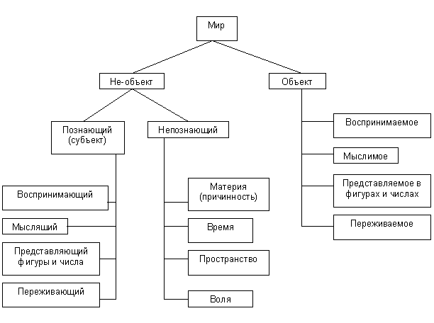
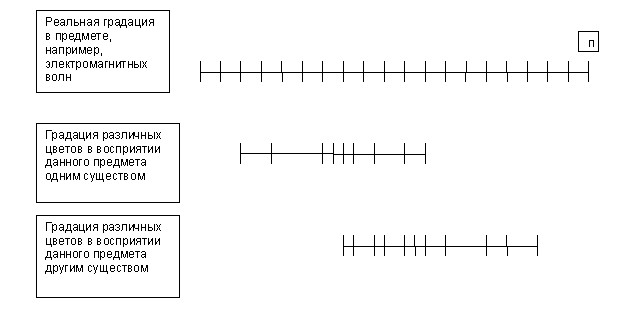
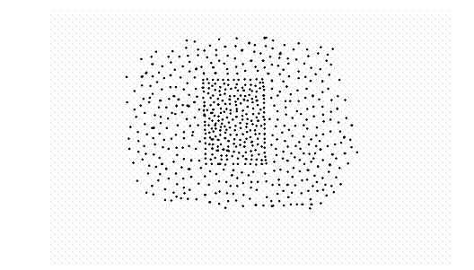

Глава 01. О материи как объекте и не-объекте.
§ 001. О самом большом заблуждении в философии
§ 001.1. О положении «материя всегда объект»
§ 017. О материи в фундаментальной проблеме
§ 001.2. О философских лагерях, построенных на
положении «материя всегда объект»
Отступление
§ 011. О так называемом основном вопросе философии
§§ 002. Истоки признания положения «материя всегда объект»
§ 003. Об антиномиях Канта
Конец главы 01
Глава 02. О субъективном и объективном
§ 004. О связи субъекта с объектом
§§ 005. Истоки признания положения «объективное – значит, независимое»
Конец главы 02
Глава 03. О системе не-объектов, или
не-объекты и их явления как объекты для субъектов
Введение
§ 006. Общее о системе не-объектов
§ 007. Первая необъект-объектная сфера
§ 008. Вторая необъект-объектная сфера
§ 009. Третья необъект-объектная сфера
§ 010. Четвертая необъект-объектная сфера
Конец главы 03
§ 016. Факт самоосознания
§ 012. О достоверности существования
§ 013. О наивысшей категории
§ 014. О важности точки зрения с позиций
одного и того же сознания в философии
§ 015. О внемировом духе в материализме
Указывавшиеся работы
Глава 01. О материи как объекте и не-объекте.
§ 001. О самом большом заблуждении в философии.
Основание возникновения мысли.
Вот уже немало веков в самой высотной, обобщающей интеллектуальной деятельности человечества – философии, – причем на самой ее вершине, царит совершенно нелогическое положение: лагеря. Нелогическим оно является потому, что лагеря, школы, подходы где бы то ни было представляют собой разнообразные толкования, ответы (признаваемые в качестве равноправных) на одни и те же вопросы, чего никогда не допускают вечные и вездесущие закон непротиворечия и закон исключенного третьего (1, § 001.3.2). И сколь бы сильно мне ни казалось это положение странным, а всё это множество веков лагеря философии сами по себе основываются на простейшем, очевидном заблуждении, и только благодаря ему их существование может быть возможно. Оно состоит в представлении, что материя есть не что иное, как объект и только. Другие словесные выражения этого представления – материя объективна, материя есть объективная реальность и т. п. (В последующем тексте я пользуюсь обычно словесным сочетанием материи и объекта; но если вам удобно и вы так больше привыкли, вы для себя можете, без существенных противоречий, понимать мое сочетание как сочетание материи и объективной реальности; правда, в этом случае я должен заметить, что понятие объективной реальности весьма сомнительно, ведь чтобы его принять, должна быть доказана эта самая реальность, а чтобы ее доказать, начинается множество проблем, в частности выражаемых в том, что любая реальность может быть доказана только субъективно направленным на нее познанием, см. ниже § 012 и § 002.4, а также «Z. Свободные дополнения», «О вещи в себе и не-объектах»). Так вот, на эту основу лагерей, с броской очевидностью ложную основу, никто никогда не обращает внимания. Впрочем, после разбора этой ошибки я даю несколько объяснений того, почему она оказалась незамеченной: §§ 002.
Помимо этого еще может возникнуть сомнение, что лагеря основываются на положении «материя всегда объект», ибо все привыкли верить гегелевской и советской философской школе, согласно которым философские лагеря различаются в соответствии с разным решением так называемого основного вопроса философии: что первично – сознание, дух или бытие, материя? Этому я посвящаю отдельный параграф: 011.
Анализ.
Два серьезных обвинения нависли революционной грозой над философскими многовековыми диктаторами:
1) материя всегда объект – заблуждение (§ 001.1),
2) философские лагеря основываются на следующем положении и возможны только благодаря ему: материя всегда объект (§ 001.2).
§ 001.1. О положении «материя всегда объект».
Я вижу стену, но не то, что за стеной.
Основание возникновения мысли.
Ныне существует такое представление, при котором невозможно допустить, чтобы была материя и в то же время она не была бы материей в качестве объекта: коль скоро есть материя, то она всегда объект. Иными словами, никто никогда не ставил под сомнение то, что материя всегда представляет собой объективную материю. Наоборот, только это представление и является признанным у Гомо Сапиенса.
Разоблачение заблуждения.
Как должно быть известно знающим людям, «объект» в философии принят не в обыденном значении – просто как некое отдельно данное тело или процесс, – и при этом он является категорией. В связи с этим под объектом в философии мыслится один-единственный признак: «познаваемость», – и в ответе на вопрос «что такое объект?» отвечается: «нечто познаваемое», «то, что познаётся». Таким путем можно уяснить, что «объект» – это «познаваемый предмет» («предмет» – в логическом смысле: всё то, о чем можно помыслить; поэтому здесь можно было бы сказать «объект – это познаваемое нечто»), «объективность» – «познаваемость», «объективный» – «познаваемый» и т. д., в связи с чем рассматриваемое положение («материя всегда объект») можно словесно тождественно выражать как «материя всегда объективна». Познавать же можно четверояким образом, и здесь нам учитель – бессмертный Шопенгауэр. Он нам легко может разъяснить, что всякое познание заключается, прежде всего, в сознании отдельных существ и может выражаться в 1) восприятии окружающего мира, 2) мыслях, 3) математических представлениях и 4) в переживаниях, эмоциях, стремлениях. Как можно видеть, «познавать» в переводе с традиционного философского языка на язык более обыденный можно выражать как «сознавать», «представлять», собственно, и в самой философии «представление» служит синонимом «познания». Таким образом, можно ставить знак равенства между «объектом», «познаваемым», «сознаваемым» и «представляемым».
Утверждение же «материя – всегда объект» говорит о том, что материя всегда познаваема, представляема, т. е. вечно и в любой своей части ее кто-либо познаёт, ощущает, осознаёт. Таким образом, каждая частица безграничной материи во все моменты вечного времени должна быть воспринимаема, мыслима, ощущаема. Только в этом случае можно утверждать, что материя всегда объект и не бывает материи необъективной, непознаваемой, непредставляемой.
Даже не знаю, следует ли мне теперь обратить внимание моего драгоценного читателя на самоочевидное и итак бросающееся в глаза: невозможно, чтобы каждая частица безграничной материи во все моменты вечного времени обязательно хоть кем-нибудь воспринималась, мыслилась или ощущалась. Даже непосредственно вокруг нас самих полным-полно материи, которую мы не видим, не представляем, не познаём, т. е. такой материи, которая не является объектом. Даже обратная сторона видимых нами в данный момент предметов уже есть материя как не-объект; не говоря уже про невидимые и неощущаемые электромагнитные волны и тому подобные материальные предметы. Таким образом, все говорят «объективная реальность», «материя как объективная реальность» и строят все свои дальнейшие мысли вокруг этого. А я говорю, что есть еще «необъективная реальность», «материя как необъективная реальность» и, строя свои дальнейшие рассуждения, следует не смешивать всё в неразборчивое единство, а различать эти разные вещи.
Некоторые, правда, могут сказать мне, мол, есть Бог, который всегда всё видит, т. е. применимо к философии именно Он выступает гарантом вечно и всегда объективной материи. Но, во-первых, это чистейшей воды нарушение презумпции недоказанности (см. § 006 в обл. 1), ошибка, которая абсолютно недопустима в любых рассуждениях. Ибо сначала нужно доказать как научный факт, что Бог существует и к тому же вечно и всё держит перед глазами. Правда, невозможно вообще всё иметь перед глазами, не говоря уже о том, что существование Бога может стать научным фактом. Во-вторых, это будет уже вовсе не философия, а мифология или религия, которым нет дела до безупречных научных и логических доказательств. В-третьих, Бог и всё, что с ним связано, – это есть всего лишь часть одного из известных лагерей – субъективного идеализма. Поэтому разоблачив впоследствии как ложный субъективный идеализм (§ 001.2), я отвечаю и на это, так сказать, возражение Богом. В-четвертых, философские лагеря и их проблемы никак не взаимосвязаны с вечным и всёвидящим Богом. Как будет еще показано (§ 001.2), проблема лагерей основана на том, что несомненно, и на том, от чего невозможно отвязаться: на существовании нас как субъектов, которые познают окружающий мир, материю, и которые невечны в своем существовании, и на существовании материи, которая вечна. К этой несомненной и неотвязной проблеме Бог (даже пусть вечно всё видящий) не имеет никакого отношения.
На всё это мне могут возразить примерно так: что-то очень сомнительно, чтобы хоть кто-то, хоть один философ, хоть один лагерь прямо и открыто заявил: «Материя только объективна. Материя всегда объект». – Но ведь в том-то и вся соль! Такого заявления до сих пор не могло быть в принципе. Ибо материю и представляют только как объективную и никакую больше. При нынешнем положении дел выражения по типу «только объективна», «всегда объективна» – это избыточные, тавтологические положения. Всем и так «понятно», будто материя только объективная и никакая другая, нет никакого смысла указывать на «единственный» возможный ее смысл. Я же сейчас с очевидностью показал, что материя может быть как объектом, так и не-объектом.
То, что материю действительно понимают только как объективную, выражается, например, в таком часто используемом определении: «материя – это объективная реальность». С точки зрения логики легко понять, что тем самым материю как понятие целиком и полностью поместили в понятие «объект». Однако и на это мне могут возразить, мол, материю хотели тем самым понимать только как независимую реальность, независимую от познания субъекта. Но даже если так, то это всё равно не избавляет материю в таком представлении от ее объективности, а будучи объективной она никогда не может избежать разбирательства при учитывании взаимных отношений между субъектом и объектом. Т. е. тогда, когда начинается учёт связи субъект–объект, сюда лагерями ввязывается неизбежно и материя, ибо ей уже дано определение как чему-то объективному. И этого бы не было, если бы материю понимали только как независимую реальность. Вообще-то полностью избежать понятия объективной материи всё равно не удастся, ибо материя может быть объектом. Здесь же, в рассматриваемом определении, в одном понятии «объективная» смешали и понятие «объект» (по определению зависимое), и понятие «независимая» (которым интуитивно хотели выразить независимое понятие «не-объект»). И надо заметить, эта ошибка проходит через всю имеющуюся философию: понятие «объект» включает в себя и зависимое понятие «объект», и независимое понятие «не-объект». Это, как видно, есть нарушение логического закона тождества, что неизбежно посеяло в философии многие двусмысленности, противоречия и ошибки. Избавиться от них можно только ясно открыв понятие «не-объект». Вообще, я отдельно разобрал и эту ошибку: почему объективное считается независимым, тогда как по своему определению должно считаться зависимым (§§ 005).
Шопенгауэром было доказано, что вечным спутником любого заблуждения выступает связка между субъектом и предикатом - «всегда». То есть при заблуждении в отношении какого-то предмета по отношению к нему думают, что он «всегда какой-то». Так же случилось и здесь: материя оказалась всегда объективной, что очевидно неверно. Вообще, в этом мире немного вещей могут похвастать, что они всегда какие-то. Поэтому представление о вещи как о всегда какой-то часто является заблуждением.
Резюме.
1. Объект – это некий познаваемый, сознаваемый предмет.
2. Положением «материя всегда объект» утверждается, что все частицы безграничной материи во все моменты бесконечного времени ощущаются или представляются.
3. Невозможно, чтобы все частицы безграничной материи во все моменты бесконечного времени ощущались или представлялись.
4. "Возражение Богом"
1) это недопустимое нарушение презумпции недоказанности,
2) относится к мифологии и религии, а не к философии, где властвуют безупречные доказательства науки и логики,
3) это всего лишь часть субъективного идеализма, ошибки которого я показал наряду с другими лагерями,
4) не может иметь касательства к проблемам философских лагерей, т. к. проблемы эти основываются на несомненном и неотвязном: на нашем с вами существовании и существовании материи.
5. Представление «материя всегда объект» есть действительно присущее лагерям и философам воззрение.
6. Двусмысленности, противоречия и ошибки возникают из-за того, что под «объектом» мыслят и «объект», и «не-объект».
7. Шопенгауэром было доказано, что в любом заблуждении связкой является «всегда». Так же случилось и здесь: полагают, будто материя всегда объективна.
Вывод 001.1.
Материя всегда объект – заблуждение.
§ 017. О материи в фундаментальной проблеме.
Основание возникновения мысли.
Материя требует дополнительных разбирательств в преддверие самого важного параграфа в сочинении. Как будет еще понято, основная проблема лагерей вовсе не в том, что первее другого (так называемый основной вопрос), а в том, как согласовать невечность субъекта и вечность материи. Так вот, действительно ли мы имеем дело с вечностью материи? В связи с этим не мешает также учесть, что материя существует в двух видах – в веществе и поле.
Разоблачение незнания.
Проблема в фундаменте философии настолько стара, что материя в ней понимается обычно только как вещество: исторически поле открыли недавно, да и причисляют его к материи до сих пор не очень-то охотно. Тем не менее, мне не помешает оперирование только материей как веществом, а если мне позволят еще иметь в виду и материю как поле, то моя позиция укрепится еще сильней. Данная фундаментальная проблема, на самом деле, сохраняется как проблема и в том случае, если учитывают только вещество, и в том, когда учитывают и вещество, и поле. Дело в том, что эта философская проблема чисто логическая (что и соответствует обычно именно философским проблемам), а не научно-историческая (что соответствует обычно чисто научным проблемам). То, что дело завязано на логике, покажет параграф об основании философских лагерей (§ 001.2).
Коль скоро я затронул проблему соотношения между веществом и полем, то пойду далее, ибо тут, в преддверие следующего параграфа, наиважнейшего в моем сочинении, как нигде требуется проверка положения «материя вечна». Дело в том, что вечность материи была установлена физикой и философией тогда, когда было известно только вещество. Полевую материю тогда либо вовсе не знали, либо не считали материей. С учетом ее можно переворачивать суждения до неузнаваемости. Если учитывать материю вообще, хотя бы один какой-то вид материи, то материя вечна. Нет такого момента на линии времени, чтобы не существовало материи вообще. По всей бесконечной линии времени существует вещественная материя, причем в одном и том же вселенском количестве. Поэтому следует признать, что материя вечна. Но в то же время, если разбираться со свойствами полевой материи (например, мое понимание отождествляет полевую материю и ее напряженность, а напряженности полевой материи не приписывает закон сохранения энергии, т. е. о поле нельзя говорить, как и о веществе, мол, оно вечно существует всегда в одном и том же количестве во вселенной), то можно попытаться доказывать ее невечность, ее уничтожимость и исчезновение, каковые никогда не бывают в вещественной материи вообще. Поэтому если мыслить материю как всю возможную материю, как все виды материи, как в целом материю, то выражение «материя вечна» становится сомнительным. Однако, как я полагаю, даже и в этом случае материю всё же придётся считать вечной, несмотря на эту сомнительность. Ведь если считать не вечной, то тогда нужно отыскать такой момент на линии времени, когда ее не существовало, а это значит, когда не существовало никаких сил упругости (действующих, физических, появленных сил), сил отталкивания и притяжения, центростремительных и центробежных сил между космическими телами, сил всемирного тяготения, света и вообще электромагнитных волн. В нашем бесконечном космосе, с наличием вечного вещества, будь то пыль или планеты, и, пожалуй, с наличием вечно существующих звезд (т. е. в любой выбранный момент существовала хотя бы одна звезда в безграничном космосе) такое положение без действующих сил, полей и электромагнитных волн невозможно. Поэтому несмотря на возможные странности существования полевой материи ей тоже следует приписывать вечность в целом (хоть и не вечность в количестве). Если же учесть именно тот момент, что, например, какие-то волны распространяются за счет того, что участок волны появляется, собственно, из ничего на пустом месте пространства и туда же, в ничто, уходит (если рассматривать абсолютно выделенный участок пространства), то это частное появление и уничтожение следует приравнивать к такому же частному рождению и умиранию людей, т. е. тел, этих возможных разновидностей вещественной материи.
Резюме.
1. Мое решение проблемы не зависит от того, учитывать ли только вещество или вещество и поле совместно.
2. Материя вечна.
Вывод 017.
Возможное учитывание в материи двух ее видов – вещества и поля – не влияет на мое решение фундаментальной проблемы.
§ 001.2. О философских лагерях,
построенных на положении «материя всегда объект».
Основание возникновения мысли.
Никто не замечает, что философские лагеря возможны только благодаря тому, что основываются на очевидном заблуждении: материя всегда объект. То, что это заблуждение, сомневаться не приходится (§ 001.1). Остается проверить, действительно ли лагеря основываются на этом положении.
Разоблачение незнания.
Если признать истину, в которой не приходится сомневаться (она доказана теоретически Шопенгауэром и экспериментально физикой, а также еще раз пояснена в § 017), «материя вечна» и считать при этом положение «материя всегда объект» истиной, то получится материализм. Происходит это следующим образом. – В философии давно уже было доказано, что субъект (познающий) и объект (познаваемое) вещи неразрывные и не могут быть даны друг без друга (это доказано также в § 004). Схематически это можно показать взаимозависимой стрелкой: субъект <–> объект. В качестве познающего, однако, никто не может быть вечным. В таком случае объект тоже не может быть вечным. Но тогда возникает проблема: материя, будучи всегда объектом (объект <–> материя), в таком случае тоже не может быть вечной, что не может принять материализм. Тогда, признавая вечность материи и невечность субъекта, остается считать, что объект и субъект – вещи вполне независимые и могущие быть даны отдельно (субъект <– объект; в этом отношении в материализме субъект и всё субъективное зависит от объекта, от объективности, но никак не объективное от субъективного). Тогда субъект спокойно «умрет» без объекта, а объект будет существовать вечно вместе с материей (субъект <– объект <–> материя). (Было бы неправомерно дать слово «умрет» без кавычек, ибо оно относится к существованию биологических существ, тогда как здесь оно было применено к отдельному, мало что говорящему, признаку – познающее). Именно таков материализм, стоящий на отрицании проверенной взаимозависимости субъекта и объекта и на утверждении вечности материи, которую он считает всецело объективной.
Если признать истину, что субъект и объект – вещи неразрывные, и при этом считать положение «материя всегда объект» истиной, то тогда получится объективный идеализм. – Если субъектом невозможно быть вечно, то и объект тоже невечен. Тогда и материя, будучи всегда объектом, не может быть вечной и стоит в той же зависимости от субъекта, что и объект (субъект <–> объект <–> материя). Пример правдоподобного, внушающего убеждения этого могу предложить у Шопенгауэра во втором томе его главного труда, где он персонифицирует диалог материи и субъекта. Именно таков объективный идеализм, основывающийся на отрицании вечности материи и отрицании ее независимого существования от существования объективного познания субъекта.
Если признать только то, что объект зависит от субъекта и не может быть дан отдельно (не признавая, что и сам субъект тоже зависим от объекта; т. е. если признать данную схему «субъект –> объект»), и при этом считать истинным положение «материя всегда объект», то получится субъективный идеализм. (Это странное раздвоение истины связи субъекта и объекта у субъективного идеализма обусловлено тем, что для него сущность мира, не зависящая ни от чего, – это субъект). – В таком случае от субъекта так же зависит материя, ибо она всегда представляет собой объект, иначе говоря, материя тоже не может быть дана без субъекта (субъект –> объект <–> материя). Именно таков субъективный идеализм, базирующийся на отрицании зависимости самого субъекта от объекта, а также – на отрицании вечности и независимости материи.
В решении этой фундаментальной проблемы были также оригинальные решения. Необычное решение Лейбница можно, в общем-то, относить к идеалистическому решению, ибо материализм никогда бы не решился наделить сознанием каждую элементарную частицу. Чтобы существование материи оказалось вечно возможным наряду с невечностью взаимосвязанных субъекта и объекта, Лейбниц «вышел» из тупика тем, что «наделил» каждую неразделимую частичку материи (вещества) сознанием. Каждая частичка материи, будучи объективной, могла бы быть вечно объективной, если бы с ней не расставалось сцепленное с ней субъективное познание. (Эти вечно самоосознающиеся частицы материи он называл монадами, а это учение – монадологией). Его решение обросло бы еще большим мхом проблем, если бы ему пришлось учитывать вдобавок и полевую материю, которая, как доказывает физика, в отличие от вещественной материи, не имеет составляющих. При таком лейбницевском подходе материя остаётся вечной и достоверно существующей, связь субъекта с объектом не подлежит сомнению. Но однако же, субъект с объектом стали вечными (хотя нет познающего вечно), причем за счет того, что является ложным – каждая частичка обладает сознанием. Наличие сознания возможно только при наличии нервной системы (это доказывается в системе не-объектов). Если Лейбниц прав, то тогда, помимо прочего абсурдного, каждая элементарная частица моего тела, будучи материальной частицей и будучи в сознании, должна общаться с другими частицами и со мной, ибо я тоже обладаю своим нераздельным сознанием. Вероятнее всего, решение Лейбница следует представлять следующей схемой: субъект <–> объект <–> материя, где все звенья получают вечность. Представить решение в другой связи, например, как субъект <–> объект –> материя, пожалуй, неверно. Ибо тогда материя бы объявлялась зависимой от связи субъект-объект и получала бы достоверное вечное существование за счет этой связи, тогда как Лейбниц решал проблему именно с тем, чтобы привести к гармонии заранее данное представление о вечно и независимо существующей материи. Хоть Лейбниц и пришел к итогу, где достоверное существование материи как раз зависит от связи субъект-объект, но пришел он к этому именно ради того, чтобы дать обоснование вечности материи, той вечности, которая изначально не подлежала у него сомнению, но просто не могла быть сразу обоснована. Вечность и независимость материи изначально принималась Лейбницем и оставалась непоколебимой, служила ему предпосылкой рассуждений, а не выводом. Но сразу же обосновать эту вечность и независимость было невозможно потому, что материю считали лишь объективной, исключительно как состоящую из объектов и только. О материи как не-объект ни тогда, ни сейчас никто не говорил. Прими Лейбниц эту мою истину и, возможно, автором этого сочинения был бы не я в XXI веке, а Лейбниц в XVII. То, что мы должны признавать у Лейбница именно данную схему (субъект <–> объект <–> материя), а не иную (субъект <–> объект –> материя), обусловлено именно тем, что Лейбниц и не пытался вводить коррективу между объектом и материей; она для него оставалась объективной материей и только (объект <–> материя), и именно из-за этого он стал разрабатывать монадологию. Вообще, специфика данного (лейбницевского) решения проблемы заключается в том, что несостыковка невечности субъекта и вечности материи в одной взаимосвязанной цепочке разрешается наделением атрибутом вечности всех звеньев.
Если же попробовать признать все истины, данные выше: и то, что субъект невечен, и то, что материя вечна, и то, что субъект и объект неразрывны, – и при этом считать за истину «материя всегда объект», то тогда получится простое противоречие, поэтому на него никто не решился, оно броско, оно бросается в глаза и на его основе невозможно выстроить долговременный лагерь. Субъект, объект, материя представляют собой последовательную и неразрывную цепочку (субъект <–> объект <–> материя), на одном конце которой невечность (субъекта), а на другом – вечность (материи). Признание чего-то одного приводит к разрыву цепочки в том или ином месте и к какому-либо лагерю. Признание обоих невозможно ввиду явного противоречия и несовместимости.
Завершающим аргументом к тому, что лагеря основаны на заблуждении «материя всегда объект», должна здесь служить проверка того, сохранятся ли лагеря со своими позициями, если перестать считать, что «материя всегда объект» – истина. Проверим.
Итак, как показал параграф 001.1, материя может быть не-объектом. То, что она к тому же может быть и объектом (например, воспринимаемой) не приходится сомневаться: даже прочтение этих строк основано именно на возможности восприятия материи. Субъект невечен. Субъект и объект взаимозависимы. Материя вечна. В качестве вечной она не может представать как объект, ибо объект невечен вместе с субъектом. Это согласуется с тем, что материя может быть не-объектом (объект и субъект могут уйти в небытие, материя при этом продолжит свое вечное существование в качестве не-объекта). В качестве объективной (воспринимаемой, например) она не является вечной: разумеется, нет такой материи, которая кем-либо вечно и беспрерывно воспринимается, представляется. Это согласуется с тем, что материя может быть объектом (пока материя познаваема, она – объект, в таком образе для заданного субъекта она не вечна), а также соответствует тому, что субъект невечен, а вместе с ним и объект невечен.
Иным может показаться, что я просто нарушаю логический закон тождества и признаю материю то вечной, то невечной, когда мне это удобно, чтобы согласовать все истины. Если есть такие невнимательные, то они заставляют меня повторяться: материя, в самом деле, вечна, а как таковая она, конечно же, есть не-объект, а если она познаваема (представляет собой тот или иной объект в сознании субъекта, познающего), то как таковая она не может быть вечной. Поэтому субъект и объект в таком подходе могут быть без противоречия всегда сцеплены и невечны, в чем, собственно, и состоит истина между субъектом и объектом.
Таково беспротиворечивое признание всех истин. Как таковое оно не относится ни к одному лагерю, не находит своего места ни в одном из них. Более того, его нельзя назвать новым лагерем, ибо оно само собой уничтожает все другие лагеря, на своем фоне делает невозможным существование лагерей, причем не на какое-то время, а на века, ибо оно состоит не в предположениях и гипотетических выкладках, требующих дополнительных проверок, а полностью состоит из всех известных по этой проблеме проверенных истин, причем состоит гармонично и согласованно, а не как-либо наваленно в неразборчивую кучу, а также отбрасывает при этом все ложности и недоразумения. Тем более этот взгляд не имеет ничего общего с какими-то промежуточными воззрениями между материализмом и идеализмом, например, с дуализмом. Все эти промежуточные или какие-то подобные лагеря, имеющие меньше обоснованности и силы голоса, чем материализм и идеализм, точно так же невозможны на фоне представленной здесь истинной основы всей, безлагерной философии.
Отдельно по дуализму можно сказать, что он решил проблему так. «Ну, раз частично верно представление материализма и частично верно – идеализма, значит, простое совмещение их приведет к абсолютной истине. Первичны и материя, и дух. Прав и материализм, и идеализм». Поэтому в то время как существует мнение, что верен только материализм, и существует мнение, что верен только тот или иной идеализм, на этом же фоне существует мнение, будто бы оба лагеря материалистов и идеалистов верны. В нижеприведенной таблице дуализм – это, по существу, представление, которое занимает сразу три первых столбика (материализма и двух идеализмов). Это представление нисколько не согласуется с внелагерным представлением, которое занимает исключительно последний столбик. Ибо помимо того, что внелагерное представление избавлено от отрицания истин, наследие чего дуализм получает от своих родоначальников (материализма и идеализма), это внелагерное представление даже и не берется за вопрос, что первичней, на поводу которого слепо идут триста лет другие, и к тому же оно с полной противоположностью утверждает, что и материализм, и идеализм в корне не верны.
Таким образом, чтобы еще легче было сравнить представление лагерей и мое представление по этой проблеме, можно сопоставить взгляды в таблице. Что касается истины «материя может быть объектом и не-объектом», то в этом случае схематическую связь можно показать как «объект <– материя», ибо в соответствии с этой истиной не материя как-то сцеплена с объектом, а, наоборот, объект зависит от материи и по воле субъекта то появляется на ней, то исчезает с нее.
истины |
взгляды |
материализм |
объективный
идеализм |
субъективный
идеализм |
монадология
Лейбница |
моя
единая
основа |
субъект
невечен |
согласен |
согласен |
не
согласен |
не
согласен |
согласен |
материя
вечна |
согласен |
не
согласен |
не
согласен |
согласен |
согласен |
нет объекта
без субъекта
и наоборот
(субъект<->объект) |
не
согласен |
согласен |
не
согласен |
согласен |
согласен |
материя
может быть
и объектом,
и не-объектом
(объект<-материя) |
не
согласен |
не
согласен |
не
согласен |
не
согласен |
согласен |
Несогласие лагерей с истинами происходит потому, что для решения возникшей фундаментальной проблемы постоянно вводилась корректива в связи между объектом и субъектом и никогда не затрагивалась связь между объектом и материей. Все варианты зависимостей между объектом и субъектом были перепробованы: то они оба взаимозависимы, то субъект не зависит от объекта, то объект не зависит от субъекта. Однако то, что связь эта неразрывна и взаимозависимость здесь не подлежит сомнению, было уже доказано в философии. Вопреки этому совершенно не затрагивалась ложная взаимозависимость между материей и объектом. Схематически и для сравнения это выглядит так (эти схемы уже показаны выше в соответствующих местах):
сама проблема: субъект <–> объект <–> материя
материализм: субъект <– объект <–> материя
субъективный идеализм: субъект –> объект <–> материя
объективный идеализм: субъект <–> объект <–> материя
решение Лейбница: субъект <–> объект <–> материя
мое представление: субъект <–> объект <– материя.
Выше я говорил, что сама проблема не была взята за основу ни для какого лагеря, потому что противоречие ее будет слишком броско. Однако можно увидеть, что объективный материализм и Лейбниц якобы переняли эту проблему идентично. На самом деле это не так. Объективный материализм перенял эту проблему с некоторыми поправками: если в самой проблеме материя вечна, то в объективном материализме она не вечна. А особенность решения Лейбница заключается в наделении всех звеньев цепочки атрибутом вечности.
Если к этим моментам вечности и невечности учитывать еще и ту необязательную (несущественную) специфику субъективного идеализма, к которой он может обращаться, но может и не настаивать на этом, а именно, признание субъекта вечным (эта специфика появляется, например, при богословском уклоне субъективного идеализма или когда субъект выступает вечной сущностью мира), то легко понять, что и любые варианты на краях проблемы тоже были перепробованы:
сама проблема: субъект (невечный) <–> объект <–> материя (вечная)
субъективный идеализм: субъект (вечный) –> объект <–> материя (невечная)
объективный идеализм: субъект (невечный) <–> объект <–> материя (невечная)
решение Лейбница: субъект (вечный) <–> объект <–> материя (вечная).
Мою же позицию вычислить легко: я признаю известные истины. Субъект, конечно, невечен. А материя вечна. Согласовать эти крайние и противоречащие истины можно как раз тем, что я отказываюсь считать за истину ложное представление о материи только как об объективной:
мое представление: субъект (невечный) <–> объект <– материя (вечная).
Как теперь видно, чего только не делали в фундаментальной проблеме, чего только не перепробовали, чего только не меняли, чего только не выдумывали, от каких только истин ни отказывались. Не отказывались только от одного – от заблуждения «материя всегда объективна».
Резюме.
1. Признание теоретически и экспериментально доказанной истины «материя вечна» при принятии представления «материя всегда объект» порождает материализм.
2. Признание давно проверенной истины «субъект и объект неразрывны» при представлении «материя всегда объект» порождает объективный идеализм.
3. Если признать пол-истины «объект зависит от субъекта», не признавая оставшуюся часть «субъект зависит от объекта», то при представлении «материя всегда объект» возникает субъективный идеализм.
4. Если считать, что материя в каждой своей частичке есть объект («материя всегда объект»), то «спасти» ее вечность и независимость можно попыткой «наделить» каждую частичку материи сознанием. Таково было очевидно ошибочное решение Лейбница.
5. Признание всех истин (субъект невечен, субъект и объект неразрывны, материя вечна) при представлении «материя всегда объект» приводит к броскому, очевидному самопротиворечию. Поэтому на этой основе не зародился ни один лагерь.
6. Отрицание заблуждения «материя всегда объект» приводит к признанию всех известных истин по этой проблеме с отметанием всего ложного, что уничтожает все лагеря (в том числе промежуточные) и воцаряет единственно верную, беспротиворечивую онтологически-гносеологическую основу всей (безлагерной) философии.
7. Сравнительные схемы показывают следующее.
истины |
взгляды |
материализм |
объективный
идеализм |
субъективный
идеализм |
монадология
Лейбница |
моя
единая
основа |
субъект
невечен |
согласен |
согласен |
не
согласен |
не
согласен |
согласен |
материя
вечна |
согласен |
не
согласен |
не
согласен |
согласен |
согласен |
нет объекта
без субъекта
и наоборот
(субъект<->объект) |
не
согласен |
согласен |
не
согласен |
согласен |
согласен |
материя
может быть
и объектом,
и не-объектом
(объект<->материя) |
не
согласен |
не
согласен |
не
согласен |
не
согласен |
согласен |
сама проблема: субъект (невечный) <–> объект <–> материя (вечная)
материализм: субъект <– объект <–> материя
субъективный идеализм: субъект –> объект <–> материя
объективный идеализм: субъект (невечный) <–> объект <–> материя (невечная)
монадология Лейбница: субъект (вечный) <–> объект <–> материя (вечная)
моя единая основа: субъект <–> объект <– материя.
Вывод 001.2.
Философские лагеря возможны только благодаря тому, что основываются на очевидном заблуждении: материя всегда объект. При отчетливом выявлении этого заблуждения вместо лагерей возникает одна и единая истинная онтологически-гносеологическая основа всей философии.
Отступление
Мне почему-то кажется, что свершившийся здесь переворот в философии не будет принят большинством и достаточно быстро. Полагаю, что некоторые, кто тратил всю свою жизнь на определенные убеждения, не захотят расставаться с ними после нескольких минут короткого прочтения вышесказанного. (Но ведь таковы все перевороты! – Они свершаются за несколько минут, если вообще свершаются.). Тем более, свершившаяся революция задевает не одно поколение, а несколько веков, если не тысячелетий, когда верили в лагеря.
Принять это новейшее революционное воззрение для всей философии можно только тогда, когда проникнутся пониманием, что любой лагерь и все они потому-то и существуют, что они ложны. Когда проникнутся пониманием, что их существование само по себе есть выражение чего-то ложного. Многократное объяснение мира лагерями – это шизофрения Гомо Сапиенса. Если бы на Землю прилетели инопланетяне, они бы долго смеялись над тем, что эти носители разума верят в многократное объяснение мира, считая каждое их них верным, будто бы они живут не в одном и том же мире, а в многократно разных мирах. Понятно, какую оценку они должны были бы дать уровню нашей разумности. Конечно, достигать понимания ложности лагерей сложно, если вы уже и всю жизнь верили в них. В гораздо лучшем положении окажутся те, кто родившись на этот свет побегут первым делом не за шизофренией, а за непредвзятостью, оценят сначала внелагерное воззрение, а потом разберутся с лагерями, существовавшими до него. Тогда-то им будет проще понять, что лагеря – это просто ошибка, долго засевшая в истории, примеров чему было немало и в философии, и в науке. Поэтому любое новое поколение окажется в более выгодном положении. Ведь оно хочет познания, хочет истинного объяснения, а не наоборот – запутанности и непонятности. Ведь ему не будет внушаться с рождения, что есть только лагеря и они только истинны, что запутанность и непонятность – это вам и есть объяснение и истина, так что принимайте, проглатывайте и не спорьте. Поэтому-то современники этого открытия, которые, собственно, ничего и не знают, кроме лагерей, стоят в очень невыгодном положении. Через пару сотен лет от лагерей и след простынет. О них даже и знать не будут, точнее, знать о них будут не больше, чем о части ошибочной в своё время истории. Современники же будут стоять на распутье – принять ли им истинное воззрение будущих тысячелетий или же продолжать держаться за своё, которое, не имея истинности, уйдёт вместе с ними в могилу. Действительно, опередить ли свой век, преодолеть ли собственную смерть, став на одну ногу с теми, кто будет мыслить так же все будущие века? Или же лучше не побрататься с будущей вечностью, продолжая обнимать своё ложное воззрение, которое точно так же подобно Земле на трех китах и Солнцу, вращающемуся вокруг Земли?
Самое поразительное, что каждый сторонник материализма и идеализма, а также любого другого лагеря, знает, в чём он абсурден. Я и сам прекрасно это знаю и понимаю, и не просто в изложенном выше открытии, а прямо-таки изнутри, ибо в своё время я был и страстным защитником материализма, и когда-то – непоколебимым стражем идеализма, и даже шёл за Декартом по пути дуализма. Поэтому, кстати, пусть никто и никогда не думает, будто я поверхностно знаком с лагерями и только завидев их, вздумал их здесь налегке опровергнуть. Сторонник любого лагеря прекрасно видит свои ошибки. На них ему из века в век указывает оппонент из другого лагеря. Он и сам о них думает втихомолку. Но оппоненту он отвечает совсем уже другое: «Ты сначала на себя посмотри. Вот это ты видел! У меня оно в порядке. А у тебя – чушь чушью!».
Я также считаю, что некоторые выйдут из этого сложного для них положения тем, что скажут: «Да, если признать как перводопущение вот это новоявленное понятие «не-объект», то тогда сказанное о лагерях верно. Но если всё-таки не увлекаться такими новенькими выдуманными понятиями, не окунаться в омут таких громоподобных предпосылок, то существование лагерей, их противостояние и всё, что с ними связано уже много веков, остаётся в силе, как стояло, так и будет стоять». Точно так же можно было сказать: «Да, если признать очевидную новую истину, то всё становится истинным. Но вовсе нет крайней нужды в её свете рассматривать лагеря. Это вовсе не обязательно. Поэтому существование лагерей вполне может рассматриваться без привлечения этой истины. Поэтому всё, что связано с лагерями, вовеки веков является непоколебимым». То есть, иными словами: «Да, если иметь в виду истину, то всё станет беспротиворечивым и истинным. Но зачем иметь ее в виду? Наряду с этим истинным воззрением может вполне существовать и наше ложное воззрение о лагерях. В этом параллельном существовании нет никаких проблем». Полная абсурдность таких отговорок и нелепых оправданий очевидна. Вообще-то точно так же могут говорить не только о понятии «не-объект», точно так же могут говорить «если учитывать несомненность положения о связанности субъекта и объекта», «если учитывать несомненность положения о вечности материи», «если учитывать несомненность положения о невечности субъекта», «если учитывать именно эти четыре истины в таблице, не больше, не меньше». Но с таким же точно успехом каждый может сказать: «Если учитывать выкладки Галилея и Коперника, то да - Земля крутится вокруг Солнца, а Солнце неподвижно находится в центре Солнечной системы. Но это первоусловие «если…» можно и не учитывать, так что Птолемеевская система мира остаётся непоколебимой и истинной. Положение о Солнце, вращающемся вокруг Земли, и о Земле в центре вселенной остаётся в силе». Нужно понимать, что здесь дано не что-то параллельное, здесь сделано не предложение рассматривать (как еще один вариант) лагеря и с точки зрения понятия «не-объект», а здесь показан один-единственный неизбежный для каждого путь истины, при котором ясно, что лагеря есть безусловно ложное явление и подлежащее уничтожению, а на их месте на самом деле стоит и должна стоять только одна единая основа всей философии. Высказанное здесь открытие – не гипотеза и не какое-то там предложение иметь в виду и его тоже, а это единственно возможное, что может и должно существовать. Это – опровержение лагерей как ложных образований и установление единственно верного на этом месте. Не понимать этого и продолжать думать, будто возможно и то, и другое – значит не понимать многих азов, начиная с единственности истины по любому отдельно взятому вопросу и заканчивая тем, что не может быть одновременно истинным и верным и истинное, и ложное. Нельзя уклоняться от истины и думать, будто ложное – это тоже истинное.
Мне также кажется, что кто-то вспомнит и зацепится за то, что я еще далеко не стар и не седовлас, чтобы творить такие великие вещи, наоборот, я еще слишком молод для этого. Вот если бы я был пожилым профессором и написал по этому поводу не пару параграфов, а хотя бы три сотни страниц, тогда бы, возможно, пожилой ученый мир к этому бы и прислушался немного. Но на это я могу сделать простое замечание: истина, чтобы быть истиной, не нуждается в том, чтобы ее расписывать на ненужные (по крайней мере, в рассмотренном вопросе) сотни страниц, и, как показывает история человечества, обычно все великие достижения и открытия совершались энтузиазмом молодых и очень юных людей. (Хотя я не понимаю, почему меня нельзя считать старым, ведь я родился аж в прошлом тысячелетии; я даже в школу пошел в стране, которой уже нет на карте мира; и, между прочим, я уже частично сед). Я удивлю вас больше, если замечу, что мне было девятнадцать лет (19), когда я открыл эту истину и записал ее рукописно. Существует даже точная дата: в ночь, когда я смотрел хоккейный финал в Солт-Лейк-Сити, который был примерно 22 февраля 2002 года, точную дату финала не помню; но если это точно, то и невероятно поразительно – ведь это число есть день рождения Шопенгауэра; при этом я нисколько никого не обманываю, не пытаюсь подтасовать факты к вещам, которые мне небезразличны, ибо эта реальная история была спровоцирована действительными предшествующими событиями – моей тогдашней вечерней прогулкой и беседой со знакомой мне парочкой; это возможное недоверие ко мне я всё-таки хочу разоблачить рассказом об этой истории (см. ниже). Но, честно говоря, я почти не смотрел тот финал, а с большой дозой подскочившего адреналина делал черновые записи в старой тетрадке. Как я сам считаю, это разоблачение самое важное во всем моем сочинении и, вроде бы, самое первое в моей жизни. По-моему, высказанным намеком на неприятие сделано хорошее предположение для другого параграфа: о ложных критериях истины, принятых в обществе, см. 1, § 010.
Вообще, если бы это разоблачение сделал не я, а, скажем, какой-нибудь ничем грандиозным не отличившийся Грасиан или Шамфор (хотя это великолепные средневековые философы практической философии), то я бы, понимая его значение, называл сделанное разоблачение самым великим за всю историю философии, а его первооткрывателя превозносил бы не меньше Шопенгауэра. А если бы я еще понимал значение и всеобъемлемость философии, ее значение и всеобъемлемость для наук, ее роль для искусства и даже обыденной жизни, если бы я понимал, что установлено нечто самое высотное и установлено раз и навсегда в самой высотной интеллектуальной деятельности разума во вселенной, и при этом разрушено многовековое ложное и ошибочно всеми признаваемое на этой же самой высоте, то я бы называл это разоблачение самым великим в духовной деятельности человека за всю предшествующую историю человечества; более того, понимая, что разум и логика (а следовательно, и всеобъемлющие свойства философии) – это вещи равнозначимые для любого возможного разума во вселенной (смотрите ниже «Не-объекты и их явления как объекты для субъектов», а также представления Шопенгауэра и Канта), в таком случае это разоблачение я бы непременно называл не просто величайшим достижением именно значимым лишь для Гомо Сапиенса, а значимым для любого возможного разума во вселенной, в чем, между прочим, Гомо Сапиенс сможет гордиться перед другими возможными разумными существами. Можно даже подсказать тем, кто отправляют в далекий космос беспилотные корабли с признаками, отличающими великую деятельность Гомо Сапиенса, отправлять всяческие таблицы, схемы и пояснения с нашим (уже нашим) пониманием того, каков этот мир в своих основаниях, который одинаков для любых просторов космоса.
Несмотря на то, что моему читателю это может показаться некоторым отвратительным хвастовством, это на самом деле есть просто отношение, то отношение, которое, как видно, вынужденно рождается из понимания других вещей, то есть обосновывается внешними аргументами и посторонними пониманиями. Хвастовство же – это то явление, которое не обосновывается и не поддерживается никакими внешними пониманиями и аргументами, а просто выставляет напоказ нечто безо всякого обоснования и просто восхваляет его само по себе в его полной обособленности от других вещей. Такова же бывает и некоторая критика: она просто обвиняет, но не может ни опровергнуть, ни доказать обратное. Именно потому, что я выражаю отношение к открытию, а не к своему открытию, я бы относился к нему и его автору точно так же, даже если бы он независимо от меня и самостоятельно (не зная о существовании этого сделанного мной открытия) сделал бы его до меня.
Что касается упомянутого мной дня рождения моего исторического воззрения в основах философии, то оно выглядит слишком подозрительным, ибо совпадает или почти совпадает с днем рождения Шопенгауэра, к которому я, так сказать, не отношусь равнодушно. Поэтому я собираюсь сделать то, что в моих силах против этого недоверия, – рассказать реально произошедшую историю, которая побудила меня совершить данное открытие. К прочему, я до самого последнего момента не замечал, что эта дата вдобавок и весьма мистична: 22.02.2002, первая подобная дата после окончания 2-ого тысячелетия. Да еще и Шопенгауэр, мой учитель, свое главное сочинение, как он сам к нему относился и как то есть на самом деле, создал в 2-ух томах. Так вот.
В тот день, точнее в ночь на тот день, когда россияне проиграли в хоккейном финале на далеко не самой честной олимпиаде в Солт-Лейк-Сити, я вышел погулять с другом и его подружкой. Я выходил под впечатлением идей субъективного идеализма. Об этом же у нас зашел спор. Я отстаивал идеализм, а мои друзья отстаивали свою обыденную точку зрения; она же есть в философии материализм. В тот момент, когда я почти доказал, что окружающие вещи просто даже как-то и не могут существовать без нашего их восприятия, был тихо-мирно задан вопрос, как оказалось впоследствии, грандиознейший по своей историчности: «Тогда что же это такое?».
Я остановил себя и задумался. Я чувствовал, что отстаиваемая мной точка зрения слишком парадоксальна, а с точки зрения логики парадокс – это какая-то ошибка. Но вместе с тем я понимал, что и мои друзья не во всем правы, хотя их воззрение кажется столь естественным и понятным. Я чувствовал, что здесь царит какая-то простая двусмысленность во взаимопонимании. Будто они мне доказывают одно, а я им другое, хотя при этом речь идет об одном и том же. И тут я решил избавиться от этого взаимного непонимания, двоякого представления одних и тех же вещей. Я захотел логично примирить разносторонние точки зрения, сделать понятным идеалисту то, что он не понимает у материалиста, а материалисту – то, чего он не понимает в идеализме. Собственно, вот та контрольная точка, вот тот чекпойнт, если хотите: я захотел объяснить обоим то, что они не понимают друг у друга. Я стал думать. В эту ночь, придя домой, я в одно мгновение прозевал хоккейный матч, то отвлекаясь на него, то на свои мысли и черновые пометки на клочках бумаги. Наконец, мне пришел на ум простой, но исторический пример: я вижу стену, но не то, что за стеной.
Вы можете спросить, ну и что же это за пример такой? – Это просто другое слововыражение для основания всей философии: материя может быть объектом и не-объектом. Во все времена никто об этом не задумывался. Для всех материя – это объективная реальность и только. А ведь молчаливо признаваемое философскими лагерями это ложное положение «материя всегда объект» породило взаимонепонимание и сами эти лагеря. Вы можете себе представить?! – Никто никогда не обращал внимания на то, что он видит стену, но не то, что за стеной. Как и во всяком великом открытии, – мелочь, всем известная и незамечаемая и ставшая столь грандиозной. Мне сейчас вспоминаются разноцветные круги на мыльной пленке на поверхности воды. Известная всем тысячелетиями интерференция света была открыта и объяснена, только когда некий мыслитель обратил на нее свое любознательное внимание.
С тех пор мои черновые заметки росли и нынешний их метаморфоз в ваших руках. Если бы не спокойный вопрос «тогда что же это такое?» и «я вижу стену, но не то, что за стеной», я бы, пожалуй, вообще никогда не взялся за перо: не было бы смысла. Даже многие мои другие (научные, философские и житейские) открытия исходят из этих начал моей философии и без них были бы невозможны.
(Я долго думал, что уточнить упомянутую дату по прошествии многих лет будет хлопотным и даже несколько бессмысленным делом. Но перед самым выходом сочинения в свет я нашел способ достаточно быстро и легко уточнить эту дату. Через пять лет после этих событий перед моими глазами предстала надпись, согласно которой матч начался 23 февраля 2002 года по дате по Москве, это был, оказывается, полуфинал (напомню: США – Россия). Я точно помню, что он начался в начале 23 числа, то есть примерно в 1 час ночи по московскому времени. Значит, открытие пришло мне в голову поздним вечером 22 февраля. Поначалу я запомнил, просто так, на всякий случай, только саму дату, связав ее в памяти с матчем, которого ждала вся Россия. Однако я долго не придавал ей никакого необычного значения. Я даже не помнил эту дату точно. А она, всё-таки, заслуживает небезразличного отношения...).
§ 011. О так называемом основном вопросе философии.
Основание возникновения мысли.
Я провожу различие между философскими лагерями на основании того, как они решают проблему в цепочке субъект-объект-материя, причем общая основа для всех них – это видение материи лишь как объективной (§ 001.2). Вообще-то, согласно терминологии основного вопроса я не сильно исказил его подход: у меня так же проблема стоит на двух крайних точках – субъекта (сознания) и материи (бытия). Однако считать именно указываемый известный многим поколениям вопрос основным вопросом, именно на его основе проводить различие между философскими лагерями – значит сильно заблуждаться.
Разоблачение заблуждения.
Этот вопрос выставляет в край угла проблему: что первично – сознание, дух или материя, бытие? Но проблема философии и лагерей вовсе не в вопросе, что первичней, а в том, как согласовать невечность субъекта и вечность материи. Проблема противоречия между невечностью и вечностью не имеет ничего общего с тем, кто первее. Эта проблема и основа лагерей возникла из видения материи только как объективной. Именно это положение (материя всегда объективна) и становится общей основой всем лагерям, а вовсе не вычурный основной вопрос. А различие между лагерями наступило вследствие того, как им вздумалось разорвать связь между субъектом и объектом, из-за чего они и отвечали: «Вечен субъект, невечен субъект, вечна материя, не вечна материя». Это не то же самое, если сказать: «Сознание, дух первичней материи, оно обуславливает материю» или «Материя первичней сознания, духа, она обуславливает сознание». Но связь между субъектом и объектом уже давно была доказана в философии как неразрывная и потому неприкосновенная. Связь эта обосновывается логически и даже просто грамматически (§ 004). Самовольный разрыв этой связи и ответ на вопрос, что же первичнее, главнее, более обуславливающее – это совершенно не одно и то же. Даже если решить вопрос об обуславливаемости, то он решается в пользу сил природы, в пользу воли, а не материи, что следует из философии природы. Поэтому когда задают указанный вопрос, правильно ответить: «Первичней силы природы». В сказанном состоит существенное различие между основным вопросом и моим подходом, несмотря на их кажущееся совпадение. Таким образом, основной вопрос, считающийся проблемной основой лагерей, никак не увязывается с подлинной проблемной основой. И объясняется это вот чем.
Дело в том, что этот основной вопрос представляет собой просто свидетельство того, к каким выводам пришли лагеря. Материализм пришел к выводу, что важнее материя. Идеализм пришел к выводу, что важнее сознание, дух. Учитывая только это итоговое, поверхностное, верхушечное положение дел и привели его к соответствию с вопросом, который назвали основным. На самом же деле к выводам этим пришли как раз-таки из-за того, каким именно образом изначально была разорвана связь между субъектом и объектом. Это было началом. А конечным выводом было то, что первичней. Поэтому проблема основы вовсе не в том, что на поверхности и в конечных выводах, не в верхушке айсберга, которую видят все смертные, а глубоко внутри, в началах, в основах этого айсберга, которые никто не видит. Поэтому Гегель и все за ним легко могут увидеть верхушку айсберга и найти соответствующий ей вопрос, но никто из этих смертных не может увидеть основу айсберга и подсказать, на чем же стоит эта верхушка. Поэтому и вопрос этот, будучи лишь поверхностным, точнее даже, будучи лишь описанием верхушки, не может считаться вопросом глубокой скрытой основы. Вообще-то, такой ход, который был здесь допущен, – от верхушки к основам, от следствия к основанию – есть путь возникновения заблуждения, как то было доказано Шопенгауэром 2 века назад.
Да и потом, как можно было вообще допустить такой вопрос? Ведь он, будучи с заложенной логической ошибкой (причем парной), является к тому же величайшим рассадником логических ошибок, если вы пытаетесь на него отвечать, подобно компьютерному вирусу, если вы пытаетесь его открывать. Ведь уже в нем самом наглядно видно, как сознание и дух приравнены между собой. Полагают, что между ними нет существенного отличия, поэтому позволяют себе относительно обоих этих различнейших вещей решать их первичность. Точно так же материя и бытие – это вообще не совместимые вещи. Моя философия природы показала, что такое материя. Далее один параграф покажет, что такое бытие (§ 013). Однако и их отождествили в одном и том же вопросе и смеют спрашивать об их первичности, будто вопрос об одном и том же предмете. Эти парные ложные отождествления представляют собой нарушение закона тождества, а когда на этот вопрос пытаются отвечать, то возникает ошибка «предвосхищение основания»: считается будто бы уже несомненным и доказанным, что сознание и дух – это одно и то же, и точно так же, будто бы материя и бытие – это тоже одно и то же.
Советский материализм удобно, по-софистически пользовался понятиями, чтобы доказать абсурдность объективного и субъективного идеализмов. Что возникает первым, заявлял он, наше собственное сознание, наш дух или окружающая материя, внешнее бытие? Любой здравомыслящий человек (человек, который не собирается играть в софистическую игру понятий) признает, что его сознание не возникло раньше самой материи. Именно на этом стоит материализм. А в других лагерях он с помощью игры понятий, а в некоторых подходящих случаях и напрямую, находит противоречие этому положению. Понятно, какую репутацию создает материализм другим лагерям. Но он сам поддерживается, однако, на стихийно возникающем мировоззрении реализма людей. Но это уже несколько другая тема: тема о том, где истоки достоверности всякого существования (§ 012). А что касается дискредитации материализмом идеализма, то я сообщу вам, что ни один философ в мире никогда не ставил под сомнение то, что сознание, которое известно лишь из природы, не первичней самой природы, самой материи. Идеалисты говорили лишь о первичности мира, который Будда называл миром, покрытым Майей, Платон называл миром идей, Кант называл умопостигаемым миром, Шопенгауэр волей, а я не-объектом (правда, мое понятие «не-объект» более широкое и хоть и включает предыдущие перечисления, но не тождественно им (см. § 006); следовательно, любой критик станет заблуждаться, если объявит меня просто повторяющим былое другими словами). Причем это идеалистическое представление первичности нужно понимать в смысле важности, того, что является основным, того, что является обуславливающим, а не в том смысле, согласно которому одно раньше, первее другого. В материализме же вообще нет представления о не-объективной части мира. И чтобы вы заметили ложность этого, я замечу, что в таком случае материализм должен утверждать, что не существует ни атомов, ни электронов, ни электромагнитных волн, ни сил природы, ибо все они невоспринимаемы нами, а непосредственно относятся к миру как не-объект. Шопенгауэр, если в нем видеть объективного идеалиста, никогда не сомневался в вечности материи и, напротив, доказывал эту вечность (правда, позиция объективного идеализма на этом сильно хромает, ибо он тут же отрицает вечность и самостоятельность материи, когда речь заходит о направленном на нее познании; это уже проблема лагерей, рассмотренная в § 001.2), а также не сомневался и в том, что наша планета возникла до нашего с вами сознания. Субъективный идеализм хоть и придаёт первостепенное значение субъекту, но он говорит, что материя возникает тогда, когда возникает субъект, собственно, вместе с субъектом, а не субъект первичней материи. Хотя броская здесь ошибка опять-таки замешана на споре, основанном на ошибочном положении «материя всегда объект», именно от чего и пошла проблема лагерей, а не от основного вопроса.
На самом деле ложность так называемого основного вопроса философии впервые была разоблачена Шопенгауэром. Он показал в своем основном труде («Мир как воля и представление», том второй), что верящие в действительность этого вопроса просто не понимают в чем суть проблемы философии.
Если уж на то пошло, то я бы сказал, что основной вопрос философии – это вопрос «почему мир таков, каков он есть?». Именно этот вопрос проходит красной нитью сквозь всю философию, именно на этом разбирательстве замешана вся философия, а вопрос о том, что первичней, почти никто никогда не решает. Я не видел ни у одного великого философа, чтобы он занялся этим вопросом. Видимо, великие на то и великие, что сразу видят то, что не имеет значения и о чем даже не стоит и упоминать. Хотя более вероятно, что этот вопрос не появился до Гегеля только потому, что никому из великих не могла прийти в голову полнейшая ерунда. Сказанное не касается материалистов: они, видимо, вообще ничего не видят, кроме так называемого основного вопроса.
Отсюда я мог бы сделать некоторое общее замечание. Ведь получается, что уже третий век подряд из года в год повторяют одно и то же: повторяют вымышленную действительность основного вопроса. Вместо того чтобы вникать и проверять, люди предпочитают повторять. Дальнейшее об этом сказано в соответствующем месте: 1, § 010.
Резюме.
1. Проблема философских лагерей не в том, что первичней, а в том, как согласовать невечность субъекта и вечность материи.
2. Основной вопрос – это только верхушка айсберга. Всем она была видной и поэтому в соответствии с ней легко выдумали вопрос.
3. Сам основной вопрос является представителем нарушения закона тождества с логической ошибкой «предвосхищение основания». Не мудрено, что он заставляет потом преумножать логические ошибки.
4. Никто из философов и ни один лагерь не сомневался в том, что сознание не первичней материи. Материализм же приписывает эту вымышленную ошибку идеалистам и видит в этом различное решение выдуманного ими основного вопроса философии между материализмом и идеализмом.
5. Ложность так называемого основного вопроса философии была впервые доказана Шопенгауэром еще в XIX веке.
6. Вообще-то, основным вопросом философии правильно следует считать вопрос «почему мир таков, каков он есть?».
7. Вместо того чтобы вникать и проверять, люди предпочитают повторять друг за другом. И в этом повторении они видят критерий истинности теорий.
Вывод 011.
На самом деле не существует основного вопроса философии, который мы знаем как основной.
§ 002. Истоки признания положения
«материя всегда объект».
Основание возникновения мысли.
То, что материю считают объектом, именно объективной реальностью, что недопустимо (§ 001.1), имеет, как мне кажется, свои исторические, можно даже сказать исторически-логические, причины. Выявление этих причин помогает понять, почему это очевидное заблуждение оказывается в течение многих веков столь незаметным и общепризнанным в качестве истины. Причины же эти до сих пор никем не выявлены и остаются неизвестными; впрочем, это объясняется, судя по всему, только тем, что я путешествую здесь первопроходцем.
Анализ.
Я обнаружил несколько названных причин (§ 002.1, § 002.2, § 002.3, § 002.4).
§ 002.1.
Основание возникновения мысли.
Одна из неизвестных пока причин ошибочного отождествления материи с объектом кроется в стихийном наблюдении природы и возникновении понятий.
Разоблачение незнания.
Наблюдая природу, человек называл воспринимаемое материей, но понимал, что эта природа не ограничивается его личным восприятием. Вскоре в философии появилось понятие «объект» для обозначения воспринимаемого (познаваемого) субъектом. И было сделано заключение – раз мы постоянно наблюдаем, воспринимаем природу, материю, а воспринимать мы (как субъекты) можем лишь объект, то материя всегда для нас есть объект, собственно, она всегда объективна.
О том, что наше восприятие (познание) всегда ограничено и потому всегда есть и непознаваемая материя, – об этом просто забыли.
Резюме.
1. С появлением философского понятия «объект» возникло ложное умозаключение: т. к. нам дано воспринимать материю, а воспринимать мы (как субъекты) можем лишь объект, то материя есть объект. О материи как не-объект просто забыли.
Вывод 002.1.
Одной из исторических причин утвердившегося заблуждения «материя – это объект» является появление понятия «объект», после чего забыли о существовании материи как не-объект.
§ 002.2.
Основание возникновения мысли.
Одна из неизвестных пока причин ошибочного отождествления материи с объектом кроется в неверно образовавшемся мосту между материей и объектом под воздействием представления о внешнем.
Разоблачение незнания.
Судили так: «Независимо от того, воспринимаем ли мы какие-либо материальные тела или нет, они всегда существуют как нечто внешнее и отличное от нас. Мы же, субъекты, имеем своим необходимым полюсом перед собой всегда внешний, объективный мир. Значит, вся материя есть объективный мир, т. е. объект».
В первой посылке отождествляются понятия «материя» и «внешнее», а во второй – «внешнее» и «объективное», т. е. получилось, что материя=внешнее=объективное. Так материя оказалась всецело объективной.
Резюме.
1. Материя оказалась всецело объективной, как только в следующем умозаключении произошло отождествление материя=внешнее=объективное: материя есть нечто внешнее, мы как субъекты имеем своим полюсом внешний, объективный мир, следовательно, материя представляет собой объективный мир, собственно, она есть объект.
Вывод 002.2.
Одной из исторических причин утвердившегося заблуждения «материя – это объект» является сделанное умозаключение, где неправомерно отождествили материю, внешнее и объективное.
§ 002.3.
Основание возникновения мысли.
Одна из неизвестных пока причин ошибочного отождествления материи с объектом кроется в подходе к материи с логической ошибкой.
Разоблачение незнания.
Осознанно или неосознанно к понятию «материя» подходили так: «материя либо объективна, либо необъективна; третьего не дано. А может ли материя быть объективной? Разумеется. А раз материя признаётся как объективная, то она не может в то же время быть необъективной, т. е. материя всегда объект».
Ошибка здесь заключается в том, что если материя действительно может быть объектом, то это еще не значит, что она не может быть не-объектом. И строгость закона исключенного третьего здесь недопустима. На самом деле материя может быть и объектом, и не-объектом (§ 001.1).
Резюме.
1. Подход «материя либо объект, либо не-объект» вынуждает признать, что материя есть объект, а не-объектом быть не может. Но и подход, и вывод оказываются ложными.
Вывод 002.3.
Одной из исторических причин утвердившегося заблуждения «материя – это объект» является совершённое умозаключение, где ошибочно используется закон исключенного третьего: материя либо объект, либо не-объект.
§ 002.4.
Основание возникновения мысли.
Еще одним основанием того, почему материя в представлении людей оказалась только объектом, следует считать ложное отождествление понятия материи с понятием «объективная реальность».
Разоблачение незнания.
Не знаю как в других странах, а у нас на протяжении всего существования СССР советский диалектический материализм хорошо постарался над тем, чтобы внушить людям, будто материя и объективная реальность – это одно и то же. А исходя из этого уже ничего и не оставалось, как мыслить материю всегда и только объективной, т. е. в качестве объекта.
При этом ложность этого отождествления очевидна. Выше было легко доказано, что материя может быть и не-объективной. Причем только в этом качестве она может считаться независимой от субъективного познания, а отнюдь не в качестве объективной материи, как того всё же требует материализм. А что касается утверждения реальности этой материи, то это вообще очень сомнительное понятие, требующее очень многих разбирательств и не могущее вот так легко (от одного только его произнесения) быть принято. Буддизм и идеализм вообще берутся доказывать (причем не путем софизмов и парадоксов) иллюзорность материи. Помимо этого и у меня есть места, показывающие, что всякая реальность и достоверность исходит от индивидуального субъективного взгляда (§ 012, а также Свободные дополнения). Иными словами, не может быть доказана абсолютная реальность, а это значит, что и понятие «объективная реальность» не может быть принято. Даже если бы удалось доказать некую абсолютную реальность, то следующий шаг – доказательство реальности объектов (т. е. доказательство действительности понятия «объективная реальность») – всё равно столкнётся со связью объекта и субъекта. В связи с последним пришлось бы это понятие, по всей строгости, понимать только как реальность объектов лишь для субъекта; тогда как оно вымышлено именно для обозначения независимости окружающих предметов от субъекта.
Резюме.
1. Когда материю отождествили с объективной реальностью, то тем самым и сделали ее только лишь объективной, т. е. объектом.
2. Материя не может без тени сомнения считаться ни объективной, ни реальностью.
Вывод 002.4.
Одной из исторических причин утвердившегося заблуждения «материя – это объект» является ложное отождествление материи с объективной реальностью.
§ 003. Об антиномиях Канта.
Основание возникновения мысли.
Моё открытие об очевидном, впрочем, одновременном существовании мира как объект и мира как не-объект впервые позволяет не только раскрыть ложность в основе материализма и идеализма, указав на единственную и единую верную основу философии, но также позволяет дать понятное и неоспоримое разрешение противоречий в известных 4-ёх антиномиях бессмертного Канта. Сам он считал положения и тезисов, и антитезисов верными, приводя в защиту каждого соответствующие доказательства, но т. к. они противоречивы, какое-либо разрешение этих противоречий он считал невозможным и оставил эти противоречия как неизменную данность самих вещей. Бессмертный Шопенгауэр в «Критике кантовской философии» приводит доказательства верности антитезисов и верности их кантовского обоснования и параллельно опровергает тезисы вместе с их кантовским обоснованием, показывая при этом, что само построение Кантом антиномий, этих противопоставлений, является необоснованным и ложным. Шопенгауэр также заметил, что данное учение Канта в целом единодушно принимается и не вызывает возражений. По прошествии двух веков после этого замечания, я могу констатировать, что ситуация не изменилась: о кантовских антиномиях либо вообще не говорят, либо не нападают на них.
При этом можно пояснить, что антиномии Канта нельзя считать рядовыми его высказываниями среди тысяч подобных в его многочисленном ряду сочинений. Во-первых, они являются суждениями о мире в целом, т. е. касаются высшей философии и притом выделяются из той многообъемной кантовской философии, где он говорит о вещах менее высоких. Во-вторых, историческим доказательством того, что антиномии Канта необычны и уникальны, служит их постоянное упоминание, незабывание в истории за последние века их существования.
И только теперь, когда мы обладаем открытием о мире как объект и как не-объект, нам не составит труда определить, что и тезис, и антитезис являются истинными суждениями, которые не противоречат друг другу, ибо в одном из них всегда используется представление о том мире, который есть объект, а в противоположном используется совершенно другое представление о том ином мире, который есть не-объект.
Вообще, теперь очень многое становится понятным и беспротиворечивым с учетом открытия о мире как объект и как не-объект. Я уже часто использовал это открытие для понимания многого в философии прошедших веков, что кажется противоречивым и непонятным, но становится непротиворечивым и понятным, когда соотносишь высказанное с представлением о мире как объект и мире как не-объект. Надеюсь, меня правильно понимают и не хотят обвинить здесь в том, будто я теперь все ложности оправдываю своим открытием. Нет. Я просто вношу ясность туда, где она отсутствует из-за невыявленного ясного представления о мире как объект и как не-объект.
Разоблачение незнания.
Тезис первой антиномии, который напрочь отверг непревзойденный Шопенгауэр, гласит: мир конечен во времени и в пространстве; антитезис: мир бесконечен во времени и в пространстве. Разумеется, Шопенгауэр был прав: антитезис верен, тезис ложен, – но его правоту можно считать таковой только с точки зрения представления о мире как не-объект. В самом деле, этот мир, выходящий за рамки нашего субъективного познания и существования вечен и безграничен, никакого срока и никаких границ у него нет. Однако его противоположность – мир как объект, – именно который и предстаёт перед способностями нашего познания мира в ходе нашего существования, конечно, не может быть вечен и безграничен: никто не видит и даже представить себе не может безграничность мира, и так же никто не существовал одновременно с вечностью, каковую так же нельзя объять представлением. Мир каждого из нас когда-то начался и когда-то закончится, он имеет определенную пространственную ограниченность в том, что мы видим, ощущаем и можем себе представить (но даже представление не может зафиксировать и объять необъятное пространство). Здесь прослеживается тот момент, что субъективное познание в любом своем классе представлений (которые впервые открыл Шопенгауэр) так или иначе ограничено, а параллельно с этим и ограничен соответствующий данному познанию объект, предстающий перед субъектом. Т. е. и субъект, и его мир как объект ограничены. (Об этом еще будет сказано в системе не-объектов). Мир же как не-объект, не проникающий в познавательные способности субъекта и отличный от мира как объект, не имеет ограничения (например, непредставляемые нами в своей вечности время и в своей безграничности пространство как раз непознаваемы, не-объективны и неограниченны).
Антитезис второй антиномии был принят и быстро доказан Шопенгауэром в «Критике кантовской философии», о котором он сказал, что верность его следует из возможности бесконечного деления пространства (подобно, замечу, бесконечному делению какого-либо числа). Этот антитезис гласит: нет ничего в мире простого, всё сложно и делимо. Тезис здесь: всё в мире просто и неделимо. Если стоять на точке зрения мира как объект, то, действительно, мир (материя, пространство, время) не предстают единым целым, в котором даже невозможно заметить какие-то части, указать на них. Напротив, всё здесь делимо и состоит из отдельных частей, которые мы легко можем заметить, вычленить и обозначить. Однако всё, что относится к миру как не-объект (материя как не-объект, пространство как не-объект, время как не-объект, причинность как не-объект), должно с неизбежностью в нашем понятии представать как целое, единое и неделимое. Это связано с тем, что любая попытка определить в этих вещах части заставляет вычленять в них некоторые относительные точки, отрезки, доли, что автоматически делает их познаваемыми нами, т. е. объективными. Таким образом, либо разрушается чистое, подлинное представление о мире как не-объект (о материи как не-объект, о пространстве как не-объект, о времени как не-объект, о причинности как не-объект) в целом, либо мир как не-объект остаётся в тех частях, где он не вытеснен миром как объект, который мы представили в пределах мира как не-объект. Поясню. Например, мы мыслим пространство вообще, пространство во всей его безграничности, пространство как не-объект. При этом мы не можем представлять, что такое большое пространство и что такое маленькое пространство, какая часть пространства будет больше, какая меньше, с какой пространственной точки зрения мы обозреваем пространство, т. е. где тут, а где там, из каких эталонов объема состоит пространство, ибо при всех этих попытках подобного представления мы в не-объективном пространстве представляем уже пространство как объект и, будучи занятым им, вытесняем уже из своего представления пространство как не-объект в целом, неотносительном виде. Когда подобное происходит при удержании в представлении времени как не-объект, мы не можем допустить себе попытку представить, что значит быстрое течение времени и что значит его медленное течение, что такое большой отрезок времени и что такое незначительный отрезок времени, ибо мы опять-таки от понятия времени как не-объект в своем сознании переключаемся на те или иные объекты во времени, т. е. на время как объект.
Здесь можно заметить, что то, что даётся во времени, в пространстве, в мире, так или иначе ограничено, относительно и потому объективно (словесно сам предлог «в» указывает на это); само же время, само пространство, сам мир есть нечто необъемлющее, что и не может непосредственно предстать перед нашим всегда объемлющим что-то представлением, а потому оно есть в целом данный, неделимый, простой не-объект.
Тезис третьей антиномии утверждает, что в мире существует свобода, в противоположность чему антитезис высказывается, что нет в мире свободы, всё необходимо. Согласно простому и понятному рассуждению Шопенгауэра (кратко: у каждого действия есть своя причина, и у этой последней – своя, и так далее), в мире как объект, в окружающем мире, во всём царит неизбежность (философский термин – необходимость). (Объяснение всемирной неизбежности также есть в моей философии природы). И, следовательно, свободе, коль скоро она противоположна принуждающей необходимости, в этом мире не остаётся места. Что всё-таки касается вопроса о свободе, то это, по-моему, еще не до конца решенный вопрос. Однако принимая здесь последние достижения в решении этого вопроса (они принадлежат Канту и Шопенгауэру, ибо после них проблема свободы стоит на месте, будто бы окончательно решенная), следует констатировать, что не имеющий определяющих оснований мир как не-объект (куда помимо прочего относится умопостигаемый мир Канта и воля Шопенгауэра), действительно, не определяется необходимостью и, следовательно, свободен.
Тезисом последней антиномии утверждается, что существует первая причина мира, в противовес чему антитезисом заявляется, что не существует первой причины мира. Для окружающего, воспринимаемого мира, мира как объект, как ни странно есть первая причина: почти у каждого из нас, как я понимаю, она заключается в первом открытии век. В любом случае, у этого цветного, холодного и теплого мира не может не быть этой первой причины, заключающейся в начале нашего восприятия его. Если же считать, что этот мир помимо прочего вечен, существовал до нашего рождения, относительные цвета его и ощущения тепла и холода обусловлены его исконными абсолютными электромагнитными волнами заданных частот и разноскоростными движениями молекул окружающей среды, т. е. если учитывают этот мир как недоступный нам не-объект, то у него (как у вечного во времени с безначальной причинностью во времени) нет первой причины и просто быть не может.
Освещая эту антиномию с другой точки зрения, если рассматривать саму причинность, то у нее нет начала, в ней нет первой причины. В этом случае причинность рассматривается как не-объект. Если же рассматривать какой-то ограниченный ряд причин, т. е. некий вычлененный объект в причинности, то у этого ряда есть какая-то первая причина. Но в этом случае причинность рассматривается ограничено, как некий объект, состоящий из выбранного ряда причин.
Если же речь заходит о том, что в эту антиномию хотят вписать спор о том, что и сама причинность должна иметь причину, то это уже ошибка вдоль и поперёк. И я, и Шопенгауэр доказывают полную ложность этого. Ибо само понятие причинности существует постольку, поскольку включает в себя всякую причину. Причинность есть форма закона причинности, одного из законов основания. Но ни один из этих законов не имеет основания, всякое основание в нем самом, потому-то он и является законом для всех оснований своего класса (см. 1, гл. «О невозможности бесконечного обобщения» и философию Шопенгауэра). Впрочем, это уже нисколько не сообразуется с данной здесь темой, в которой было показано, как открытое мной представление о мире как объект и мире как не-объект делает и тезисы, и антитезисы кантовских антиномий истинными в зависимости от того, какую точку зрения им придавать – точку зрения ли мира как объект или точку зрения мира как не-объект.
Резюме.
1. Тезис первой антиномии (мир конечен во времени и пространстве) верен только для представления мира как объект. Антитезис первой антиномии (мир бесконечен во времени и пространстве) верен только при представлении мира как не-объект.
2. Тезис второй антиномии (всё в мире просто и неделимо) верен только для мира как не-объект. Антитезис второй антиномии (нет ничего в мире простого, всё сложно и делимо) верен только для мира как объект.
3. Тезис третьей антиномии (в мире есть свобода) подходит только для мира как не-объект. Антитезис третьей антиномии (нет в мире свободы, всё в мире необходимо) подходит только для мира как объект.
4. Тезис четвертой антиномии (существует первая причина мира) истинен только для мира как объект. Антитезис четвертой антиномии (не существует первой причины мира) истинен только для мира как не-объект.
Вывод 003.
Сообразуясь с открытым мной представлением о мире как объект и как не-объект, становится ясно, с точки зрения о каком мире и тезисы, и антитезисы известных четырех антиномий Канта получают свою истинность. Это было загадкой и проблемой всего их двухвекового с четвертью существования.
Конец главы 01.
Глава 02. О субъективном и объективном.
§ 004. О связи субъекта с объектом.
Основание возникновения мысли.
В параграфе 001.2 было дано непроверенное указание на то, что субъект и объект – вещи неразрывные.
Разоблачение незнания.
В идеализме (например, у Шопенгауэра) совершенно правильно было доказано, что что-то познаваемое, дабы быть познаваемым, должно кем-то познаваться. Иначе с какой стати его следует считать познаваемым (т. е. воспринимаемым, мыслимым, созерцаемым или же переживаемым)? Логически и грамматически (вспомните страдательный и действительный залоги) познаваемому не достаёт познающего. Нечто потому и познаваемо (страдательный залог), что его делает таковым познающий (действительный залог). Для последнего был выбран термин «субъект». Он, так же как «объект», является категорией, поэтому под ним мыслится только один признак и логически ему невозможно дать определение, но можно только пояснять: субъект – это нечто познающее; то, что познаёт; познающий элемент и т. п. И обратно по отношению к субъекту также можно предъявить, что познающее, дабы быть познающим, должно что-то и как-то познавать. Иначе с какой стати его следует считать познающим? Аналогично и здесь познающему логически и грамматически не достаёт познаваемого. Некто потому и может быть познающим, что он делает нечто для себя познаваемым. В главе о не-объектах будет также показано, что даже одно только наличие объекта вынуждает признавать связанный с ним субъект (§ 008, Г3). Причем вынужденность эта как раз и рождается на очевидных требованиях логики и на намеках грамматики.
Помимо этого, объектом нельзя называть предмет, который может быть познаваемым вообще (хоть когда-нибудь познаваемым), так же как нельзя субъектом обозначать того, кто вообще может быть познающим (хоть когда-нибудь познающим). При таком логически ошибочном подходе можно найти множество случаев, указывающих на отдельное существование предметов и познающих существ. Тогда как познающий лишь тогда может правильно называться познающим, когда он познаёт. Равно как познаваемое лишь тогда будет познаваемым, именно когда его познают. Если же будут указывать на познающего вообще или на познаваемое вообще, то эта ошибка называется в логике «подмена понятия». Ибо познаваемый и познающий как раз и призваны быть таковыми, то есть познаваемым или познающим. Когда же их считают познаваемым или познающим вообще, то это тем самым и лишает эти понятия их подлинного призвания и истинного содержания: они, оставаясь познаваемыми или познающими на словах, в понятии, однако, то предстают таковыми, то не предстают таковыми (когда-то познаваемы, когда-то нет, когда-то познающи, когда-то нет). Между прочим, все проблемы гностиков и агностиков возникли именно из-за этой подмены понятия. Ибо познаваемое получалось то познаваемым, то непознаваемым. Развязка этих проблем у меня дана в главе о не-объектах.
Как вывод, субъект и объект неразрывно взаимосвязаны, нет одного без другого, и в этом состоит давно доказанная истина.
Резюме.
1. Логически и грамматически познаваемому (он же объект) не хватает познающего (субъект), и точно так же наоборот.
2. Правильно называть объект и субъект таковыми лишь тогда, когда они таковыми действительно являются, т. е. объект находится в состоянии познаваемости кем-то, а субъект – в состоянии познающего. При любом другом подходе возникнут логические ошибки.
Вывод 004.
Субъект и объект – вещи неразрывные.
§ 005. Истоки признания положения
«объективное – значит, независимое».
Основание возникновения мысли.
Уже, пожалуй, много сотен лет, почти во всех областях – в науке, философии, в обыденных беседах – можно встретить такое представление, что объективное означает независимое, независимое от нашего сознания, независимое от субъективного познания. На самом деле всякое объективное зависимо от субъекта и не представляет собой ничего независимого и самостоятельного (§ 004).
Анализ.
У этого заблуждения несколько возможных оснований (§ 005.1, § 005.2).
§ 005.1.
Основание возникновения мысли.
Итак, у заблуждения «объективный – значит, независимый» есть корень с неправильным подходом к материи.
Разоблачение заблуждения.
Одна посылка «материя всегда объективна» (сама по себе ложная, § 001.1) плюс другая посылка «материя независима от субъекта» (истина, которую признаёт материализм) приводит к заключению, что «объективное – это нечто независимое от субъекта, независимое вообще».
Заключение само по себе ложно, что обособленно от данного рассуждения доказано в § 004.
Здесь же можно указать, что материя ложно отождествлена с объектом, а т. к. при этом материя действительно не зависит от субъекта, то и в заключении объект (будучи практически материей) вынужденно объявляется независимым.
Резюме.
1. К разбираемой ошибке привело в частности такое умозаключение «материя всегда объективна; материя независима от субъекта; следовательно, объективное не зависит от субъекта, является независимым». § 001.1 показывает ложность первой посылки. § 004 показывает ложность заключения самого по себе.
2. В данном умозаключении материя ложно отождествлена с объектом, поэтому в выводе с неизбежностью следует ложная независимость объективного.
Вывод 005.1.
«Объективный – значит независимый, независимый от нас, от нашего сознания» – это заблуждение, возникшее из-за ложного отождествления независимой материи и понятия «объект», которое есть зависимое понятие.
§ 005.2.
Основание возникновения мысли.
Итак, у заблуждения «объективный – значит, независимый» есть корень с неправильным подходом к субъекту.
Разоблачение заблуждения.
Из обыденного восприятия внешнего и объективного мира хочется заключить, что он независим от нас, субъектов, ибо он не зависит от нашей воли, существует независимо от нас.
Однако здесь путаются и неправомерно отождествляются понятия «субъект восприятия», связанный с первым классом объектов (разъяснения последнего выражения у Шопенгауэра в «Четверояком корне…»), и «субъект воли», связанный с четвертым классом объектов. От нас как от субъектов воли внешний объективный мир, конечно, не зависит; не нашей личной сознательной волей управляется весь мир. Но он зависит от нас как от субъектов восприятия, ибо объективный мир, мир как объект возможен исключительно в познании субъекта, являющимся познающим элементом мира (см. § 004).
В целом, Шопенгауэр в том же сочинении указывал на то, как впадают в ошибки из-за ошибочного сопоставления субъектов из одного класса с объектами из совершенно иного класса.
Резюме.
1. Обыденное восприятие мира провоцирует признать, что внешний, объективный мир не зависит от нас, т. к. он не зависит от нашей воли. Однако ошибка такого подхода заключается в том, что двусмысленно и неоднозначно здесь пользуются понятиями «субъект восприятия» и «субъект воли».
Вывод 005.2.
«Объективный – значит независимый, независимый от нас, от нашего сознания» – это заблуждение, возникшее от неправильного использования понятий «субъект восприятия» и «субъект воли».
Конец главы 02.
Глава 03. О системе не-объектов, или
не-объекты и их явления как объекты для субъектов.
Введение
В первом идущем здесь параграфе (§ 006) будет дано общее представление о системе не-объектов, позволяющее обозревать их в целом. В этом параграфе не будет собственно доказательств, и резюме поэтому не будет состоять из списка использованных аргументов, а просто покажет пройденный путь рассуждения. Сказанное в общем в этом параграфе найдет свое подтверждение в частном разборе в последующих четырех параграфах (§§ 007-010). Каждый из этих четырех параграфов рассматривает одну какую-то сферу не-объектов. Этих сфер четыре, так как они соответствуют четырем сферам объектов, открытых и разграниченных Шопенгауэром.
§ 006. Общее о системе не-объектов.
Основание возникновения мысли.
Отчетливое систематизированное представление об объектах мы имеем уже с 1813 года – года опубликования «О четверояком корне закона достаточного основания» Шопенгауэра, – тогда как о не-объектах еще только предстоит создать такое представление.
Разоблачение незнания.
Не-объектом является вообще всё то, что не является объектом. Это вполне логично. Системное рассмотрение не-объектов должно быть дано в связи с системой объектов, ибо на самом деле не существует отдельных систем объективного и не-объективного миров, а есть единая система объективно-необъективного мира, ибо сам мир есть нечто единое и целостное.
Вообще, всякий объект как бы окружен не-объектами, взят ими в тиски: с одной стороны перед объектом предстаёт субъект, с другой – не-объект как таковой. Субъект тоже следует считать не-объектом, т. к. он не является объектом. Это явно видно логически. Разница между субъектом как не-объектом и не-объектом как таковым в том, что субъект есть познающий не-объект, внутренне данный элемент, а не-объект как таковой – это нечто данное внешне в этом мире и оно не обладает способностью к познанию. При необходимости в дальнейшем я буду указывать на этот нюанс; в остальных случаях я называю не-объектом не-объект как таковой, внешний. Кажется, что моя речь постепенно заходит о каких-то недоступных нам вещах, однако, каждый отдельный вид из этих двух типов не-объектов, как будет видно, имеет вполне понятное для нас и отчетливое понятие.
Вообще-то можно было бы утверждать о наличии и таких не-объектов, о которых мы не имеем никакого понятия или способны составить его на основании смутных и отдаленных аналогий. Вот это-то было бы рассуждением о вещах нам недоступным, о запредельном, существующем (если существующем) по ту сторону не-объектов; это как бы разговор о не-объектах для не-объектов. Мы же здесь сейчас размышляем об относительно близком нам предмете: о не-объектах для объектов.
В общем, всякий объект образуется и становится возможным благодаря направленности данного субъекта на соответствующий его сфере не-объект. Это – взгляд познающей способности на что-то существующее само по себе и в обособленной независимости, т. е. само по себе непознаваемое. Но взгляд этот, посланный на неизвестное луч познания, делает этот не-объект вполне приемлемым для познавания и понимания его субъектом. Субъект в своем познавании модифицирует не-объект под возможности своей познающей способности и таким образом познаёт его отчасти и достаточно ограниченно, выдавая его за тот или иной объект, который как таковой имеет другой вид, чем сам не-объект, но всё же основан на последнем. Получается, объект – это явление внешнего не-объекта в представлении субъекта.
К этой специфике образования объекта при направленности субъекта на не-объект можно дать такую поясняющую аналогию. Если в полной темноте мы направим красный луч от какого-либо источника на белое полотно, то мы увидим точку или окружность светло-красного цвета. Мы не сможем осветить этим небольшим лучом всё полотно, и в какое бы место полотна мы его не направляли, мы увидим ограниченную окружность розового цвета, не имея возможности увидеть настоящую белизну полотна, о которой можно лишь предполагать. Так вот, красный луч с источником аналогичен субъекту, белое полотно – не-объекту как таковому, а розовое пятнышко – объекту.
Для более легкого понимания системы не-объектов следует дать таблицу, подробным пояснением которой, собственно, будет занят весь последующий текст этой главы.
Таблица необъект-объектной системы мира
Необъект-объектные сферы |
1 |
2 |
3 |
4 |
Субъект |
Рассудок
(мозг)
как способность восприятия |
Разум
как способность давать понятия |
Чистая чувственность как способность представления объектов в пространстве и во времени |
Внутреннее чувство
(характер)
как способность к внутренним переживаниям |
Объект |
Восприятия |
Понятия |
Математические объекты и
настоящее |
Переживания |
Не-объект |
Материя
(причинность) |
|
Пространство
и время |
Воля
(характер) |
Более общий
не-объект |
Воля
(существующие силы природы) |
|
|
|
Таблица, однако, кажется не полностью заполненной и может возникнуть желание завершить ее каким-нибудь способом, но на самом деле она полностью заполнена и отражает действительное положение вещей, которые нам вообще известны. Желание заполнить пустые места в ней пагубно, ибо от имеющейся уже налицо истины будет предпринята попытка отвертеться и навязать сюда что-то в действительности несуществующее, двусмысленное и потому неистинное. Эта таблица нужна лишь для легкого обзорного понимания и могла бы быть вообще не дана, ведь на самом деле система мира вовсе не представляет из себя какую-то таблицу, а является чем-то единым. Чтобы предупредить ошибку ненужного и невозможного окончательного заполнения этой таблицы, можно вспомнить хотя бы стремление Канта, который хотел мир и его отдельные явления представить то тут, то там в той или иной таблице, причем непременно имеющей симметрию, а также аналогию с другими его таблицами. По этому поводу следует читать «Критику кантовской философии» Шопенгауэра, который вскрывает ошибочность и пагубность для истин такого ни чем не обоснованного желания, причем вскрывает ложность такого стремления как по его общей форме, так и по внутреннему (кантовскому) содержанию. Я же со своей стороны не ограничусь этим предупреждением, а постараюсь обстоятельно доказать невозможность ее дальнейшего заполнения в каждой, отдельно взятой сфере объектов (§§ 007-010).
Но, пожалуй, уже здесь самым достаточным аргументом к исчерпанности этой таблицы может служить ее альтернатива с чисто логическим подходом, который показывает по правилам логики исчерпанность разбираемых понятий: ведь если данные понятия уже исчерпаны, то нет никакой возможности и никакого права что-либо насильно впихивать в эти понятия или выкидывать из них, а также вообще производить какие-либо произвольные изменения в содержании и объеме этих понятий.
Логическая альтернативная схема
к таблице необъект-объектной системы мира

Согласно методам и правилам логики родовое понятие «мир» (и самая высшая категория вообще) исчерпывается видовыми понятиями «не-объект» и «объект». Точно так же родовое понятие «не-объект» исчерпывается двумя своими наиболее общими видами, которые вообще здесь возможны – «познающий» и «непознающий». В этих случаях было применено так называемое дихотомическое деление, при котором родовое понятие делится на два его наиболее общих составляющих в противоречащих видовых понятиях. Такое деление безусловно и безупречно исчерпывает делимое понятие. При делении понятий «объект», «познающий не-объект» и «непознающий не-объект» был применен метод перечисления всех видов делимого понятия.
С формальной логической точки зрения здесь можно видеть точное подчинение правилам без логических ошибок, которые известны при делении понятий в логике. Поэтому и в названии этой альтернативы используется слово «логическая». Тем не менее, несмотря на свою логичность, она всё же остаётся альтернативой, ибо она не позволяет видеть специфических отношений между вещами, обозначенными этими понятиями. Так что вполне помогает понять дело лишь предлагаемая основная таблица. Альтернативная схема только дополняет картину и служит доказательством исчерпанности таблицы.
Резюме.
1. О системе не-объектов нельзя будет говорить в отрыве от системы объектов, открытых Шопенгауэром.
2. Всякий объект окружен двумя типами не-объектов: субъектом с одной стороны и не-объектом как таковым с другой.
3. Объект – это явление внешнего не-объекта в представлении субъекта.
4. Таблица необъект-объектной системы мира и ее логическая альтернатива помогают легко обозревать систему не-объектов в целом.
Вывод 006.
Весь мир, а также всю известную нам онтологию и гносеологию, можно заключить в одно новое открытие – в открытие системы не-объектов.
§ 007. Первая необъект-объектная сфера.
Основание возникновения мысли.
Рассуждение этого параграфа даст возможность полностью разобраться с первой сферой, со сферой восприятия. Придет понимание, что объяснение физиологическое, которое мы имеем сейчас в биологии, совпадает с объяснением философским, которое мы имеем у многих философов: Платона, Локка, Беркли, Канта, Шопенгауэра. Таким образом, впервые выстроится гармония между этими объяснениями. Правда, этому существенно помогает также открытие о мире как не-объект наряду с миром как объект, что позволяет без противоречий плавно перейти от того, что доступно физиологии, к тому, что доступно только философии. Тема, однако, при этом не изменится: речь будет идти об одной и той же сфере, где образуются наши восприятия. Это то, что касается общей пользы для истин науки и философии. Что касается пользы для философии, то это рассуждение впервые раскроет на одну четверть (ибо сфер четыре) то, что должно быть известно в гносеологии, причем с учетом новых открытий о не-объектах и объектах. При этом я говорю полностью своими словами, не полагаясь на непосредственную помощь книг по физиологии и философии: все применяемые мной общие и основные сведения оттуда я использую по памяти (авторские права при этом сохранены). Важно учесть, что я не пересказываю другими словами то, что уже известно в физиологии и в философии, а веду собственную нить рассуждения в столбце первой сферы в таблице необъект-объектной системы мира, начиная от рассудка и заканчивая волей, представляя, таким образом, на общий суд первую четверть философской гносеологии, поддерживаемой у меня наукой.
Разоблачение незнания.
А. Близка ли нам способность восприятия?
Это самая близкая и понятная нам сфера, сфера восприятия внешнего мира. Я говорю «близкая» в том смысле, что мы всегда и непосредственно имеем дело с восприятием, коль скоро существуем и бодрствуем, хотя, конечно, можно было бы утверждать, что ближе всего нам четвертая сфера. Однако бывает, что мы находимся в достаточной невозмутимости, не испытывая заметных переживаний и при этом, всё-таки воспринимаем внешний мир.
Б. Как выглядит или что представляет собой способность к восприятию?
Говорить о субъекте восприятия как о чем-то внешне определенном, однозначно понятном и реально выраженном в природе – нельзя, даже невозможно. Всегда мы будем впадать в самопротиворечие, если захотим обозначать субъектом восприятия человека, животного или их мозг. Ведь пытаясь определить субъект восприятия как что-то вполне позитивное в этом мире, приходится иметь в виду тот или иной объект, причем обычно, как раз рядовой объект восприятия.
Однако субъект и объект, будучи неразрывными (§ 004), в то же время и непроницаемы друг в друга, они нисколько не накладываются друг на друга, не имеют общих границ и мест. Говоря словами Шопенгауэра, там, где начинается субъект, заканчивается объект, а там, где начинается объект, заканчивается субъект. Действительно, субъект есть лишь та или иная познающая способность, и к тому же относится к классу не-объектов, т. е. чего-то непознаваемого, а объект есть познаваемое этой способностью и противостоит как таковой не-объектам.
Шопенгауэр где-то не совсем последовательно заявляет, что представление есть некая общая граница между субъектом и объектом, которые сами по себе непознаваемы. В таком подходе объектом назван на самом деле не-объект, а «представление» тождественно привычному нам философскому понятию «объект». Взгляд с субъектом, объектом и представлением противоречит идеализму (в котором вообще и дислоцируется это понимание связи между субъектом и объектом), самой философии Шопенгауэра (ибо в других местах он непосредственно связывает только субъект с объектом) и логике. Ввиду этого серьезного нарушения здесь невозможно быть снисходительным и согласиться на то, чтобы объект мог в то же время мыслиться как не-объект. На самом деле, мы теперь можем понимать, что ошибка возникла из-за неоткрытого в то время понятия «не-объект».
Даже если мы с помощью каких-то технологий смогли бы рассматривать свой мозг в режиме реального времени, предполагая, что именно он и есть познающий элемент, мы, тем не менее, имели бы перед собой один из рядовых объектов в области восприятия. Было бы тщетной попыткой зафиксировать восприятие само по себе с помощью направленного на него того же восприятия, подобно тому как тщетно увидеть глаз сам по себе с помощью попытки направить на него тот же самый глаз. (Даже зеркало переставляет все правые и левые части местами, так что, строго говоря, глаз не может увидеть себя подлинного даже в зеркале).
Всякая способность не является чем-то телесным, материальным, ибо она есть всего лишь признак некоторой материи; признак, который вследствие своей нематериальности и не может быть воспринимаем, ибо восприятие возможно лишь как восприятие чего-то материального, точнее даже, вещественного. В случае со способностью восприятия эта способность есть признак материального мозга. Сама эта способность нематериальна и невоспринимаема, хотя и принадлежит материальному мозгу.
Если сделать ту или иную материальную часть мира воспринимаемой, объективной, т. е. познаваемой, то это познаваемое возможно лишь если кем-то познаётся со стороны (а именно, субъектом) и без такового оно даже и не может быть познаваемым. Иначе почему же оно познаваемо, если никем не познаваемо? Воспринимаемый мозг, например, и не мог бы быть воспринимаемым, если нет воспринимающего элемента, того, что способно воспринимать, причем воспринимающий и воспринимаемый так же необходимо предполагают друг друга, сколь и не могут проникнуть один в другого.
Поэтому нельзя, как это часто делается, обозначать человека или животного субъектом. К тому же человек и животное могут оставаться собой, даже переставая быть познающими субъектами: в глубоком сне. Тем более невозможно считать субъектами растения и какие-то неодушевленные тела, ибо у них отсутствует нервная система, являющаяся проводником познания. Это плавный переход к следующему вопросу.
В. Где дислоцируется способность к восприятиям?
Нервная система со всеми своими составляющими (мозг, органы чувств, их нервные связи) является не более чем эмпирическим условием возможности восприятия, проводником познающей способности в этом мире, открывающим доступ к более или менее адекватному познанию внешних вещей, подобно глазку в двери. Не-объективная, непознаваемая сама по себе способность восприятия, чтобы вообще реально существовать в мире объектов и среди объектов, сама объективируется, воплощается в тот или иной материальный предмет; нам известен только один такой предмет – нервная система. Однако это не значит, что между способностью познания и этим материальным предметом, где она дислоцируется, можно поставить знак тождества; это не одно и то же; вышесказанное в предыдущем вопросе остается в силе. Причем окончательно за весь образ восприятия отвечает мозг, но т. к. он является лишь эмпирическим выражением воспринимающей способности, то вполне приемлемо обозначать эту способность подходящим словом от Шопенгауэра – рассудок.
Г. Как образуются восприятия?
Познающий не-объект (субъект) направляет щупальца своей способности (органы чувств) с различной спецификой и диапазоном на непознаваемый и непознающий не-объект (материя), из чего в сознании возникает нечто качественно оформленное и познаваемое – объект. Не-объективный материальный предмет как таковой остается таким же, каким и был; все изменения, создающие образ объекта, затрагивают лишь субъективное сознание. К данному материальному предмету могут быть приложимы самые разные субъекты с различными воспринимающими способностями, пример чему дает весь животный мир, но предмету этому до тех образов, что от него проецируются в соответствии с той или иной субъективной спецификой в различных сознаниях, нет никакого дела, его существование не затрагивается чуждым восприятием.
Следует добавить, что мозг, получив данные от органов чувств и создавая на их основе целостное восприятие, использует при этом не только одну-единственную способность восприятия, но и способность чистого представления (созерцания) форм предметов в пространстве и во времени, т. е. способность из третьей сферы. Последняя так же, как и рассматриваемая способность, восседает где-то в мозге, т. е. дислоцируется в объективированном эмпирическом условии своей возможности. Способность чистого созерцания имеет свою особую сферу представления, не относящуюся непосредственно к миру восприятия. В своей сфере она создает и познаёт все математические науки. Однако при приложении к природе, она помогает создать из отдельно узнанных качеств предметов не просто картину цветных пятен, состояния поверхностей тел и т. д., чем занимается лишь воспринимающая способность, но и придать всему восприятию вполне реальный, эмпирический (нечистый) пространственно-временной вид. Без нее не было бы отчетливо воспринимаемых форм предметов в режиме настоящего времени. Эта специфическая направленность познающей способности из третьей сферы в первую станет более понятной из соответствующих доказательств в параграфе о третьей сфере объектов. Так, в совместной работе двух познающих способностей создается целостное восприятие.
Д. Совпадает ли воспринимаемый образ предмета с образом самого предмета, от которого спроецировано восприятие? Как этот вопрос влияет на разрешение проблем агностицизма и гностицизма?
Комплекс цветов, звуков, запахов, температуры, состояния веществ, вкуса, что дается отдельными органами чувств и собирается воедино воспринимающей способностью, затем мгновенно оформляясь в различные пространственные формы предметов, существующих в немного растянутом настоящем, что возникает под воздействием способности чистого созерцания, приложенной к внешней природе, – комплекс этот, говорю я, и есть восприятие, которое таковым существует лишь в нашем мозгу и нигде больше. Наука уже определила насколько разнится восприятие у разных существ, несмотря на то, что оно может быть направлено на одну и ту же внешнюю вещь. Например, мы видим у некоторых бабочек яркую красную окраску. Однако некоторые пауки и птицы не видят их, т. к. они не различают этот цвет, а воспринимают его таким, что это маскирует бабочку. Примеров различного восприятия от одних и тех же вещей много. Это касается и слуха, и вкуса, и обоняния, и даже температуры: не задумывались ли вы, что когда вам жарко в летний зной, и холодно под осенним промозглым дождем, ящерица в этих же условиях не ощущает ни тепла, ни холода?
Несмотря на то, что воспринимаемые элементы (цвета, запаха, вкуса, звука, температуры) не повторяют точь-в-точь чего-то того, что присуще предмету в его самости, но однако они дают различное восприятие от различных внутренних, действительных свойств предмета. Правда, и в этом случае нет никакого основания считать, что это различие в предмете существенно для него самого и безусловно: это опять-таки лишь наш собственный способ различения чего-то в самом предмете. Для понимания этого дам такой пример (благо, наука наконец-таки подтверждает эти давно найденные идеалистические истины).
Перед нами разноцветный предмет. Различие в воспринимаемом нами цвете заключается в различном угле преломления света от цветных мест и различной длине электромагнитных волн света, отражающихся или исходящих из этих разных мест. Для самого предмета существенно только наличие такой разницы в угле преломления и длине волн, причем в предмете эта разница не выражается в реальном разграничении цвета или областей, а имеет место быть лишь общее, единое сосуществование этой разницы, ибо цвет – субъективно определенное различие, а угол преломления и длина электромагнитной волны существуют в предмете в полной своей амплитуде и им нет никакого дела до того, разделяет ли чье-то восприятие эту амплитуду данных на отдельные цвета или нет. Другое бы, например, восприятие увидело бы на этих же цветных местах другие цвета, иное восприятие соединило бы их в какой-то единый цвет, а еще какое-нибудь восприятие вообще бы не определило цвета, подобно тому как мы не определяем цвета за пределами красного и фиолетового, тогда как некоторые другие существа их определяют.
Когда говорят, что такой-то интервал длины волны характерен для восприятия человеком красного цвета, такой-то оранжевого и т. д., наконец, такой-то интервал для восприятия света вообще, то этим лишь указывают, что воспринимающая способность Гомо Сапиенса различает цвета и свет в таких-то различных интервалах длин электромагнитных волн. Другому восприятию будут доступны совершенно другие интервалы, а следовательно, другое количество цветов, их оттенков и вообще другая амплитуда для восприятия всего света. Самому же предмету присущи лишь эти разные волны, а не те области, которые мы различаем как цветные или вообще отражающие свет. Различение этих областей субъективно и зависит от способа и возможностей восприятия, несмотря на то, что предмет, преломляя действительно разные волны, всё же дает объективный (внешний) повод существам для того или иного субъективного различия этих волн.
Этот пример можно так же по аналогии рассматривать и в связи с остальными органами чувств. Надо только уяснить общее главное место: реальное, внешнее различие действительно существует, и выражается оно в различии длин электромагнитных волн, различии вида молекул, их количества движения, их сочетания, в различии длин звуковых материальных волн, но то, будет ли это различие вообще замечено, в каких общих и частных специфических субъективных границах будет определено различие, в каком конкретном виде оно будет выражено в сознании субъекта – это зависит исключительно от возможностей воспринимающей способности, различных у различных существ.
В пояснение к этому я бы дал следующую схему на примере разных длин электромагнитных волн.

Здесь дан подход чисто научный – биологический, точнее даже – физиологический. Однако он совпадает с принятым здесь философским подходом. Восприятия есть лишь объекты, образованные субъектом (нервной системой) при направленности его на существующий внешне и независимо не-объект (материю). Восприятия существуют как таковые только в сознании (сцепленность объекта с субъектом) хоть и основаны на чем-то действительном внешнем (на материи самой по себе). Это и есть явление не-объекта в субъекте, которое становится его более или менее адекватным образом – объектом. Тем не менее восприятие слишком специфично, ограниченно, субъективно, чтобы выдать все нюансы материальных предметов. Восприятие выявляет лишь объективные качества и не способно определить, что их внутреннее основание – не обладающие объективными качествами, а лишь объективными для восприятия формами, – электромагнитные волны и молекулы. Восприятие направлено лишь на часть существующих предметов. Оно только исходя из собственного принципа, как бы из личной прихоти, определяет то или иное различие в предмете в границах того или иного интервала. Поэтому не-объективная материя везде и повсюду остаётся таковой, а восприятие (будучи объектом) существует лишь наряду с ней, как бы поверх нее, кое-как освещая ее, подобно красному лучу, освещающему в полной темноте частичку белого самого по себе полотна. Именно здесь и так получает развязку узел всех проблем гностиков и агностиков вместе взятых. Пожалуй, в целом их проблемы решаются так же, как они решаются в антиномиях Канта: гностики говорят о познаваемости мира – значит, они говорят о мире как объект; агностики говорят о непознаваемости мира – значит, они говорят о мире как не-объект. Причем они не соглашаются друг с другом и спорят между собой. А всё от того, что думают, будто говорят об одном и том же, хотя говорят о разном, подобно тому как о разном говорит Кант в тезисе и антитезисе, хотя думает, что говорит об одном и том же, и подобно тому как материалист и идеалист говорят о разном, хотя думают, что спорят об одном и том же. Выходит, что опять высотные философские проблемы решаются открытием о мире как объект и как не-объект.
После этого абзаца прослеживается необходимость разрушить двусмысленность в понятии «восприятие».
Е. Какое различие следует усматривать между понятиями «восприятие» и «восприятия»?
С одной стороны понятие «восприятие» можно понимать как воспринимаемые, внешние вещи, что я обычно именую словом во множественном числе – «восприятия», а с другой – под этим понятием можно мыслить способность к целостному восприниманию окружающих вещей (способность к апперцепции, схватыванию) в своем внутреннем, субъективном познании, где и дислоцируется всецело это схватывание. Последний аспект я обычно именую словом в единственном числе – «восприятие». Различие данных аспектов разбираемого понятия именно в разных и двух возможных вообще грамматических числах очень логично, ибо так полностью исчерпываются два возможные его смысла и отражаются его содержания: восприятия – это они, а восприятие – это оно. Первое из них относится к объектам первого вида, второе – к субъекту того же вида.
Ж. Какой вид у материи самой по себе, как не-объект?
В соответствии с первым столбцом таблицы последовательно переходя к разбору понятия «материя как не-объект», мы относительно ее вида уже знаем, что все те качества, познаваемые органами чувств, не присущи самой материи; к ней можно отнести лишь молекулы и электромагнитные волны как внешние и скрытые основания, условия этих качеств.
Переходя теперь от физиологии к физике и вспоминая философию природы, понятно, что материю саму по себе составляют вещество и поле, которые с одной стороны имеют ту или иную определенную пространственную форму, а с другой – подчинены причинности.
Вот именно чтобы объяснить, как выглядят внешние, скрытые условия разнообразных объективных качеств восприятия, качеств, зависящих исключительно от субъекта и пребывающих в нем, прибегают к воплощению вещества и поля в ту или иную пространственную форму, стараясь выдать их за независимые, не-объективные, действительно существующие свойства внешних, скрытых вещей, вещей самих по себе. Так поступают науки естествознания. Это, однако, лишь принятая условность, которая, тем не менее, хорошо подходит для представления вещей самих по себе в первой сфере объектов. На самом деле пространственные формы (и даже временные) тоже объективны и зависят от субъекта. Но это единственный и последний оплот, на котором можно было воздвигнуть хоть какое-то представление о вещах, существующих по ту сторону восприятия. Об этом будет подробней сказано в соответствующем параграфе о третьей сфере.
Теперь перейдем от пространственной формы, дискредитированной так сказать, к причинности материи.
З. Материя – вещь движимая или движущаяся?
Априорно и чисто логически понятие «материя», которое составляют два единственных ее вида – вещество и поле, совершенно не включает в себя такое понятие как «движение» или более полно – «причинность» (это родовое понятие для видового – «движение»). Материя в этом смысле совершенно статична, косна, инертна и сама по себе не способна двигаться и изменяться, более того, в этом смысле логически она даже неподвижна. Следовательно в этом случае, для приведения ее в движение нужен некий «двигатель».
Но апостериорно, эмпирически мы обнаруживаем материю в вечном движении, изменении, т. е. сцепленной с причинностью. В этом смысле понятие «материя» даже тождественно понятию «причинность». Именно на основу этой двусмысленности положен спор о материи и о разрывном или неразрывном ее свойстве – движении – между идеалистами и религией с одной стороны и материалистами и наукой с другой.
Второй аспект (понятие «материя» содержит в себе одновременно понятие «движение») следует отвергнуть как ложный подход. Дело в том, что нужно различать понятия, взращиваемые в наших головах, и вещи во внешнем мире. Понятие – это абстракция, отвлечение от одних признаков данного предмета и акцентирование на других его признаках. Однако предмет в самой природе обладает полным набором признаков. Может показаться, что я клоню к следующему. – Понятие имеет право на существование лишь в нашей голове, а вещь в природе обладает истиной в реальности как в последней инстанции. Поэтому понятие «материя», которому чисто логически не присуще понятие «движение», ложно, тогда как материя в реальности всегда неразлучна с движением, что и следует принять. – Однако на фоне этого я клоню как раз к обратному, и в этом состоит сила данного моего убеждения. Всё материальное обозначено категорией «материя». А категория имеет только один признак. Она не может одновременно вместить в свое содержание еще и понятие движения. Если бы мы одновременно в понятие материи вкладывали еще и понятие движения, то даже при простом произнесении слова «материя» нам одновременно с признаком материальности представлялся бы и признак всяческого движения, т. е. мы бы представляли при этом вечно движущуюся материю. Однако мы представляем просто материальные объекты вместе взятые. Представляем так не потому, что нам вздумалось вкладывать такой смысл в понятие «материя», а потому, что этот смысл как раз только и содержится в нем. Если бы мы имели другое понятие, аналогичное понятию «движущаяся материя», то тогда мы и были вынуждены представлять именно всячески движущуюся материю, а не какую-либо другую.
Итак, есть вещь, которую мы обозначили понятием «материя». То есть нашли во всей материи один-единственный общий признак, на основании которого родилась категория «материя». Но затем произвели обратный ход и совсем ложный: приложили это понятие к материи в реальности и вдруг заметили, что материя-де в реальности обладает ведь всегда движением, значит, решили ошибочно, понятие материи не может быть не связано с понятием движения. Короче говоря, правильно нашли, отвлекли один признак в материи внешней, потом вернулись к ней с этим признаком и решили в него впихнуть еще и признак движения, полагая при этом, что осталась всё та же первичная категория «материя». Однако на самом деле получилось совсем новое понятие и уже не категория, аналог которому был бы в понятии «вечно движущаяся материя». А коль скоро мы мыслим материю и только, то мы мыслим один-единственный признак вещей – их материальность – без примысливания сюда движения. Я называю этот признак «материальность» для простоты объяснения; логически, конечно, это ошибка: определение неизвестного через неизвестное – материи через материальность.
Между прочим, Мах и Эйнштейн поступили именно аналогичным образом. Они сопоставили с реальностью правильно отвлеченные абстракции – материя, пространство, время – и, заметив, что всё это дано в реальности в единстве, решили и в сами понятия впихнуть новое содержание, вовсе соединив их в нечто неразличимое. Из этого вышел полнейший абсурд, которого не видывала человеческая история (см. «5. В области теории относительности»). Уже век теория относительности дурит наивных людей, которые привыкли верить, а не проверять, привыкли падать ниц перед теми, кого в обществе считают авторитетами, но не привыкли самостоятельно просто понимать то, чему их учат. Ведь стоит попытаться просто понять то, чему хочет обучить нас Эйнштейн, и становится совершенно ясно, что это полная чушь. И этот один прошедший век еще только начало, ибо пройдет немало времени, пока целые поколения, сменяя друг друга, будут пристально взвешивать мое рассуждение и эйнштейновское и, наконец, поймут, кто же, в сущности, здесь прав. Самое поразительное в этом то, что понадобится много времени на одно только простое и естественное признание: признание глупостей глупостями. Пожалуй, здесь в долгий бой вступят не столько здравый смысл и видение людьми истины, ибо она налицо, а вес авторитетов, которого у меня сейчас нет вообще, а у моего визави хоть отбавляй. Странно, именно так Гомо Сапиенс решает, за кем истина (см. 1, § 010). Но вернемся к материи в первом столбце таблицы.
Поэтому, как вывод здесь, если речь идет о материи, о материальности всех вещей материи вместе взятых, то тут и не может быть никакого представления о движении, на это нет никакого права и достаточного основания.
Позволительно, в том числе во всех аналогичных случаях, следующее утверждение. Т. к. понятие «материя» само по себе отвлечено от предметов внешнего мира без ошибок и т. к. оно не имеет в себе понятия движения, то материя в реальности тоже не может быть признана как обладающая движением в качестве собственного неотъемлемого признака. Коль скоро в реальности она сцеплена с движением, то это следует объяснять тем, что инертной материи был придан некий «движитель», но не тем, что она и взаправду сама себя определяет, куда ей двигаться.
Такой ход кажется слишком отвлеченным и потому вроде как неверным. Но, посмотрите, он ведь точно аналогичен такому вот ходу, в верности которого никто не станет сомневаться. – Два плюс два: четыре. Значит, в реальном внешнем мире два моих серебренника и плюс еще два других означают, что у меня всего четыре серебренника. – Это лишний раз доказывает общее правило логики: если в умственной сфере всё было выполнено без ошибок, то при соотнесении с действительностью ошибок в выводах так же не будет.
Тем не менее я не отрицаю, а прямо считаю, что материя в реальности есть нечто движимое, причем в определенной форме – в форме причинности. Но ведь при этом движимому и логически, и грамматически не достаёт движущего. Эти два понятия есть необходимые полюсы и дополнения друг друга. Одно без другого бессмысленно и не может иметь никаких оснований в действительности. Если дано одно, то неизбежно предполагать и другое.
То, что следует отвергнуть самодвижущесть материи, следует также и из философии природы (см. область 2. В области философии природы). В частности, как раз упомянутая причинность (понятие о которой может быть даже отождествлено с понятием о движущейся материи) определима только силами природы.
И. Что движет материей? И какие свойства «двигателя» нам могут быть известны?
В философии природы было выяснено, что движущим механизмом для материи выступают нематериальные силы природы, объединяемые шопенгауэровским понятием «воля». Здесь два рассуждения (из философии природы и данное) сходятся в одной точке, поэтому мне придется отчасти задеть то, что уже было сказано там.
В философии природы было выяснено, что движения вещества соответствуют понятию «проявление сил природы», а причинным изменениям поля соответствует понятие «появление сил природы». Именно проявлению и появлению сил природы обязано существование причинности, а следовательно, и существование движения. Сами понятия «проявление» и «появление сил» указывают с одной стороны на статичность вещества и поля (без этого вмешательства материя остаётся инертной), а с другой – на сцепленность их с причинностью (это вмешательство сил принуждает материю к вечной причинности).
Между прочим замечу такой момент, если идет спор о движении материи, то он, строго говоря, относится только к вещественной материи, ибо в полевой материи происходят собственно изменения без всякого движения, как разъяснено в иных местах (обл. 2, §§ 005; обл.5). Поэтому если спор идет о материи вообще, то более приемлемо говорить о споре вокруг изменений и причинности, а не вокруг движения. Это, однако, не перечеркивает сказанного выше, а вводит ясность, до сих пор отсутствующую по причине того, что за исходный пункт – спор вокруг движения – взят реально данный спор в философии. Его ошибка – ошибка того, что это не спор вокруг причинности вообще – объясняется незнанием того, что движение присуще только веществу, а не полю, т. е. принадлежит как бы пол-материи, а не всей материи. Незнание это так же разоблачено впервые в сочинении перед вами (в области философии природы).
Таким образом, от материи как не-объекта мы вынужденно переходим здесь к более общему не-объекту – воле (силам природы). Этот переход можно легко проследить в представленных мной логических кругах в философии природы, где проявление и появление сил связаны с материей, а обуславливает их – собственное существование сил. Этот не-объект, и в самом деле, должен быть зачтен как более общий. Силы природы являются скрытым, внутренним условием всякого физического изменения. Появляясь и проявляясь в этом материальном мире, силы природы становятся движителем материи и условием ее причинности. Воля как не-объект как бы восседает над материей, движет ею. Этот не-объект показывает себя условием причинности, того, что неотъемлемо от материи во внешнем мире. А показывая себя над материей, над причинностью и вне них он уже выходит за рамки материи как не-объект и причинности. Иными словами этот не-объект показывает себя как еще более общий не-объект.
Еще один аргумент к тому, что это более общий не-объект, состоит в том, что мы по восходящей цепочке условий пришли к нему: условием восприятий мы зачли материю как не-объект, а условием причинности в материи как не-объект (а причинность с материей во внешнем мире неразлучны) зачли силы природы.
Будучи условием причинности, тем элементом, который делает возможным причинность, силы как таковые не вовлечены в саму эту цепь причинности, не подчинены причинности, а следовательно, им не присущи изменения, каковые происходят всегда в самой причинности. А коль скоро им не присущи какие-либо изменения, то неизбежно признать, что от века они неизменяемы и вечны. А пронизываемость причинностью всей материи, всей природы говорит о вездесущности этих сил. Собственно и не могло сложиться иначе: всё так или иначе изменяемое должно было иметь этому глубокое основание, остов, неизменную сущность, в соответствии с которой был бы указан путь всякому изменению. Иначе, в сущности, получился бы подлинный хаос. Хаос по своему слову кажется вполне возможным. Но зато изменения, происходящие без всякого на то основания, кажутся невозможными. Так вот, хаос и возникновение изменений без оснований для возникновения – это одно и то же; одно и то же, которое невозможно в принципе. Между прочим, теория хаоса говорит о том же: все действия имеют свою закономерную причину, хаос как таковой невозможен.
Другой аргумент к тому, что мы имеем здесь дело с более общим не-объектом состоит в том, что нам о нем может быть известно еще менее, чем о материи как не-объекте. Пожалуй, только на неизменяемости, вечности и вездесущности мы можем остановиться как на свойствах, могущих быть нам известных.
Мы делаем совершенно необходимый вывод о существовании сил природы на основе невозможного самого по себе движения, а следовательно, на основе проявления и появления сил в природе. Но узнав о них таким косвенным образом, мы ничего не можем узнать о них в их сущности, в их самости и независимом существовании, об их отношениях с какими-либо другими не-объективными вещами, как и не можем знать, есть ли таковые вещи и отношения вообще. Ибо они выходят своим существованием за пределы природы, а мы, обнаружив их в природе, имеем дело только с природой, сами существуем в ней и не способны выйти из нее. Если, согласно одному учебнику физики, дойдя до обнаружения появления сил природы, наука доходит до границы того, что ей вообще может быть известно, то тут, дойдя до выявления всеохватывающего существования сил природы, уже философия, а вместе с ней и всё человечество, доходит до границы того, что может быть известно вообще и к тому же достоверно проверено. Конечно, можно было бы, как сказано выше, делать всевозможные предположения о запредельном, но они навсегда останутся предположениями, ибо их невозможно проверить, т. к. мы ничем и никак не связаны с этим запредельным. Это, кстати, доказывает невозможность дальнейшего продолжения первого столбика в данной выше таблице.
Й. Об общих признаках внешних не-объектов.
Не случайно такие вещи, как воля, материя и другие, о которых упоминалось в таблице, объединены общим понятием «не-объект», ибо им присущи некоторые одинаковые признаки. У воли, например, уже найдены – вездесущность (или повсеместность), вечность, неизменность. Так же и у материи. Но прежде чем пояснить эти признаки в материи, следует избавиться от некоторой двусмысленности, которая может привести к ошибкам при употреблении понятия «материя».
К. О двусмысленности в понятии «материя».
Часто без всяких пояснений и оговорок слово «материя» употребляется и мыслится в разных смыслах: во-первых (и это единственно соответствует правилам логики), как материя вообще, взятая всецело, в ее безграничности и независимости от данного момента времени, т. е. в ее вечности и неуничтожимости; во-вторых, как некоторая материя, как какая-то часть от материи вообще или как существующая в каком-то данном моменте и состоянии. В первом случае говорят, например, «материя вообще», во втором – «различные материи», «эта материя», «такая материя» и т. п. В первом смысле материя ничего определенного и качественного из себя не представляет, ей даже не присваиваются какие-либо формы ее пространственного, временного или причинного существования, в ней не выделяются никакие места, точки и относительности, не мыслятся никакие качества восприятия. Ибо при выделении чего-то в ней, мы неизбежно мыслим уже те или иные объекты материи, тогда как только при отсутствии какого-либо выделения в ней каких-нибудь объектов, того, что можно мыслить через их качества и определенные формы, – только в этом случае материя мыслится всецело, в первом смысле, как не-объект. Во втором же смысле материя из себя что-то представляет, что-то вполне определенное, мы что-то определяем в материи, берем какую-то ее данность, так или иначе объективную. То есть мыслим в материи что-то определенное: либо какую-то ее часть, либо ее качества или формы, либо какой-то момент времени, в котором она существует, либо то или иное ее состояние. В этом смысле имеется в виду именно объективная материя, а не материя как не-объект. Это следует всегда помнить и обращать на это внимание во избежание всевозможных логических ошибок, потери смысла выражения как для себя, так и для других.
Поэтому при определении признаков среди видов понятия «не-объект», к понятию «материя» можно подходить лишь в первом смысле, именно как к материи как не-объект.
Л. Об общих признаках внешних не-объектов.
Только в этом (первом) смысле понятия «материя» мы как раз и обнаруживаем такие признаки как безграничность (или повсеместность, вездесущность), вечность, неизменность (ибо всякое изменение происходит в материи вообще (в первом смысле) и с той или иной материей (во втором смысле), но не затрагивает всю материю как таковую с ее законами сохранения).
Так обнаруживаются одинаковые признаки у материи и воли как видов понятия «не-объект». Будут ли и другие виды этого понятия отвечать тем же требованиям, будет видно из дальнейшего рассуждения. Хотя вследствие того, что можно логически от понятия «материя» идти к понятию «причинность» и затем к понятиям «пространство» и «время», отсюда можно делать предварительные выводы. (Шопенгауэр вообще доказывал тождественность понятий «материя» и «причинность», а причинность, согласно его же замечанию, возможна благодаря соединению в одном мире пространства и времени).
Главным же признаком не-объектов остается их непознаваемость, их скрытая сущность, существование, которое мы не можем представить в привычных нам объектах. Выбранное понятие для обозначения этих вещей говорит само за себя. Почему же мы вообще способны говорить что-то об этих закрытых в себе и недоступных для нас не-объектах, как-то мыслить, определять в них те или иные признаки – вопрос этот без противоречий разрешается во второй сфере объектов (§ 008).
Резюме.
1. Первая необъект-объектная сфера имеет отношение к нам ежедневно.
2. Субъект восприятия – это не человек, не животное, не некий предмет, а способность, которая сама по себе не может быть воспринимаема.
3. Проводником субъекта восприятия является нервная система и мозг.
4. Восприятия образуются при направленности субъекта восприятия и субъекта чистого созерцания на материю как не-объект.
5. Воспринимаемый образ существует только в сознании, а предмет, с которого снято восприятие, имеет другой образ. Это много веков доказывала идеалистическая философия и религия буддизма, а в последнее время подтвердила физиология животных и человека. На этом, должен я объявить, исчерпывается весь многовековой спор между агностиками и гностиками.
6. Во избежание ошибок следует иметь в виду различие между понятиями «восприятие» и «восприятия».
7. Невозможно предложить объективный вид для представления материи как не-объект.
8. Философский спор о том, материя – движимая или движущаяся вещь, разрешается мной на утверждении первого (движимая).
9. Материей движет воля (силы природы), о свойствах которой нам известны неизменность, вечность, вездесущность. Эти же свойства присущи материи как не-объект. В этом находит себя состыковка между разными видами понятия «внешний не-объект».
10. Во избежание ошибок следует иметь в виду двусмысленность в понятии «материя», которую проще можно выразить так: есть материя, обозначенная этим понятием, а есть материи, обозначенные этим же понятием.
Вывод 007.
Споры агностиков с гностиками, спор о материи как движущейся или движимой вещи и другие проблемы, связанные с восприятием и воспринимаемыми вещами, разрешаются здесь в первой четверти философской гносеологии, перекликающейся и с онтологией.
§ 008. Вторая необъект-объектная сфера.
Основание возникновения мысли.
Рассуждение во второй сфере раскроет еще на одну четверть подлинную философскую гносеологию. Станет понятным ответ на вопрос, откуда мы вообще способны рассуждать о не-объектах, если они в принципе непознаваемы. А ведь рассуждаем мы о них, по сути, начиная уже с рассуждений Будды.
Разоблачение незнания.
А. Основное о субъективной способности второй сферы.
Разум есть способность давать понятия. Физически и эмпирически эта способность, как и уже названные, дислоцируется в мозге как объективном условии своего существования в мире объектов. Но эта способность, как и другие, так же нематериальна и необнаруживаема. Недаром она относится к субъектам, т. е. к познающим не-объектам.
Б. О связи между субъективным и объективным во второй сфере.
Здесь выражением связи субъективного и объективного выступает соответственно мыслящее и мыслимое. Последние, как и все виды субъекта и объекта, нераздельны, сцеплены и невозможны вообще друг без друга. Каждый своим существованием предполагает другого. И вместе с тем они не проницаемы друг для друга, представляют из себя разные, полярные вещи.
Поэтому коль скоро мы что-то мыслим, т. е. делаем мыслимым, мы со своей стороны необходимо обладаем при этом процессе действующей мыслящей способностью. Мыслимое при этом – всегда объект, которому противостоит, и в то же время предполагается им, мыслящее, которое в свою очередь есть всегда субъект, т. е. познающий не-объект, иначе говоря, непознаваемый сам по себе.
В. Откуда возможно представление о мыслящей способности как не-объекте и вообще о не-объектах, ведь они буквально непознаваемы?
Тем не менее мы откуда-то имеем представление об этой мыслящей способности, т. е. способны представить, познавать ее как некий объект, а ведь она является не-объектом, непознаваемой и непредставляемой вещью, какая она есть сама по себе.
Этот парадокс разрешается вследствие уяснения той уникальной способности разума, этого универсала в познании вещей, что для него, собственно говоря, нет ничего непознаваемого, нет не-объектов для самой этой способности. Потому и в таблице нет ничего под пересечением пунктов «не-объект» и «2 сфера объектов». Познаёт же разум все вещи благодаря тому, что он делает их мыслимыми, т. е. такими, которые вполне приемлемы и адекватны для познания их в его специфической сфере мыслящей способности. Таким образом, мыслимое есть определенный объект для данного субъекта (мыслящего).
Разум может быть направлен на множество вещей, а в общем, на все, расположенные в отдельных ячейках таблицы; объектами же для него являются лишь те вещи, что заключены в его собственной сфере объектов и которые именуются понятиями, всё же остальное, на что он может быть направлен, для него является не-объектом, т. е. совершенно чуждым и непознаваемым элементом мира, которое, однако, может предстать в его познании как некий объект. Ведь только в объектах и возможно всякое представление и познание. Объектом же этим будет выступать в соответствии с выражением «мыслимое» – понятие. А здесь самое время показать, как образуются объекты в этой сфере.
Г. Как образуются объекты в этой сфере.
Происходит это так же, как и во всех остальных подобных случаях: при направленности субъекта (познающей способности) на соответствующий не-объект образуется объект (т. е. более или менее адекватный образ не-объекта). «Соответствующий» – в смысле, что он находится в той же данной сфере, ибо данный субъект всегда специфичен и способен на познание только соответствующих его способности не-объектов. Эта мысль исходит из соображений о строгом соответствии между данным субъектом и соответствующими ему объектами.
Г1. О строгом соответствии между данным субъектом и соответствующими ему объектами.
Об этом также говорил Шопенгауэр, показывая, какие ошибки возникают при несоблюдении этого правила. Шопенгауэр показал, что каждый класс объектов подчиняется своему виду закона основания, согласно которому любые заданные объекты именно таковы, каковы они есть (см. "О четверояком корне закона достаточного основания"). Согласно этому существует строгое соответствие между данным субъектом и соответствующим ему объектом. Никакое смешение неправомерно. Нельзя объяснять одни объекты связью с другими, посторонними субъектами. Нельзя думать, что киты не ощущают вкус планктона только потому, что не оперируют абстрактными мыслями в мышлении. Это есть ошибочная попытка установить связь между объектом первого класса и субъектом второго.
Г2. О соответствующем не-объекте для разума.
Но что является соответствующим не-объектом для субъекта разума? – Всё. Всё, что не относится к объектам в его сфере, поэтому в этом числе все элементы других сфер и даже сам разум как не-объект.
Познание субъекта разума заключается в том, что направляя свой луч познания на тот или иной изначально чуждый ему элемент мира, т. е. на некую непознаваемую для разума саму по себе вещь, он определяет в этой вещи специфические признаки, и мысля, объективируя для себя чуждую вещь именно таким образом, даёт ей некоторое словесное обозначение. Так рождается понятие (объект) на основе реально данной существующей вещи (не-объект). Вследствие того, что познание происходит в специфичной форме – форме логики – одной и той же вещи могут быть присущи несколько понятий, ибо субъект разума оперирует абстрактными признаками вещей, а не самими вещами в своем познании (это, правда, не касается понятий, которые определяют вполне определенную, конкретную вещь в этом мире; тем не менее, и такое понятие содержит в себе признаки, точно определенные данной вещью); или же несколько вещей могут на основе сходных признаков объединяться в более общие понятия и т. п. Таким именно образом все познаваемые нами вещи во внешнем мире можно было объединить одним понятием – «восприятия», – которое само входит в понятие «объект». Таким же образом и другие виды объектов получили свое общее обозначение («фигуры и числа», «переживания», и даже сами «понятия»).
Г3. Откуда нам известно про непознаваемые не-объекты.
Однако откуда нам известно про не-объекты, если мы не можем выйти за пределы объектов с помощью имеющихся у нас субъектов, если мы не можем выйти за пределы восприятия с помощью воспринимающей способности, за пределы познания фигур и чисел с помощью способности чистого созерцания, даже сам разум как субъект как таковой должен был бы остаться необнаруживаем, ибо если, допустим, он мыслится, то он всё-таки мыслим мыслящей способностью и тогда что это за новая мыслящая способность, если разум как субъект уже нами мыслится как объект, – итак, одним словом, если субъектам (всем нашим познающим способностям) предоставлены лишь их объекты, каким образом нам известно о скрытых за ними (и перед ними – в качестве субъектов) не-объектах?
Когда разум был направлен на непосредственно данные вещи (вокруг нас и переживания внутри нас), тогда он сразу занимался привычным ему делом – определял различные признаки в этих вещах и давал им наименование. Таким образом, возникали понятия о вещах и их признаках, причем без необходимости для разума доказывать, что эти вещи вообще существуют перед нами, ибо они уже даны в нашем представлении мира.
Но во все века достаточно развитый и способный разум обнаруживает, что всякому воспринимаемому, в общем говоря, представляемому не хватает как логически, так и грамматически двух вещей: во-первых, представляющего, который всегда должен быть предположен при представляемом и вместе с тем сам не может стать представляем (это относится к не раз оговоренному вопросу о взаимосвязи субъекта и объекта), а во-вторых, не хватает того, на что этот представляющий смотрит, на что он направлен и что он преподносит в свое познание в том или ином образе, образе, который и есть представляемое, ведь без этого второго представляемое лишилось бы всякого содержания и основания своего существования, ибо представляющий способен делать представляемым лишь то, на что он направлен, и ничего другого, более того, он не способен ни на что другое, в т. ч. выдумать что-то по собственной прихоти, не основываясь ни на чем реальном, существующем внешне и независимо, т. е. самом по себе. Поэтому через посредство уже данного представляемого (объективного) выявляется скрытое существование непредставляемого (не-объектов), причем сразу двух: представляющего (субъект) и того, на что смотрит представляющий (внешний не-объект). Это верно для всех необъект-объектных сфер.
Выявление же признаков не-объектов так же опосредствованно, как и выявление их существования. Оно может исходить не только опираясь на отдельные объекты, но и на некоторые аксиомы, присущие всем им, а в связи с этим могут использоваться и чистые, неэмпирические объекты, которые объединяются понятием «априорность».
Д. Как разум выявляет признаки самого себя как не-объекта.
Но то, как разум действует в отношении составляющих элементов других сфер, а именно, нахождение признаков их не-объектов (в других сферах, не во второй) через посредство соответствующих им объектов (как эмпирических, так и чистых), – не повторяется разумом в своей собственной сфере, в отношении самого себя. Здесь разум изучает присущие ему самому признаки как не-объекту не через посредство объектов, своих объектов – понятий, – а при непосредственной направленности на самого себя. Это, однако, не значит, что таким способом можно сделать объектом, т. е. нечто доступным, явным и познаваемым, непосредственно разум как не-объект. Так же и наша внутренняя подлинная сущность – воля – останется как таковая не-объектом для нас самих. Поэтому совершено правильно говорит Шопенгауэр, что даже при самом старательном взгляде вовнутрь себя, в основания нашего Я, состоящего из разума и воли, мы увидим лишь черную бездну, т. е., собственно, ничего и не обнаружим.
Но мы и не обнаруживаем разум как не-объект, – мы обнаруживаем его объективные признаки. А т. к. при неэмпирическом обращении нашей теоретической, абстрактной способности на саму себя не используется опытно данный материал, было бы нелепым ожидать, что эти признаки будут эмпирическими или вообще какими-либо иными, а не чистыми. В данной сфере чистые объекты или, точнее, аксиомы объектов обнаруживаются не через сами данные объекты, как этого добивается разум в других сферах, а через собственно не-объект (т. е. через сам разум). Происходит это уже известным познавательным способом – субъект направляет луч своего познания на соответствующий не-объект и получает более или менее адекватный образ не-объекта, который называется объектом. Только в отличие от других сфер здесь субъект и не-объект являются той же самой вещью. Тем не менее, эта вещь остается не-объектом, а познание ее, вследствие уже названной особенности неэмпирической направленности, выдаёт нам чистые объекты.
Кому-то может показаться, что я, подобно диалектикам или богословам, совсем потерял голову и судачу о каких-то невиданных вещах, как о Лох-Несском чудовище, с которым будто лично общался. Однако вышеназванный познавательный процесс проделывал всякий, кто искал в себе основания логики.
Е. Чистая логика есть основание эмпирическим понятиям, а не наоборот.
Названные чистые объекты есть логические правила, которые по необходимости априорны и чисты, т. е. неэмпиричны, а их совокупность составляет всю логику. Чтобы эти чистые объекты были объектами для субъекта разума, они вовлекаются в форму общих понятий об аксиомах мышления и передаются в соответствующих словах. Ибо есть разница между простым представлением этих объектов, что можно назвать «мыслью», и этими же объектами, но уже в форме словесных понятий, что можно назвать «мыслью, выраженной в речи». Другие же понятия, объективные понятия о внешнем мире (так сказать, эмпирические понятия) при различном сочетании и сами по себе служат лишь в подтверждение правильности найденных чистых понятий о логических правилах. Здесь отношение логики к эмпирическим понятиям и их связям аналогично отношению математики к воспринимаемому миру: именно первые служат основанием для выражения второго, а не наоборот, как думают и думали многие. Например, Ленин думал именно так, наоборот: «Практическая деятельность человека миллиарды раз должна была приводить сознание человека к повторению разных логических фигур, дабы эти фигуры могли получить значение аксиом» (В. И. Ленин. Полн. собр. соч., т. 29, с. 172), – вопиющее заблуждение, да еще и распространенное. Даже доказательства, почему «не наоборот» очень похожи друг на друга в обоих этих случаях и могут служить друг для друга логической подтверждающей аналогией. Отношение математики к восприятию дано в следующем параграфе.
Если бы правила логики обнаруживались только на основании самих эмпирических понятий и их связей, то в таком случае нужно проверять каждое понятие и его связь с другими понятиями в каждом отдельном более или менее схожем случае, чтобы считать, что это правило всегда повторяется и имеет право на существование. Если считают, что основанием для логического правила являются эмпирические понятия, то тогда придется перебирать даже не миллиарды понятий и их связей, а вообще до бесконечности, чтобы дать основание для существования хоть одному логическому правилу. В таком случае у нас бы либо вообще не было логики, либо она имела бы свойства постоянно рушиться и опровергаться, как только бы находилась схожая связь для соответствующего правила, но связь эта имела бы несоответствие с этим правилом, подобно тому как всякая гипотеза и теория рушится, если вдруг найден случай, который должен подтверждать эту гипотезу, но он ей противоречит. Логика была бы лишь гипотезой, всегда зависящей от эмпирического материала и обстоятельств нахождения новых данных. Логика была бы не наукой, а теорией, постоянно трясущейся и ждущей опровергающей комбинации новых возможных связей в понятиях, которая рушит ее очередное правило. Действительное же положение вещей состоит в том, что всякий в себе может обнаруживать чистые логические правила, например, всякий может понять, что он не может мыслить и представить себе одну и ту же вещь в одном и том же смысле какой-либо такой-то и в то же время не такой-то (закон непротиворечия). А для того чтобы убедиться в этом, было бы достаточно любого корректного одного-единственного примера, заменяющего своими эмпирическими понятиями чистые понятия (например, замена слов «такой-то – не такой-то», на «произошедший – непроизошедший»). Тогда как в предположениях заблуждающихся на такое подтверждение не хватило бы и миллиарда корректных примеров: всегда бы оставалась возможность появления нового примера, опровергающего правило, если пример находится с ним в противоречии, хотя в силу своей корректности должен был бы с ним согласовываться и лишний раз подтверждать его. На самом деле возможность этого исключена, если правило единожды подтверждено корректным примером. Все последующие примеры того же рода будут подходить под правило, не подходить же под него будут лишь ошибочные примеры сами по себе. Например, диалектики предлагают нам множество примеров нарушения закона непротиворечия, считая, однако, будто они приводят правомерные примеры того, как вещь может быть и такой-то и не такой-то в одном и том же смысле и в одно и то же время. Непредвзятый человек никогда не сможет даже представить себе то, что ими сказано, именно ввиду ошибочности примеров по отношению к чистому закону логики. А представляют сказанное ими только при нарушении самого закона логики: мысля вещи не в одном и том же смысле или не в один и тот же момент, или не в одном и том же месте.
В целом объяснение того, почему именно разум и его чистые правила логики служат основой эмпирическим понятиям, достаточно просто. Нужно только ответить на вопрос, что чего обуславливает: эмпирические ли понятия обуславливают наличие разума и логики или разум и логика обуславливают возникновение понятий. Очевидно, что эмпирическим понятиям, собственно, ни одному эмпирическому понятию было бы неоткуда взяться и не на что опереться как на возможность своего существования, если бы не было разума и его логики, обуславливающих это возникновение и эту возможность существования понятий. Было бы безумно думать, что рядовые понятия, которым самим по себе неоткуда взяться, взращивают разум и его логику.
Е1. О невозможности неформальной логики.
Мы не можем знать
никакой другой логики,
кроме формальной.
Аналогия между математической способностью восприятия и логической может быть прослежена и в следующем аспекте. Про способность третьего субъекта воспринимать пространство Кант объяснил, что «мы не можем воспринимать никакого другого пространства, кроме трехмерного». Это обусловлено спецификой познания третьего субъекта, проще говоря, это объяснимо тем, что третий субъект познаёт так, как он познаёт, так, как он умеет, так, как это ему предначертано. Это еще будет разобрано в следующем параграфе. То же самое можно сказать и о времени: третьему субъекту известно только однонаправленное и одномерное течение времени. Но аналогичное мы можем сказать и о субъекте логики, т. е. о разуме как субъекте. Ему известны вполне определенные и однообразные (не противоречащие сами себе и друг другу) правила логики. Их-то он и доискивается, когда направляет свое познание на самого себя в поисках правил чистой логики. Это единственная логика, которую он знает и содержит в себе. Собственно, это и есть содержание субъекта разума, без которого его не могло бы быть вообще. Только в соответствии с ней он мыслит и создаёт понятия. Поэтому и все эмпирические понятия подчинены этой логике и этим правилам. Другими словами, мы не можем знать никакой другой логики, кроме формальной.
Попытка создать диалектиками логику диалектическую есть просто свидетельство их необразованности. Они видят вещи изменяющимися в этом мире и по своей недообразованности полагают, будто формальная логика не позволяет учитывать эти вечно происходящие изменения. Поэтому они и взялись создавать логику, которая бы учитывала постоянно изменения в вещах. Правда, они так и не смогли ничего сказать более об этой логике, чем я здесь рассказал о ней. Создать эту логику невозможно, потому что ее нет и быть не может у данного нам субъекта разума. Диалектики вынуждены были только разводить на множество страниц демагогию о том, что эта логика существует. На самом деле если бы они имели «пять» по логике, то они бы знали, что даже «косные», как они говорят, законы формальной логики учитывают изменения в вещах. Эти законы рассматривают вещи неизменными только если они действительно могут так рассматриваться: в одно и то же мгновение, в одном и том же своем месте, в одном и том же подразумеваемом смысле. Если предписания этих законов правильно соблюдать (и вообще, если знать о них, читая учебники по логике), то ясно, что без противоречий и ошибок законы могут рассматривать вещи и в движении, и в изменении (ибо тогда вещи будут рассматриваться уже в другом месте, в другое время, с другими признаками или в другом подразумеваемом смысле).
Причем еще нужно заметить, что формальная логика – это не просто та логика, которая восседает лишь в голове Гомо Сапиенса, а для познания иных существ в этом мире она может статься вообще несовместимой. Эта логика распространяется на весь окружающий мир, на всё безграничное пространство. Везде находит совместимость и подтверждение. Здесь опять-таки можно проводить ту аналогию, которая имеется и при доказательстве того, как третий субъект воспринимает пространство и время: может ли он воспринимать другое пространство и время или могут ли быть в нашем мире другие существа со своим собственным неизвестным нам видом восприятия пространства и времени. Как и там, здесь я могу сказать, что это невозможно. Потому что логика распространяется на весь данный нам мир. А следовательно и любой, кто оказался в этом мире, коль скоро у него присутствует способность к мышлению, неизбежно вынужден будет совместить свою логическую способность, уже данную ему при рождении, с этим миром, который совместится с его формальной логикой, ибо ни с какой другой этот мир совместим быть не сможет. А коль скоро этот мир будет существовать в восприятии тех существ и коль скоро он сможет у них воплощаться в понятия, то, значит, это будет лишь указывать на наличие у этих существ формальной логики в голове.
Между прочим, это свидетельствует о том, что мыслящие инопланетяне, мыслят хорошо известной нам формальной логикой. Поэтому в условном смысле нам будет легко объясниться с ними и даже поведать об истинных основах этого мира в нашей истинной философии. Правда, может статься и наоборот: это они возьмутся обучать нас, разоблачая заблуждения и незнания Гомо Сапиенса, ужасаясь, как много логических ошибок совершено на Земле в философии и науках.
Здесь, правда, мое доказательство страдает материалистическими ошибками, подобно тому как это наблюдалось и при объяснении аналогичного для третьего субъекта. Если я отталкиваюсь в этом доказательстве от мира, считая его уже заведомо данным и существующим, то я как раз и впадаю в пороки материалистов. То же самое происходит, если я учитываю множество существ и с их точек зрения взираю на мир. Это есть ошибка, нарушающая важность точки зрения с позиций одного и того же сознания. Ибо только с этой точки зрения что-то можно доказать и достоверно принять в философии, остальное сомнительно и ложно (§ 014). Нельзя взирать на мир с тысяч точек зрения, нельзя считать мир заведомо данным, если мы хотим истины. Я родился, и только тогда я могу утверждать, что мир дан. Я взираю на мир только со своей единственно данной мне точки зрения, и пусть философия объясняет этой единственно действительной точке зрения, а не прыгает по головам миллионов, объясняя мне что-то, будто я сам могу смотреть на мир с голов миллионов, и пусть не говорит мне, что мир есть изначально данное и доказанное (не появись я в этом мире, а чего доброго, появись в другом, то эту философию со всеми ее увещеваниями, я бы послал ко всем нечистям). Правильно объяснение философии должно состоять в том, что я взираю на мир (при втором субъекте) с точки зрения формальной логики. Всё, что я вижу, и всё, о чем могу помыслить в этом мире, согласуется с этой логикой. Следовательно, и любое мыслящее существо, которое появится перед моим взором, которое появится в этом мире, согласующимся только с формальным субъектом логики, вынужденно будет применять точно такую же способность, как и у меня, то есть будет обладать формальной логикой для своего субъекта мышления, коль скоро это существо видит этот же мир и мыслит об этом же мире. В противном случае, если допускать в его голове какую-то неформальную логику, то либо этого существа вообще нет в этом мире и быть не может в таком мире, либо это существо не обладает субъектом разума (подобно немыслящим животным), а следовательно, и предполагать в этом мире у существа неформальную логику становится напрочь бессмысленным.
Ж. О невозможности продолжить второй столбик в таблице.
Как было выяснено, нет никаких специфических не-объектов для субъекта разума, таких, которые не вписывались бы ни в одну близлежащую сферу, а имели бы полное право на местонахождение во второй сфере в ряду не-объектов. Таких особенных не-объектов не существует.
Но можно было бы пойти другим путем. На основании того, что все составляющие данной таблицы, кроме объектов разума, т. е. понятий, представляют из себя первоначально не-объекты для субъекта разума, то можно было бы заключить их всех в пустующей ячейке таблицы не-объектов для разума. Однако это бы означало свалить всё, что только можно, в одну кучу: здесь бы в одном месте оказались бы все другие различные необъект-объектные сферы вместе с различными субъектами, объектами и не-объектами как таковыми. Этим вещам было бы указано совершенно не подходящее им место. Это бы ничего не давало для нашего понимания, а наоборот бы, усугубляло его. Ведь существуют совершенно разные необъект-объектные сферы и незачем их сваливать в одну кучу вместе со всеми своими составляющими, хоть и для того, чтобы показать, что именно на них как не-объектов направлен разум, чтобы сделать их для себя (т. е. для разума) теми или иными объектами: ведь разум без труда способен направлять свой луч познания в разные стороны, в чуждые ему сферы. Кроме того, на не свое место попал бы и сам субъект разума. К тому же в таком случае получилось бы, что мы имеем дело лишь с одной сферой необъект-объектов, где всё, кроме понятий, т. е. все составляющие главной таблицы существуют как совершенно недоступные реальные вещи для разума, непознаваемые им, не-объекты. В этом смысле эти составляющие пришлось бы понимать только как реальные вещи и ничего более того, т. е. нельзя было бы со всем правом дать им соответствующие понятия, т. к. тогда получилось бы, что данные не-объекты для разума существуют в то же время и как объекты для него. Это смешивание и недоразумение, однако, исключается, если оставить эти вещи на своих законных местах. Попытка рассмотреть дело в другом смысле: рассматривая составляющие таблицы не как реальные вещи, а как понятия, – тоже не позволит продолжить второй столбик и приведет к еще большему абсурду. В таком случае составляющие эти следовало бы заключить в табличное местоположение «понятия» и считать, что все вещи мира, собственно, даже весь мир, это есть лишь наши собственные, бесцветные, абстрактные понятия и ничего сверх того. Сюда же, в рубрику «понятия», со всей противоречивостью попал бы коррелят и условие самих этих понятий – субъект разума, ведь он тоже составляющее таблицы, о котором дано понятие. Так что и здесь бы всё было свалено в кучу, причем еще с большей абсурдностью. Таково еще одно основание невозможности продолжения второго столбца в главной таблице. Разрешение этой проблемы представляет собой также напоминание о споре двухвековой давности, когда не могли определить, чем считать вещи мира: только реальными вещами или только понятиями.
Говорить же, что можно было бы попробовать заполнить хотя бы место в ряду «еще больший не-объект» – совершенно неверно, ибо к этому месту можно подойти лишь через «не-объект» как таковой, а его-то как раз мы и не можем заполнить. Впрочем, первый столбец в этом смысле является исключением, ибо только там возможно было бы такое продолжение к более общему не-объекту, тогда как в остальных сферах оно просто невозможно.
Резюме.
1. Субъективная способность второй сферы – разум, способность давать понятия. Дислоцируется в мозге. Но сама по себе нематериальна и необнаруживаема.
2. Здесь связью субъективного с объективным является связь мыслящего с мыслимым. Но предполагая друг друга, они не имеют общих границ и мест.
3. Благодаря тому что разум способен делать для себя представляемыми, объективными все вещи, для него нет собственно не-объектов и мы имеем представление о не-объектах.
4. Объекты в этой сфере образуются так же, как и в других сферах: при направленности разума на соответствующий не-объект образуется более или менее адекватный образ не-объекта, т. е. объект, он же понятие.
5. Следует во избежание ошибок всегда иметь в виду строгое соответствие между заданным субъектом и только ему соответствующими объектами. Никакое смешение неправомерно.
6. Но откуда у разума соответствующий не-объект, если у него нет собственно не-объектов? Дело в том, что, будучи способным направлять свой луч познания на все вещи, для него не-объектами служат все вещи, от которых он потом отвлекает свой объект – понятие.
7. Еще одно объяснение того, откуда нам известно про не-объекты исходит из того, что для всякого познаваемого нами, для любого объекта разум обнаруживает (честно говоря, это не всякий разум, а разум Будды, Сократа, Платона, Локка, Беркли, Канта и Шопенгауэра) необходимыми еще две незаметные вещи: познающего и то, на что направлен своим познанием познающий, т. е. некий внешний не-объект.
8. Разум определяет признаки внешних не-объектов за счет выявления общих признаков объектов в соответствующих сферах. А в отношении себя он направляется на себя непосредственно, а не путем выявления общих признаков понятий и суждений. Так чистым, неэмпирическим путем мы обнаруживаем логику.
9. В силу своей внутренней собственной неэмпиричности логика есть основание эмпирическим понятиям и их связям (как верно думают бессмертные Кант и Шопенгауэр), а не наоборот, (как думают, например, диалектики).
10. Подобно тому как в этом мире нет никакого другого познания пространства, кроме трехмерного пространства, подобно этому в этом мире нет никакого другого логического познания, кроме формальной логики.
Вывод 008.
Здесь достигнута и исчерпывающе показана для общечеловеческого познания вторая четверть гносеологии, часть, касающаяся сферы разума и абстракций. В частности доказано, что все мыслящие существа в этом мире могут мыслить только посредством формальной логики.
§ 009. Третья необъект-объектная сфера.
Основание возникновения мысли.
В этой части гносеологии будут показаны все отношения между нашим познанием с одной стороны и пространством и временем с другой. Будет сделано новое открытие, существенно отличающее взгляд на эту проблему Канта и Шопенгауэра от моего взгляда: с точки зрения моей философии о мире как не-объект пространство и время сами по себе есть не-объекты, а не формы познания субъекта, неразрывно связанные с субъектом, как думали Кант и Шопенгауэр.
Разоблачение незнания.
1) Общее о третьем субъекте.
Чистая чувственность (чистое созерцание) есть способность познания пространства и времени. Эта познающая способность так же, как и другие, скрыта и необнаруживаема. Однако эмпирическим условием ее возможности в эмпирическом мире является нервная система и мозг существа. Этот, третий, субъект так же, как и другие субъекты, неразрывно связан со своим объектом, всегда существует только совместно с ним, но при этом субъект и объект остаются непроницаемыми и строго разграниченными друг для друга.
2) О том, что считать объектами этой способности познания.
Рассматриваемая способность имеет двойную направленность: на познание в себе и в природе. В итоге перед этой познающей способностью предстают четыре возможных вида объектов: познаваемое пространство в себе, познаваемое пространство в природе, познаваемое время в себе, познаваемое время в природе. Соответственно этими объектами являются объекты любой возможной в нашем мире геометрии, наличное представление форм предметов в окружающем пространстве, объекты алгебры, настоящее. Под понятие «объект» здесь подпадают не только познаваемые частные объекты названных вещей, но и законы этих объектов, присущие всем им.
Непонятным на первый взгляд может показаться то, что познаваемое время в себе предстаёт в качестве объектов алгебры. Но по этому пункту не спорят даже непримиримые философские лагеря. Давно уже понято, что именно последовательность моментов, из чего и состоит время, обуславливают возможность существования счёта, иначе говоря, арифметики, а с ней и алгебры. Этой истине, правда, упорно противится то самовнушающее обстоятельство, что мы обычно считаем и учимся считать на каком-то количестве предметов в пространстве. Удивительным должно казаться то, что понятное в схоластических философских школах средних веков, и поэтому-то почти забытое, теперь уже непонятно и вызывает сомнение.
Так же и временем, познаваемым в природе, является именно настоящее. Это настолько существенно, что всякое познание, познание любого субъекта происходит только в настоящем. Отсюда даже можно заключать, что любой субъект и объект неразрывно связаны не только между собой, но также и с настоящим, в котором они пребывают.
3) Об априорности.
Те, кто достиг высот этой проблемы, пытались выяснить, какое познание – в себе или в природе – следует считать априорным, а какое апостериорным. Особенно непревзойденное было сказано только тремя – Юмом, Кантом и Шопенгауэром. (Сомневаетесь? Тогда изучите всех философов).
Понятия априорности и апостериорности довольно-таки неопределенны и всегда нуждаются в уточнении вкладываемого в них смысла.
Апостериорность имеет гораздо устойчивее значение. Оно как таковое противостоит значению априорности и носит смысл познания из опыта, т. е. из эмпирически данного мира.
Что же в таком случае априорность?
Бывает, в него вкладывают буквальный смысл греческого слова «априори» – познание до опыта. Однако если под опытом понимают его обыденное значение – некоторое количество нашего существования и познавания в мире, – то, понятное дело, всякое познание совершается в опыте, а не до него. «Познание до опыта» в таком случае означает «познание до начала познания».
В другом случае априорность может носить значение предшествующего познания, в противоположность апостериорности как последующего познания. Но с самым началом нашего существования и познавания мы прежде всего познаём мир именно в природе. Именно это познание оказывается первым, предшествующим. Таким образом, познание в природе, из самого опыта можно назвать априорным, тогда как по определению это познание как раз апостериорно.
Под априорностью могут понимать познание вне опыта, независимо от опыта. Если под опытом мыслится просто существование в этом мире, то, конечно, не может быть никакого познания без существования.
А вот если же под опытом понимается познание в эмпирическом внешнем мире, то, в общем-то, здесь как раз и находит свое верное основание понятие «априори»: это познание, независимое от эмпирических, внешних данных.
Решая вопрос априорности в данной проблеме, бессмертные сходу брались за дело, показывая, что для чего служит основанием, точнее, показывая, что познанные объекты в природе (виды и законы пространственных форм предметов и течения настоящего времени) не служат основанием для познанных объектов в себе (виды объектов и их законы в геометрии и алгебре), а, наоборот, объекты в себе служат основанием соответствующим объектам в природе. Хотя наше последовательное существование в мире внушает нам обратное. Однако я себе и вам советую не кидаться с головой в омут для решения этого вопроса. Ибо он провоцирует однозначно решить, что же для чего является основанием, но сам вопрос ложен, а искомое основание не среди них, как будет показано далее. Бессмертные, сходу взявшись за дело, попали в известную логическую ошибку – ошибку многих вопросов. Вероятно, этому способствовала близость к этой ошибке той истины, которую полезно здесь еще раз обосновать: законы геометрии и арифметики, познаваемые в себе, не берут свое начало во внешнем мире, а, скорее, распространяются на внешний мир изнутри.
4) О предшествовании «внутренней» математики «внешней».
Действительно, если бы в природе не существовало тех или иных геометрических и арифметических объектов или даже мы были не способны познавать и воспроизвести их в природе, то, тем не менее, мы могли бы их представлять и совершать операции с ними в своем представлении. Таким образом, в опытном нахождении их мы бы не нуждались. А если вспомнить, что в природе крайне редко (если не сказать – никогда) встречаются правильные геометрические формы и всевозможные численные комбинации, то опыт не мог бы служить для зарождения и развития математики.
Что касается наших собственных чертежей геометрических тел и арифметических расчетов, то, разумеется, они не являются тем опытом, который как нечто внешнее в мире предшествует нашему математическому представлению. Наоборот, наше математическое представление предшествует чертежам и арифметическим обозначениям. Ведь сначала нужно представить себе что-то, чтобы потом изложить это на бумаге.
И как говорит Шопенгауэр, чистые (т. е. не эмпирические, а правильные) математические точки и линии можно обнаружить лишь в чистом, неэмпирическом созерцании. Т. е. математически идеальные данные могут быть даны только во внутреннем созерцании, а не в эмпирическом мире. Действительно, например, представление о касательной к окружности, соединенных в одной-единственной точке, возможно только в созерцании, а не на чертежах. Чистая линия, которая состоит из точек и не имеет толщины и потому не представляет из себя узкий и длинный прямоугольник, возможна лишь в созерцании, а не на чертежах.
Именно потому, что мы не нуждаемся в предшествующем эмпирическом опыте для зарождения и развития математических наук, возможно было возникновение, например, неевклидовой геометрии (хотя евклидовой тоже), которая сначала даже не была принята всерьез именно из-за отсутствия предшествующего опытного обоснования, но построенные чертежи и дальнейший опыт убедил в ее состоятельности. Хотя состоятельность математических наук непосредственно доказывается собственным представлением каждого человека, а через чертежи и опыт имеется лишь опосредствованное подтверждение для большей ясности и наглядности.
Именно из-за ненужности предшествующего опыта возможно развитие математических наук. Иначе условием последних выступал бы лишь опыт и любое новое открытие в их сфере должно было быть обусловлено соответствующим открытием в окружающей природе. Лозунг математики был бы следующим: «Сначала найди в природе то, что ты представляешь, и докажи таким путем, иначе твое представление субъективно и ошибочно». Сколько бы лет нам потребовалось, чтобы найти хотя бы правильный (идеальный) и притом реальный, осязаемый квадрат? В таком случае у человечества вся математика укладывалась бы в лучшем случае лишь в современные школьные начальные классы, никак не больше. Те формы предметов и их количественное сочетание, обнаруживаемые в самой природе, могут лишь подтолкнуть ясный ум на открытие математической истины, а также на ее развитие, потому что эти формы и количественные сочетания не могут быть математически идеальными, и если даже они наталкивают на открытие, то на этом всё и заканчивается, ибо они нисколько не обнаруживают в явном виде всю возможную дальнейшую разработку следствий из этого открытия. Иными словами, ни одна теорема и ее доказательство у Евклида не лежали на поверхности какого-то песчаного берега. При эмпирическом подходе к решению этой проблемы, получилось бы, что все эти следствия должны быть вновую и последовательно открываемы опытным путем. Буквально: они как раз должны лежать на песке. Более того, нам пришлось бы найденную в природе форму, скажем, квадрата какого-то предмета, считать значимой именно для этого предмета и никакого другого. Перпендикулярное пересечение диагоналей этого квадрата было бы истинным только для него, ведь мы бы нуждались в опытном доказательстве, что и другим квадратам присуща эта истина. Действительно, общезначимость математических истин для всех подобных предметов отсутствовала бы, если бы математика опиралась на тот или иной опыт.
Таким образом, познанные объекты в природе, в самом деле, не могут быть основанием для подобных познанных объектов в себе. Отсюда наши философы делали скоропостижный вывод, переворачивая вещи местами: значит, основанием служат объекты в себе для объектов в природе. Их поддерживал еще и тот факт, что часто геометрическое познание, например, имело сначала место в голове, и только спустя много времени находились подтверждения, причем точно подтверждающие истинность этого познания, в самой природе.
5) Не априорное познание служит основанием апостериорному, а познающая способность обоим.
Основанием как для априорных объектов, так и для апостериорных, служит сама познающая способность, точнее, то, как она познаёт, ее специфика. Чистое и эмпирическое познание осуществляется одной и той же способностью. А имея двойную направленность (на познание в себе и в природе), ей совершенно нет никакого дела до того, куда ее направляют, на что сначала, а на что потом. Куда бы ее ни направили, она познаёт одинаковым образом согласно своей специфике.
Вследствие этого аналогичные объекты (формы и их законы) в собственном созерцании и в природе равнозначны. Законы эллипса, познанные в собственном представлении, идентичны законам эллипса, по которому движутся планеты.
6) Доказательство общезначимости объектов 3-его субъекта материалистическим путем.
Т. к. все люди обладают одной и той же способностью познания пространства и времени, это делает кем-либо познанные объекты в себе одинаковыми и справедливыми для всех. И т. к. люди живут в одном и том же мире, это делает познаваемые формы пространства и времени в мире общезначимыми и одинаковопознаваемыми для всех.
Правда, такое объяснение общезначимости третьего субъекта для всех людей и всей природы выполнено в некотором материалистическом духе. Дело в том, что в этих умозаключениях люди сразу подразумеваются как некая заведомая несомненная данность и для образования предпосылки о том, что люди обладают одной и той же способностью, уже данных людей наделяют способностью к чистому созерцанию. Такая данность означает, что существование людей дано изначально, достоверно и несомненно в качестве некой аксиомы, которая не подлежала бы сомнению даже в том случае если бы мы были не людьми и жили бы совсем в другом, не пространственно-временном, мире. Однако всякое существование достоверно лишь посредством познания (§ 012). Более того, это есть нарушение необходимой в философии, единственно верной, точки зрения с индивидуального сознания (§ 014).
7) Доказательство общезначимости объектов 3-его субъекта с точки зрения индивидуального сознания. (Любые живые существа во вселенной обладают той же способностью познания пространственно-временного мира, той же геометрией и алгеброй, что и каждый из нас).
Каким же образом можно с несомненностью установить существование людей в тех умозаключениях? – Через познание. Но не познание то того, кто живет рядом с ними, то другого, кто представляет их себе, то кого-нибудь еще. Познание всегда и на всю жизнь заключено со всем набором четырех субъектов в одном и том же существе, в одном и том же сознании. Получается, для доказательства чего-то такого (в данном случае людей), что может предстать только в единственном сознании как основании для установления существования этого чего-то, мы перескакивали бы с одного основания на другое. Всё, что с несомненностью существует, предстаёт только в одном и том же сознании. Оно и устанавливает эту несомненность, познавая чье-то существование.
Итак, докажем общезначимость для всех людей и природы объектов третьего субъекта, как и следует, с индивидуальной точки зрения.
Совпадение этих объектов в природе и в себе объясняется, как уже сказано, тем, что основанием для обоих является субъективное (моё) познание третьего субъекта. Это познание распространяется на всю природу, которая меня окружает и которую я познаю, а значит, и на всё, что в этой природе является, иными словами, всё, что появляется в этой природе, неизбежно должно быть подчинено законам этого познания и (если это познающее существо) неизбежно должно обладать точно такими же способами познания, как у меня.
Т. к. познанные мной объекты в природе справедливы для моего внутреннего познания и несомненны в природе, то так же они неизбежно будут справедливы и несомненны для тех, кто их будет познавать. А тот, кто их сможет познавать, должен, как и я, иметь для этого ту же самую способность. Если кто-то не может познавать познанные мной формы в природе, то он не обладает точно такой же способностью, как у меня. Но моя способность оформляет всё пространство природы и помещает природу в течение настоящего. Если у кого-то нет познающей способности для восприятия этой оформленной природы и этого настоящего, то он и не может существовать в этой природе и в этом настоящем. Поэтому любой, кто существует и познаёт в этой природе, неизбежно обладает той же способностью, что и у меня. Способность эта к тому же не познаёт исключительно эмпирический мир, а способна еще и на чистое, внутренне познание. Поэтому формы окружающих вещей, которые я познаю, справедливы для всех в этом мире, внутренне созерцаемая геометрия у всех познающих существ в этом мире одинакова с моей геометрией.
Так доказывается с точки зрения индивидуального сознания общезначимость объектов третьего субъекта для всех людей. Но попутно так же разоблачается то известное мне заблуждение, что инопланетяне могут обладать некой другой формой познания пространства и времени, и поэтому вроде как все наши попытки найти с ними контакт в нашем беспредельном пространстве бесполезны. Как теперь доказано, это заблуждение. Любопытно, что фактически здесь существование каждого из нас служит доказательством к тому, что инопланетяне в известном нам пространственно-временном мире возможны (причем через посредство нашей собственной способности познания). А там, где я доказал существование инопланетян (в области паранауки), фактически доказательством также служило простое наше собственное существование (использовалось посредство теории вероятностей и математического закона Гаусса).
Отсюда можно дать намёк всем фантастам, режиссерам и уфологам: не музыка и различные цвета могут служить для установления первичного контакта с инопланетянами (определенные звуки и цвета – слишком субъективные факторы человеческого восприятия; см. § 007), а геометрия и алгебра, верность которых распространяется даже для животных, коль скоро они существуют в этом мире. Но слишком человеческим было бы и какое-либо Евклидово доказательство какого-нибудь геометрического закона, ибо он доказывает через логику, хотя истинность закона кроется в самом же созерцании. В принципе, законы логики так же всеобщи, как и законы созерцания, но в данном случае первые излишни. На это впервые указал Шопенгауэр и он же предложил один рисунок, который сам по себе, т. е. только при помощи созерцания, доказывает верность теоремы Пифагора. Шопенгауэровский квадрат, образованный гипотенузой в качестве стороны квадрата, равен по площади двум квадратам, образованным катетами. Было бы не плохой идеей отправить его изображение в космос в качестве попытки установить контакт с возможными другими разумными существами. Будь я на месте этих других и получи в руки такое изображение, меня бы обуяла радость от того, что некто в беспредельном пространстве разумен настолько, что способен без слов и без зацикливания на своих собственных субъективных факторах восприятия изложить столь значительную в этом пространственном мире теорему Пифагора.
8) Об общем способе образования объектов третьего субъекта.
Общий способ образования объектов субъекта чистого созерцания такой же, как и у других субъектов: субъект направляет свое познание на соответствующий ему не-объект, существующий сам по себе и сам по себе непознаваемый, из чего в познании субъекта образуется тот или иной более или менее адекватный образ не-объекта, являющийся объектом. Что является объектом для субъекта чистого созерцания, уже было сказано вначале. Соответствующими же для данного субъекта не-объектами, которые он старается познать, являются пространство и время. Представляя их себе (в себе), субъект познаёт различные их возможные формы и законы. Аналогично этому, имея их перед собой в наличности в природе, субъект делает познаваемыми для себя формы пространства и времени в природе.
Как конкретно происходит образование объектов для данного субъекта, является вопросом следующего порядка и к нему желательно бы приступить, не оставляя сомнительным, непонятным и недоказанным одну его предпосылку – действительно ли пространство и время являются не-объектами.
9) Действительно ли пространство и время являются не-объектами?
(Ошибка Канта и Шопенгауэра).
Кант, а за ним и Шопенгауэр, понятие «объект для субъекта чистого созерцания» поняли слишком широко и включили в него ко всему прочему сами всеобъемлющие формы этих объектов – пространство и время, – которые являются условием возможности этих объектов. Это расширение было бы верным, если бы само пространство и время выступали как однородные, рядовые объекты наряду с природными объектами пространства и времени и с объектами математики; но это не так.
(Пространство и время безграничны).
Благодаря априорному созерцанию третьего субъекта мы не можем представить границу пространства или времени, т. е. убеждены в их безграничности и вечности, но вместе с тем оказывается, что мы не состоянии представить себе безграничность пространства и вечность времени. При предположении границ субъект чистого созерцания сам подталкивает нас к тому, что определение последней границы невозможно, ибо за любой границей так или иначе имеется продолжение. Собственно говоря, из-за этого-то продолжения, она-то и смогла быть предположенной как граница; в этом продолжении заключается условие ее возможности. В противном случае граница невозможна. Не будь какого-то продолжения – не будет и никакой границы.
(Невозможно представить безграничность
пространства и времени).
Тем не менее мы никак не можем себе представить всю безграничность. Это невозможно даже логически: понятие «безграничность» указывает на беспредельность, а понятие «весь» («всё», «вся»), указывает на охват в каких-то цельных пределах, иными словами, мы имеем в этом противоречие, невозможное к воспроизведению. Таким образом, несомненна безграничность пространства и времени, но вместе с тем нет безграничного и всецелого представления их. Это значит, что мы не можем представить пространство и время как таковые, иными словами, они остаются для нас непознаваемыми, не-объектами. Доказательной силой к этому и предыдущему абзацу непосредственно выступает наше собственное представление себе этих вещей, подобно тому как собственно созерцание доказывает теорему Пифагора при помощи шопенгауэровского квадрата.
(Каждый объект ограничен).
Мы приходим здесь к пониманию, что не только диапазоны познаний субъектов ограничены, как показал § о восприятии, но и любой познаваемый предмет (объект) ограничен. Для того чтобы быть таковым (объектом) он должен быть представляем нами в определенных границах, будь то пространства или времени. Ограниченность объекта и познания – такова специфика познающей способности (субъекта). Недаром в противоположность этому среди свойств непознаваемых не-объектов уже отмечалось свойство неограниченности.
(Пространство и время не зависят от субъекта).
Было бы нелепо объявлять пространство и время объектами, т. к. в таком случае они находились бы в зависимости от ограниченного на самом деле в пространстве и во времени субъекта. Тогда только его представление, неизвестно откуда и зачем взявшееся, служило бы условием бытия самого пространства и времени, а следовательно, и сил природы, появляющихся в пространстве и во времени. Собственно, это абсурдные крайности субъективного идеализма. А именно к ним приходилось приходить Канту и Шопенгауэру. Возникало, конечно, немало противоречий. Например, Шопенгауэр считал материю вечной, а пространство и время, в которых существует материя, зависимыми от субъекта, т. е. невечными.
К тому же время и пространство (и также причинность, возможная от стыковки пространства и времени) являются общими формами познания. Всё, что мы познаём, мы познаём в них как их содержания. Именно поэтому мы не познаём их самих; иначе они сами должны были быть содержанием общей формы, которая включает их. Последней, однако, нет.
Поэтому само по себе безграничное пространство и бесконечное время остаются для нас не-объектами.
10) Признаки не-объективного пространства и времени.
Причем, как видно, так же, как для других видов субъекта, для данного субъекта чистого созерцания его не-объекты являются вечными и повсеместными (подобно материи и силам природы): вечно время и повсеместно пространство, впрочем, и время распространяется на каждую точку пространства (время повсеместно) и пространство существует в любое время (пространство вечно). Здесь в рассуждении наблюдается стыковка логической последовательности, т. к. характеристика вечности и повсеместности присуща именно внешним не-объектам.
11) О соотношении 3-его субъекта, его объекта, а также пространства и времени как не-объектов. О характере слова «явление».
Итак, в отличие от Канта и возможных противоречий его представления, я отношу пространство и время к не-объектам, существующим самим по себе; а в согласии с ним все формы пространства и времени в природе и нашем созерцании отношу к объектам, зависимым от соответствующего субъекта созерцания.
Таким образом, тот или иной объект чистого созерцания предполагает в наличии за собой условие своего явления в субъекте, т. е. не-объект, каковым является пространство и время.
Сам характер слова «явление» помогает открыть эту специфику соотношения между субъектом, объектом и соответствующим не-объектом. У него есть два значения. Но одно из них более логично. Обычно им пользуются для обозначения вещей как таковых, которые существуют сами по себе. Поэтому, например, говорят «радуга» – это такое-то явление», «такое явление, как горы», «существующие в мире явления» и т. п. (я сам часто пользуюсь этим значением). Однако «явление» как таковое, само по себе бессмысленно без своих отношений, подобно понятию «познаваемый». Явление – это не просто что-то само по себе данное и независимо существующее, а это то, что называется явлением исключительно потому, что оно является. Иными словами, явление – это вещь, которая является. Потому-то оно и явление, что явилось. Явиться же всегда может лишь что-то (кто-то) и чему-то (кому-то). Поэтому явление есть преподнесение, явление чего-то чему-то. Легко понять это из правильного слововыражения «явление Христа народу». Поэтому правильнее говорить, что, к примеру, не «радуга – это такое-то явление», а «явление радуги» или подробней «радуга – это явление чего-то перед кем-то»; то же и касается других вещей, а в их совокупности это касается всех вещей мира в выражении «явления мира» и даже всего мира в выражении «мир – это явление». Именно так последнее, встречающееся у Шопенгауэра, надо понимать у него.
Отсюда более понятно, что объект (причем не только объект чистого созерцания, а любой объект) есть явление соответствующего не-объекта в представлении субъекта, при познании этим субъектом своего не-объекта. Поэтому система не-объектов называется также «не-объекты и их явления как объекты для субъектов».
12) О конкретных способах образования объектов 3-его субъекта. Во внешнем пространстве.
Соответственно тому, что субъект чистого созерцания имеет четвероякое познание (познание пространства в природе, пространства в себе, времени в природе, времени в себе) имеется четыре конкретных способа образования его объектов; хотя в общем это один и тот же способ, присущий любому субъекту: направленность субъекта на свой не-объект, из чего в познании является объект.
Рассмотрим конкретный способ образования пространственных объектов (форм тел и видимых траекторий движений) в природе.
(Философское рассмотрение).
Наука доказала объективную зависимость существования качеств предметов от их субъективного восприятия. Но наука не доказывает такую же объективность, присущую формам тел, и здесь осталась на позициях обыденного человека. Собственно, не доказала только потому, что и не занималась этим вопросом, в отличие от философии. Ведь для этого надо было бы сопоставлять геометрию и физиологию, а также отчасти физику, а всякая наука занимается лишь своим делом. Поэтому данный вопрос дело не наук, а возвышающейся над ними и обозревающей их философии. Геометрическую физиологию, между тем, еще не выдумали. Геометрия не занималась вопросом восприятия форм тел в природе, т. к. ее предмет – чистое созерцание. Физиология не обращает внимания на данный вопрос, ибо она в связи с ним определяет лишь органы чувств, специфику их ощущений и восприятий, а органа чувств для восприятия форм тел у нас нет. Каким же образом мы воспринимаем формы тел в природе? Или здесь какая-то неразбериха и окажется, что мы вовсе не воспринимаем формы тел? И главный вопрос – формы тел являются объектами или не-объектами, или, соответственно, существуют лишь в нашем восприятии или сами по себе? Локк, например, и многие за ним относили формы предметов к вторичным качествам, т. е. к таким, которые существуют сами по себе.
Различные геометрические формы в природе образуются телами, которые занимают тот или иной объем или плоскость в пространстве (если тела рассматриваются статично), и (если тела рассматриваются в движении) разными траекториями. Так или иначе, нельзя сказать, что мы совершенно не воспринимаем геометрические формы в природе, в противном случае мы бы не определяли даже границ тел, а видели лишь различные цветные и световые пятна, осязали лишь твердость, температуру предмета и т. п., но сами по себе эти восприятия нисколько не дают представления о формах тел, а лишь обозначают их качества. Каждый рецептор, каждый палец, каждый глаз получают отдельные воздействия и образуют различные и отдельные ощущения, причем только о качествах тела, а не о его форме. Тем не менее, мы вполне отчетливо видим и ощущаем целостную картину тел, их границы и формы, а также легко воспринимаем траекторию движущихся тел. Между прочим, если бы по ходу эволюции мужской пол не видел форму тела женского пола, то и не было бы никакой эволюции, и вы бы не читали эти строчки.
Восприятие траектории движения какого-либо тела является, собственно говоря, производной от восприятия формы тела. Чтобы воспринять траекторию тела, нужно прежде всего воспринимать само тело. Когда мы видим движущуюся машину, траектория ее движения легко воспринимается благодаря тому, что в каждый отдельный момент времени в течение движения машины, мы отчетливо воспринимаем ее форму. Даже если это был бы какой-нибудь движущийся световой блик, как наблюдается с пресловутым НЛО, траектория его движения воспринимается благодаря тому, что мы не теряем из виду ту или иную форму этого светового пятна при его движении.
Несуществующий у нас (и известных нам живых существ) орган чувства для восприятия исключительно форм предметов заменяется у нас самим мозгом. Получая различные ощущения, он не только приводит их в целостное восприятие качеств заданного тела, но и конструирует с их помощью форму тела, от которого эти ощущения поступили. Именно поэтому картина мира предстаёт не расплывчатыми бликами и разрозненными осязаниями, а вместе с качествами строго оформленной и целостно определенной. Таким образом, формы воспринимаются, т. е. становятся объектами, через ощущения и посредством конструирования мозга на основе данных, полученных от этих ощущений. Аргументом к тому, что органы чувств имеют лишь косвенное отношение к восприятию форм тел, может служить то обстоятельство, что понаблюдав какое-либо тело, мы можем отвлечься от всех его качеств, которые имеют непосредственное отношение к нашим органам чувств (отвлечься, представив себе его с закрытыми глазами или в другое время, когда оно не будет восприниматься), и тем не менее можем легко указать на его форму, познание которой не относится непосредственно к какому-либо органу чувств. Мы смогли бы указать, каким органом чувств позналось то или иное качество тела, но мы не смогли бы указать на орган, который познал саму форму тела.
Но присущи ли те формы тел, которые мы воспринимаем, вещам самим по себе, т. е. и без нашего восприятия? Казалось бы, да. Ведь, по крайней мере, именно форма (и траектории) молекул и электромагнитных волн в итоге приводит к восприятию нами определенных объектов, специфичных лишь для нашего познания. Но это казалось лишь тому, кто об этом не думал. Если формы тел, известные нам и воспринимаемые нами, присущи в этом же виде и самим вещам, то, значит, такие объективные формы существуют и без субъекта, но это, как известно, невозможно. Та же самая форма не может одновременно быть объектом и не-объектом. Если она объект, то она воспринимаема и дана только в субъекте. Если она не-объект, то она не может быть дана в субъекте, ее нельзя воспринять и конструировать от ощущений. Но мы действительно можем воспринимать форму какого-либо тела и представлять ее только в данном виде (даже впоследствии с закрытыми глазами и без непосредственного ощущения этого тела).
Однако всё-таки допустим, что есть формы тел как не-объекты в каком-то присущем им отношении и одновременно как объекты, но в другом отношении, а именно в нашем восприятии. Тогда эти формы одного и того же тела в тех же самых плоскостях должны иметь разный вид, что уже есть большая проблема. Получится, что мы предполагаем наличие не-объективной формы, вид которой нам не может быть известен вообще. Иными словами, это объявление существования формы, о признаках существования которой нам не может быть ничего известно. Это есть грубейшее нарушение принципа презумпции недоказанности (область 1). Определим также, насколько подходят друг другу понятия «не-объект» и «форма». Всякая форма в природе обозначает некую ограниченность. Понятие же не-объекта (имеется в виду внешнего, природного) обозначает некую безграничность. Т. е. данные понятия несовместимы. Более того, найденная выше специфика познания и объекта вообще как нельзя лучше подходит к понятию «форма», ведь спецификой этой является ограниченность.
Итак, приписать формы самим вещам и объявить их таким образом не-объектами никак не удаётся, а говорить, что известные нам формы могут быть присущи и самим вещам – значит объявлять их объектами в себе, отрицая истину «нет объекта без субъекта».
Формы – это самый простой, неэмпирический, чистый вид объектов, который мы знаем. Отвлекаясь от эмпирических качеств тел, но пытаясь что-либо представлять, нам остаются лишь формы этих тел. Поэтому человек науки, стремящийся к независимому объяснению мира и поэтому признающий качества тел лишь нашим собственным субъективным восприятием, но подразумевающий под основой этих качеств какие-то объекты, придаёт этим объектам для объяснения их лишь ту или иную форму и только форму. Так поступают физики, когда они начинают рассуждать об элементарных частицах, о полях и электромагнитных волнах и т. д. А т. к. более простого объекта представления, чем просто формы, мы не имеем, то, лишив физиков этого способа представления, мы лишили бы их, собственно, всякого возможного способа представления вещей в природе. То есть не объясняй он так, не было бы вообще объяснения, не началась бы физика.
Вообще, физик, приступающий к объяснению моделей элементарных частиц, электромагнитных волн пользуется своей способностью созерцания форм точно так же, как геометр, причем, занимаясь своим делом, ему не требуется вдаваться в геометрию или сопоставление геометрии, физиологии и физики. Он не создаёт геометрическую физиологию. Когда физик приписывает ту или иную форму вещам, которых мы непосредственно не воспринимаем, все его понимают, т. к. все обладают той же самой способностью созерцания форм и никто не заостряет на этом своего внимания.
(Физическое рассмотрение).
Рассмотрев восприятие формы какого-либо тела с физической точки зрения, можно даже человека науки приблизить к пониманию, что форма тела есть нечто субъективное, а не независимое.
Лист бумаги представляет собой прямоугольник. В геометрическом, да и в нашем внешнем, восприятии этот прямоугольник является сплошным и без разрывов, без пустот в нем. В противном случае мы бы воспринимали эти пустоты и геометрически эту фигуру нельзя было бы считать (как мы считаем) прямоугольником. Кто сомневается в последнем, тому я нарисую «прямоугольник» с пустотами и разрывами.
Очевидно, что эту фигуру нельзя назвать прямоугольником.
На каком же основании с точки зрения физика мы считаем лист прямоугольным? На том, что молекулы в листе расположены ближе друг к другу, чем молекулы в окружающем его воздухе, а эта относительная приближенность молекул в листе по сравнению с окружающей средой имеет согласно нашему восприятию форму прямоугольника. Если точками изобразить молекулы, то схематически этот лист и окружающий воздух можно представить так.

Как видим, прямоугольник здесь только кажется и видимость его является относительной, а именно, относительно расстояний между молекулами. Более того, ведь этот прямоугольник оказывается состоящим из большущих разрывов, пустот и пробелов, а только что выяснено, что прямоугольник, чтобы быть таковым как в природе, так и в чистом созерцании, должен быть сплошным. Если в природе лист бумаги не сплошной, но только кажется сплошным, то эта прямоугольная форма принадлежит не самому телу в природе, а только нашему способу восприятия этого тела.
Далее, сами эти молекулы были смоделированы физиком для представления их в той или иной форме; обычно как некоторые круглые маленькие тела. А т. к. формы мы представляем себе сплошной протяженности, то хочется думать, что физик говорит о сплошных мельчайших круглых шариках. Однако впоследствии физик признаётся, что эти молекулы не что иное, как пространственное сочетание круглых и еще меньших атомов. Таким образом, форма молекулы совершенно не сплошная, а условная, и основывается лишь на том или ином положении атомов, между которыми так же есть пустоты. Но чем дальше физик объясняет, тем больше он нас шокирует. Оказывается и круглые атомы не представляют из себя ничего сплошного телесного, форма их условна, а состоят они из нуклонов и электронов, на основе движения которых, собственно, и была смоделирована некая круглая форма атома.
Любая молекула и атом не вечны, поэтому «молекула» и «атом» есть лишь наши собственные названия для обозначения временного существования какого-либо сочетания в пространстве соответственно атомов или нуклонов с электронами. Молекула и атом состоят лишь из составляющих их пустоты и отдельных частичек, причем не связанных вечно, а кроме этого у них нет никаких других действительных признаков, которые могли бы служить их отличительными атрибутами в природе, поэтому эти названия являются лишь нашими собственными абстракциями (обобщениями), упрощающими наше теоретическое и углубляющееся познание мира. Собственно молекула – это не нечто само по себе существующее, словно некое самостоятельное единое тело, а просто наше обозначение для некоторого собрания атомов. Так же и атом – это не некое данное само по себе тельце, а наше обозначение для некоторого собрания в пространстве нуклонов и электронов. Подобно этому «Москва» хоть и является обозначением для чего-то одного, а каждое сооружение и здание в ней вполне раздельны. Да и граница ее настолько расплывчата, что знают ее только дорожные службы, которые в этом смысле подобны нашим физикам.
Мы уже хотели успокоиться – наконец-таки мы нашли основание всей вещественности и телесности (нуклоны как некие сплошной формы тельца), но нет же. Уже оказалось, что и нуклоны не представляют из себя ничего сплошного, а состоят из кварков, между которыми (чтобы кварки вообще могли существовать как нечто отличное друг от друга) есть пустоты. Поэтому и нуклон – это не некое собственно существующее нераздельное тельце, а просто обозначение для некоторого собрания в пустом пространстве нескольких кварков.
Таким образом, начиная от листа бумаги и заканчивая нуклонами, всякий раз их форму следует обозначать лишь пунктирно. Ибо всякая форма, чтобы быть таковой является сплошной, но в физическом мире эта сплошная протяженность никак не может быть установлена. Каждый раз мы убеждаемся, что вещество и его элементы имеют форму лишь условно и относительно, а не действительно. Поэтому формы эти являются лишь нашим собственным восприятием либо обобщающим моделированием. Формы предметов в природе – это то, что именно мы воспринимаем, а не то, что существует само по себе. Форма предмета, которую мы видим, аналогична цветам, которые мы видим, или сладости, которую ощущаем. Форма обусловлена невидимыми молекулами и атомами тела подобно тому, как цвет обусловлен невидимыми электромагнитными волнами или сладость – особыми сочетаниями молекул.
Собственная форма металлического предмета, например, – это не более чем собрание кристаллических решеток молекул, т. е. собрание молекул между которыми есть некоторые пустоты. Т. е. только поверхности молекул составляют собственную форму предмета, ведь нельзя же отнести пустоту к самому предмету. За вычетом пустот площади молекул составляют собственную форму предмета. Мы же видим иную, сплошную объективную форму, т. е. как раз-таки наше познавание с некоторой абсурдностью и заблуждением относит пустоту к самому предмету. Однако даже и те поверхности молекул, которые, казалось бы, составляют собственную, не-объективную, форму предмета не могут быть признанными составляющими его форму. Потому что и у молекулы, и у атома, и у электрона и т. д. по умельчающему нисхождению, – у всех них лишь условная, пунктирная форма, приписываемая им опять-таки нашим познанием.
И вообще, физики в углублении своего знания и неопределенности по поводу последней элементарной, основополагающей сплошной вещественной частицы ведут нас ко мнению, что вещество, эта сплошная телесность в действительности, вне нашего восприятия есть лишь всё углубляющаяся пустота, а значит, фикция, а формы мы им всегда приписываем сами либо посредством восприятия, либо посредством обобщенного моделирования. Истинным философам остаётся лишь снисходительно улыбаться, когда они слышат что-то о реальности мира. Ведь они и не спорят, что он реален. Он так же реален, как и реально видимый мираж. Так же реален, как сон, который когда-нибудь кончается. Ведь не приходится же сомневаться в существовании миража и снов, они – не Лох-Несское чудовище.
Таким образом, ни органы чувств, ни внешняя телесность не являются главным условием для восприятия форм тел. Главным условием оказывается наша собственная способность познания пространственных форм. Именно она и только она конструирует формы тел.
13) Образование объектов 3-его субъекта во внутренне представляемом пространстве.
Любопытно, что при конкретном способе познания пространства в себе происходит всё то же самое. Для этого так же не требуются ни органы чувств, ни воспринимаемая материя. С помощью одной только данной способности мы можем произвольно представлять себе возможные формы в пространстве. Именно она и только она конструирует в нашем представлении различные возможные пространственные формы и выявляет таким путем их закономерности. Не нужно задействовать органы чувств или материю, чтобы представить себе окружность, вписанный в нее квадрат, затем диагонали этого квадрата и понять ту закономерность, что диагонали эти пересекаются в точке центра окружности. Так создаётся всякая геометрия, какая только возможна для этой способности при познании ею не-объективного самого по себе пространства. Геометрия же эта, вследствие того, что данная способность конструирует точно так же и в природе, верна для всей природы. Поэтому поначалу кажется удивительным, что формы тел в опыте и их законы совершенно не отличаются от уже познанных этих форм и их законов в нашем чистом геометрическом созерцании и совпадают с последним. Теперь становится вполне ясным кантовское заключение по этому поводу: «Рассудок не черпает свои законы из природы, а предписывает их ей».
Можно заметить, что данная способность не зря названа чистой, в противоположность нечистому, т. е. эмпирическому познанию. К эмпирическому познанию в главную очередь причастны органы чувств и воспринимаемая материя. Тогда как рассматриваемая способность обходится по большому счету без них.
Этот пункт лишний раз доказывает правильность моего воззрения, что одна и та же способность конструирует апостериорное и априорное познание, служа основанием обоим, отчего нельзя считать, что одна из них служит основанием другой.
Теперь будет подробно разобрано, что не только познание пространства, но и познание времени оказывается субъективным, зависимым и относительным.
14) Образование объектов 3-его субъекта во времени в природе.
(Какое время объективно, а какое не-объективно).
Наше познание времени в природе разделяет время на прошедшее, настоящее и будущее. Непосредственно же познаваемым, объективным временем является только настоящее. Только оно есть объективное время в природе, только в таком качестве предстаёт нам время в природе, только с настоящим мы всегда связаны в действительности. Прошлое и будущее возникают только как неизбежные, дополняющие корреляты настоящего. Непосредственно прошлое и будущее мы не познаём и не связаны с ними. Поэтому для нашего третьего субъекта, действующего в этой сфере, прошлое и будущее могут быть названы не-объективными временами.
Возникает вопрос: «Возможно ли настоящее и вне познания?».
Вообще, сказанное выше в связи с пониманием Канта, что все формы пространства и времени в природе и созерцании мы относим к объектам, зависимым от субъекта, и сказанное теперь, что формой познания времени в природе следует считать настоящее, непосредственно ведет к заключению, что восприятие настоящего есть объект, зависимый от субъекта и поэтому невозможный вне познания.
Однако постараюсь доказать это следствие вне данного умозаключения. Зависимость восприятия пространственных форм от субъекта доказывалась уже Кантом, а о зависимости настоящего в философии (и человеческом понимании) еще нет ничего. Во всяком случае, все мы считаем, что настоящее идет своим чередом, шло до нашего рождения, сейчас мы идем вместе с ним, а после нас оно продолжит свой независимый ход. И все мы заблуждаемся.
Настоящее является нашим прямым, объективным способом познания времени (с помощью субъекта созерцания в природе). Прошлое и будущее оказываются не-объектами, т. к. они не предстают перед нами объективно (для данного субъекта). Только для субъекта разума (этого универсала в познании вещей) мы можем воображать себе прошлое и будущее. Однако даже в этом случае мы, познающие время лишь в настоящем, вынуждены любой момент времени мыслить как происходящий в неком, том настоящем. Происходит это именно потому, что только настоящее является нашим прямым способом познания времени и при представлении всякого другого времени мы не можем представлять его как существующее вне всякого настоящего. Никто, никогда и нигде не встретит настоящего, которое не состоит с ним в неразрывной связи как с познающим субъектом, именно потому, что настоящее объективно. Даже если представляющий воображает себе настоящее без того, кто бы мог его познавать, для этого хода он вынужден незаметно поставить в то настоящее своё представление, чтобы зафиксировать это настоящее, установить, что оно существует, иначе не возникнет сама возможность настоящего. Это следует уяснить и при разборе факта самоосознания. Понимание этого мне известно у Августина: «Правильнее не называть времена – прошедшее, будущее, настоящее, а говорить так: «настоящее прошедшего», «настоящее настоящего» и «настоящее будущего». Некие три времени эти я не увижу нигде в другом месте, кроме как в душе». Этот проницательный богослов признал сцепленность настоящего и субъекта. Веками ранее к этой же мысли подошел и Аристотель: «Невозможно, чтобы время существовало и мыслилось без «теперь»…».
И субъект разума, забирая у субъекта созерцания в природе единственное орудие познания времени, пользуется им, как хочет, не заботясь об истине. Когда мы мыслим предмет или процесс, происходящий в природе, независимо от познания и существования в этот момент субъекта, т. е. независимо от реально данного настоящего (проще говоря, в прошлом или будущем), мы вынуждены считать этот предмет существующим или процесс происходящим как бы в настоящем, настоящем для самого этого предмета или процесса. Но здесь мы распространяем настоящее, известное нам лишь из сцепленности с объективным познанием, на не-объективные вещи, причем без предварительного доказательства, что и не-объективным вещам настоящее должно быть присуще. Воображая вполне независимое настоящее самой материи, мы недозволенным приемом точку настоящего перемещаем в прошлое (или будущее) и при этом без дальнейших оговорок точку прошлого (или будущего) считаем уже точкой настоящего.
Точно так же мы поступаем, когда предмет или процесс запечатлены на какой-либо пленке или носителе информации. Причем то же произошло бы и вне познания субъекта. Без его непосредственного участия, например, когда фотоаппаратом автоматически запечатлевается комната, в которой, скажем, мы спим в глубоком сне. Мы считаем (когда проснемся), что запечатленный момент произошел в своем настоящем, однако верно сказать, что он произошел в будущем до сна или в прошлом после сна. Это же суждение можно приложить к видеокамере, постоянно снимающей спящего индивида (с точки зрения которого мы сейчас взираем на мир в качестве самих себя; здесь важна именно точка зрения с индивидуального сознания, иначе доказательство халатно погрязнет в плоском материалистическом реализме. См. § 014, а также § 012). Когда индивид не спит, камера снимает во время его настоящего. Когда индивид спит, он как познающий не существует и для него нет ни камеры, ни настоящего, ни даже всего мира. Кстати хорошо говорит Юм: «Если же мои восприятия временно прекращаются, как бывает при глубоком сне, то в течение всего этого времени я не сознаю своего Я и поистине могу считаться несуществующим» («Трактат о человеческой природе». Кн. 1. Гл. VI). В момент пробуждения индивид обнаруживает записанную кассету. (Этот эксперимент проделывал каждый, кто записывал так в автоматическом режиме спорт, фильмы или другие передачи с телевизора; но в данном случае использован еще более категоричный подход: камера снимала самого спящего индивида). Запись действительно длилась во времени, но в том времени, к которому нельзя было тогда приложить ни один способ познания и заявить, что оно относится к прошлому, настоящему или будущему. Уже в бодрствующем состоянии, при возвращении в мир познания, субъект делает объективной всю запись, т. е. зависимой от его познания, которое и устанавливает, что запись происходила в прошлом. Но само по себе то время, между засыпанием и пробуждением, равно для субъекта непознаваемому моменту, именно потому, что во сне индивид теряет субъективное внутреннее чувство настоящего. До засыпания он считает материю в период будущего сна материей в будущем. После пробуждения он запечатлел ее как материю в прошлом. В период сна не было настоящего (хотя и длилось какое-то непознаваемое время), ибо растворилось познание времени и длительности. То же самое можно распространить и на просто окружающие нас предметы в нашей спальне. Можно зафиксировать существование предмета в прошлом и будущем относительно сна, но невозможно установить некое собственное настоящее предмета, если нас самих нет, т. е. когда мы во сне. А утверждение, что что-то происходило в настоящем, заключает в себе противоречие.
(«Происходило в настоящем» – противоречие).
Мы впадаем в противоречие, когда моменты прошлого (или будущего) одновременно считаем моментами настоящего. Прошлое – это то время, которое было. Будущее – время, которое будет. Настоящее – то время, которое есть. Эти виды времени таковы, что не могут проникать одна в другую, не имеют наложения. И если какой-то момент времени берется в полной независимости от существования субъекта, то выражение «этот момент был (или будет) в настоящем» противоречиво, ибо он не может быть одновременно моментом прошлого (или будущего) и настоящего.
(О распространении свойств одних явлений
на свойства других).
Вообще, здесь происходит часто встречающаяся ошибка слишком широкого распространения, когда свойства одних явлений насильственно и безосновательно распространяют на другие явления уже в качестве их свойств, причем эти свойства либо не присущи этим другим явлениям, либо отсутствует доказательство, что эти свойства присущи им. Между прочим, именно так возник диалектический материализм, когда способ мышления был на ура распространен на всё существующее (в т. ч. на неживую и живую природу и общество).
(О кажущейся независимости настоящего).
Субъект и его настоящее неразрывно связаны как субъект с объектом. То, что настоящее нам кажется ходом независимого времени, обусловлено ошибкой в распространении на мир как не-объект (а именно, на прошлое и будущее) познанного нами способа времени в мире как объект (а именно, настоящего). Это ошибка того, кто за пределами субъективного познания оставляет этот мир во всё тех же познанных относительностях. Так же поступает материализм. Он пытается представить объективный мир независимым от представления и субъекта. Он представляет реально существующую материю в собственном настоящем, но при этом вынужден в своем воображении ставить себя рядом с материей в качестве невидимки-наблюдателя, который вынужден не существовать тогда и вместе с тем находиться в том воображаемом настоящем, чтоб представлять его действительно существующим и чтоб представлять ту материю вполне известно оформленной (в тех или иных цветах, температурах, а также размерах). Таким образом, объекты у него существуют сами по себе и для себя как некие объекты в себе, чего быть не может.
Вообще, прошлое и будущее приобретают весь свой смысл и значение, если дано настоящее. Что считать прошлым, а что будущим, если не будет точки отсчёта в качестве настоящего? Настоящее – это момент теперешней реальности, а не любая точка на линии времени. И как таковое это настоящее неразрывно связано с познанием. Геометрически субъект – тот, который находится в нулевой точке пересечения трех координат пространства и в нулевой точке бесконечно уходящей в обе стороны линии времени. Непосредственно познаваемое время – настоящее – относительно к субъекту, точно так же как непосредственно познаваемое пространство – наличное созерцание в природе. Любые выбранные точки пространства и времени относительны к познанию субъекта. Если точку настоящего во времени размещать то в одном, то в другом моменте времени, то в зависимости от этого те или иные события будут находиться то в прошлом, то в будущем. Если бы существовала только одна точка настоящего, независимо следующая по линии времени своим размеренным темпом, то такое представление о событиях было бы абсурдным. Без относительных точек пространство и время мыслятся всецело как не-объекты, без них растворяется всякий центр и настоящее. А абсолютного настоящего нет точно так же, как нет абсолютного центра пространства. Так что независимый от субъекта (абсолютный) ход настоящего самой материи не может быть признан и доказан. Настоящее – это точка на линии времени, которая принадлежит исключительно субъекту, а не самой этой линии, ибо эта точка является способом познания этой линии. Когда появляется субъект, то через эту точку начинает тянуться линия времени; когда субъект исчезает, исчезает и эта точка, теперь линию времени можно рассматривать лишь всецело (как не-объект), ибо всякое выделение какой-либо точки ведет к выделению относительности и зависимости данной точки как объекта от субъекта.
К ошибке убеждения, что есть независимый абсолютный ход настоящего, присоединяется путающий нас наш собственный опыт. Из опыта нам кажется, что наше прошлое было в свое время связано с нашим настоящим. Однако настоящее сейчас и настоящее тогда – это две разные вещи, которые нельзя как-то воссоединить. Если мы имеем в виду какой-либо момент времени из своего прошлого, то прошлым этот момент можно назвать только потому, что сейчас наше настоящее уже впереди этого момента. Приписать же этому моменту настоящее можно только в том случае, если мы сами сейчас в действительности находимся на этом моменте; и тогда он только настоящий и никак не прошлый. Нельзя сказать, что какой-то момент может считаться и моментом прошлого, и моментом настоящего; прошлое и настоящее несовместимы и противоречивы друг для друга.
Мы, конечно, можем утверждать, что до нашего рождения и познания было настоящее, которое (и вот это очень важное дополнение) принадлежало другим субъектам в то время. Однако в философии следует исходить из познания одного субъекта (§ 014), т. к. если исходить из познания вообще (прибегая то к познанию одного субъекта, то другого, то к той или иной группе субъектов, или же имея в виду некий абсолютный, сам по себе существующий субъект (см. § 015)), то мы обрекаем себя на двусмысленность, непоследовательность, софизмы и ошибки. Именно потому, что некоторые философы исходили из познания вообще, возникло заблуждение «материя всегда объект», а затем глупости лагерей.
Относительно группы познающих существ следует иметь в виду следующее. Объективный мир существует вполне достоверно и наблюдается в течение жизни с точки зрения отдельных познающих существ и только. Каждое познающее существо неразрывно связано именно со своим настоящим, которое есть наш способ познания мира во времени. То, что настоящее многих существ совпадает во времени (одновременно), ничего не меняет. Для каждого реальный, объективный мир дан лишь в его представлении, лишь в его настоящем. За пределами его познания исчезает настоящее, и его корреляты – прошлое и будущее, т. к. возникли они из познания и без него не даны. Неправомерно рассматривать множество субъектов, существующих в одном настоящем, независимом от них и общем для всех; и будто от исчезновения любого из них (даже всех) ничего не изменится и настоящее продолжит свой собственный независимый ход. Настоящее, являясь нашим индивидуальным способом познания времени вообще в природе, есть объект для нас как субъектов, а объект с субъектом имеет крепкую неразрывную взаимосвязь. Например, для меня как для данного субъекта, с точки зрения которого я только и познаю в различных формах весь мир, объекты других субъектов (у других людей и животных) не могут иметь никакого субъективно-объективного значения. А ведь именно это значение прежде всего важно для философии, т. е. истинного мировоззрения, ибо она старается объяснить мир конкретному существу, у которого с этим миром всегда исключительно личные субъективно-объективные отношения и ничего кроме них. В этом прослеживается важность точки зрения с индивидуального сознания в философии. Ведь философия должна исходить прежде всего из постоянных личных субъект-объектных отношений каждого данного субъекта, которому она и пытается объяснить мир. В противном случае философия будет обращаться со своим учением к абстрактному пустому месту, которое обладает неким абсолютным познанием, не имеющим субъект-объектных отношений, смотрящим на мир в самой его независимости, абсолютности и необъективности, из-за чего возникает огромное множество двусмысленностей и заблуждений. Кстати, именно так поступает материализм, для которого мир есть нечто само собой разумеющееся и абсолютно данное, поэтому он позволяет себе говорить о нем в названную абсолютную пустоту. Мир как вполне достоверно существующий находится в представлении каждого отдельного существа в течение его собственного познания. Представьте себя на месте познающего существа, которое перестаёт осознавать мир. Оно само как познающее уже не является таковым, не существует и выпадает из этого мира. Для него исчезает и мир, и его настоящее. Кто-то саргументирует: «Мир же продолжит существовать в других мозгах после засыпания или смерти данного мозга». Но в таком случае он продолжит существовать в любом другом мозге не потому, что он перескочит из умирающего в живой мозг, из уснувшего в бодрствующий, а потому, что он еще и не исчезал из бодрствующего, живого мозга. Он там как был, так и останется. Исчезновение мира из чужого мозга для бодрствующего мозга не имеет никакого значения. Но для умирающего весь мир, вся реальность исчезнут в мгновение. Теперь всякое «было» и «будет» теряют значение, ибо исчезла разделяющая их точка настоящего. Это во-первых. А во-вторых, объективный мир как достоверно и реально существующий может быть обусловлен лишь субъективным представлением. Отключение самоосознания приводит к воцарению мира как не-объект, мира, в котором нет ничего конкретного и данного, нет относительного и объективного, есть лишь всеобщее и абсолютное, всецелое и безотносительное, вечное и повсеместное. Настоящее и его корреляты (прошлое и будущее) теряют всякое значение; как раз потому, что они объективны и относительны. (Прошлое и будущее сами по себе не-объективны, но посредством познания настоящего они так же становятся относительными и зависимыми от наличия познающего). С точки зрения какого-либо познающего существа его настоящее единственно достоверно, а то, что кто-то обладал настоящим до него, то для него это всегда будет в не затрагивающем его прошлом. И даже то, что помимо него сейчас кто-то обладает настоящим, для него совершенно безразлично. Равно как и то, что в далеком будущем кто-то будет обладать своим настоящим, точно так же просто не может иметь для него никакого субъект-объектного значения (а других отношений, кроме этих, у него вообще нет, поэтому можно говорить – «не может иметь вообще никакого значения»). Имеет вес лишь то, что именно он неразрывно связан со своим настоящим в течение познания. К этому доказательству присоединяется параграф про факт самоосознания, выделенный мной отдельно (§ 016).
Вообще, к настоящему можно применить логический закон: «Настоящее либо объект, либо не-объект. Третьего не дано». Если настоящее – объект, то как объект оно должно состоять в каком-то классе объектов для соответствующего субъекта. Субъект же, познающий настоящее, нам уже известен и дан – субъект чистого созерцания при познании времени в природе. Значит, настоящее находится в классе объектов для данного субъекта.
(Замечание о достоверности
однонаправленного течения времени
и сохранности материи).
Данным здесь рассуждением о настоящем я хотел показать лишь то, что у нас нет основания считать настоящее независимым ходом самого времени, а есть лишь основания считать его зависимым от нашего познания. Этим, однако, я не отрицаю то, что время состоит из последовательной смены моментов в одном направлении. (Эта познаваемая нами одномерность и одновременно доказываемая здесь не-объективность времени самого по себе легко понимается из одного нижеследующего доказательства). Я не отрицаю то, что материя существует и за пределами познания субъекта. Только я не знаю, в каком виде времени, в каких качественных моментах времени она там существует (как и не знает никто). А любое предположение о настоящем, прошедшем или будущем (всё, что нам известно о качественных моментах времени) возникает лишь из нашего собственного субъективного познания времени.
Из сказанного, однако, не следует, что нас должна покинуть уверенность в том, что окружающие нас вещи продолжат своё существование после нас и после исключения этого единственного достоверного хода настоящего во времени. Связь вещей во времени и вне познания несомненна и осуществляется благодаря их материальной сохранности и течению времени в одном направлении, но не течению какого-то абсолютного настоящего во времени. Причем строгая причинность делает неизбежными события во времени, и лишь в зависимости от того, в каком настоящем мы живем или мыслим какое-то событие, те или иные события с неумолимым однонаправленным течением времени либо уже произошли, либо еще произойдут, либо сейчас происходят. Если эту точку зрения расширить, то возможным станет понять, что вообще любое событие может быть правомерно названо как произошедшим, так и происходящим, равно как и грядущим.
15) Образование объектов 3-его субъекта во внутренне представляемом времени.
Благодаря смене моментов в настоящем (т. е. последовательности и длительности) возможна арифметика. Благодаря всевозможным комбинациям и обозначениям этих моментов в представлении субъекта чистого созерцания возникает всякая возможная и достоверная для этого мира алгебра. Достоверность ее для мира определяется ввиду того, что основана она на изначальной предпосылке последовательности и длительности, уже действующих в этом мире, а также на том, что познаётся она в себе тем же субъектом, каким познаётся алгебра и время в самой природе.
16) Вопросы.
Теперь возможна серия каверзных вопросов.
- Почему мы представляем именно данные известные объекты 3-его субъекта, а не какие-нибудь совершенно иные?
Между прочим, вопрос этого типа, если он приходит на ум кому-то и не отвергается как сам по себе глупый, отличает философскую голову от обыденной (1, § 001.1.3). Данный вопрос разрешается аналогично с пониманием восприятия. Аналогично тому, как сама по себе не-объективная материя для субъекта восприятия вызывает в нем определенные восприятия, так же не-объективное пространство и время вызывают в субъекте чистого созерцания определенные объекты. Причем доказать эту аналогию, исходя из природы, невозможно, ибо природа всецело объективна, а мы занимаемся отношением не-объектов к объектам. Пространство обуславливает геометрию третьего субъекта. Но каким образом – этого не дано понять. Воспринимаемые формы в природе обуславливаются уже не только способом познания пространства субъектом, но и расположением молекул и атомов; вот только это объясняется из природы.
- Верно ли, что аналогично тому, как разные существа имеют различные восприятия даже от одного и того же воздействия не-объективной материи, так же есть разные существа, которые от воздействия одного и того же не-объективного пространства и времени имеют различную геометрию в природе и в себе, различную алгебру и различное представление времени в природе, например, необязательно именно как настоящее, прошлое и будущее?
По этому поводу правильно заметил Кант, что для мозга устроенного иначе, чем человеческий, наши математические истины не будут убедительны и значимы. Но я сомневаюсь, что такие существа вообще обитают в нашем мире, т. к. наши математические истины значимы не только для нашего мозга, но и для всей окружающей природы, а следовательно, и для всего, что в этой природе обитает (обосновано здесь же, пункт 7).
Это значит, что мы можем двояко ответить на поставленный вопрос. Ответив «не верно», мы можем доказать это, прибегая к тому, что никогда и никто не может представить как в себе, так и встретить в природе, какие-либо совершенно неувязывающиеся с нашей геометрией и арифметикой объекты, вплоть до того, что они даже не смогут быть никем представлены и не будут приложимы к возможному опыту в природе. В этом ответе на вопрос будет использована ссылка на разобранную выше общезначимость известных нам объектов третьего субъекта для всех людей и всей природы. Но эта общезначимость верна как раз-таки только для людей и всего окружающего их только в их природе; а общезначимость эта основана на объектах для субъекта чистого созерцания, которые зависимы от этого субъекта; поэтому наш ответ будет зависимым и субъективным, несмотря на всеобщезначимую доказательность, которая опирается именно на этот субъект и окружающую именно его природу. Ответив «верно» наш ответ не будет субъективным, ибо мы предположим наличие наряду с нами в не-объективном пространстве и времени неизвестных нам и нашему познанию существ, их способа созерцания и окружающей их природы. Причем неизвестность эта будет постоянной, т. к. известно нам может быть только то, что мы смогли бы так или иначе представить; а т. к. мы не можем представить не соответствующую нашему познанию геометрию вообще, алгебру и время в природе, то о существах тех нам ничего не может быть известно, поэтому доказательство наличия их становится просто невозможным. Если предполагать их наличие, то это уже не пространственно-временной мир, но только пространственно-временной нам может быть известен. Короче говоря, отвечая на данный вопрос «не верно» мы сможем доказать это лишь на субъективном уровне, а ответив «верно», мы выйдем за пределы возможностей своего познания и одновременно лишим себя возможности каких-либо достоверных обоснований.
- Откуда нам известны трехмерность пространства и одномерность времени? Объективны эти измерения или нет? Если да, то что тогда остаётся за самим пространством и временем, ведь объективность всегда зависит от субъективности; если нет, то как же они нам могут быть известны?
Объектами, которые представляет себе субъект, являются различные формы тел, траектории движения, исчисления и представления во времени. Представление их в субъекте непосредственно и ничем другим, кроме самих пространства и времени, не обусловлено. Трехмерность же пространства и одномерность времени точно таким же, непосредственным образом не познаются, и эти измерения не выступают такими же однородными объектами наряду с какими-либо пространственными и временными объектами. Их соотношение таково, что измерения выступают условиями данных в них объектов. Действительно, эти измерения делают возможными согласующиеся с ними объекты.
Трехмерность – понятие не пустое, а имеет признаки взаимоперпендикулярного протяжения в объеме. Признаки эти относятся к компетенции и представлению субъекта чистого созерцания. С помощью последнего возможным стало представить эту трехмерность, правда, неизбежно ограничено и потому как некий объект, но всё же обуславливающий другие объекты, находящиеся в его сфере. Я клоню к декартовым координатам. Кстати, как доказательство того, что мы приходим к определению трехмерности лишь после познания различных пространственных тел и законов, хотя понимаем, что эта трехмерность является предваряющим основанием для этих тел и законов, – как доказательство этого можно считать историческое познание в математике: декартовы координаты были открыты только через примерно два тысячелетия после открытия евклидовой геометрии.
Вспомним также, что трехмерность пространства и одномерность времени не имеют ни начала, ни конца. Так что представить себе можно только какую-то часть этих измерений и тогда это будет некий объект в этих измерениях, но никак невозможно представить себе эти измерения как таковые, т. е. всецело в их безграничности.
Как следствие вышесказанного выходит, что эти измерения непосредственно не являются объектами. Более того, если бы они были объектами (зависимыми от субъекта), то двусмысленна и непонятна участь пространства и времени. (Чтобы не путаться в дальнейшем, рассмотрю далее этот вопрос с точки зрения пространства, полагая близкую и понятную аналогию у времени). Если пространство и трехмерность – понятия взаимозаменяемые, а трехмерность была бы объективна, то тогда пространство объективно и существует лишь в представлении субъекта (что, как уже выяснено, неверно). Если же пространство и трехмерность – понятия, где последнее лишь частично относится к пространству и которые можно разделять, а трехмерность при этом была бы объектом, то тогда пространство действительно существует, существует как не-объект.
Но тогда что остаётся у пространства, если от него отделить трехмерность? Как его определять, по каким признакам, что оно из себя представляет? Можно допустить, что об этих признаках мы просто ничего не знаем и знать не можем, ибо как верно доказывал Кант – никакого другого пространства, кроме трехмерного, мы представить не можем. Но вместе с тем оказывается, что такое гипотетическое пространство без трехмерности является для нас лишь пустым звуком и нулевым понятием, просто набором букв без всякого реального смысла. Такое предположение было бы нарушением презумпции недоказанности. Поэтому необходимо признать, что понятия «пространство» и «трехмерность» настолько сцеплены, что являются взаимозаменяемыми. Трехмерность же при этом, не являясь объектом, является не-объектом. Таким образом, мы имеем правомерную логическую состыковку понятий, ведь и пространство не являясь объектом, является не-объектом.
Остаётся выяснить тот источник, из которого нам известна трехмерность. На основании различных представлений форм предметов, начиная от линий, плоскостей и заканчивая объемными телами, мы заключаем соответственно об измерениях одномерности, двухмерности и трехмерности. Причем сами эти измерения являются основанием для возможности соответствующих предметов, и поэтому необходимо предшествует до явления этих предметов и даны отдельно от них. Измерения являются сами по себе (в безграничности) не-объектами, и путем абстрактного, точнее математического, обобщения (на основе чистого созерцания) мы заключили об их реальности. Везде в подобных случаях (с мыслями и разумом самим по себе; восприятиями и способностью восприятия самой по себе; а также здесь) не-объект выступает условием соответствующих ему объектов и существует независимо от последних. Через объекты же мы и узнаём о его необходимом наличии, и таким образом он становится объектом для разума в понятии.
Итак, можно сделать вывод, что пространство и время сами по себе всегда являются не-объектами, поэтому ими же и остаются сами по себе даже тогда, когда наряду с этим являются в познании субъекта чистого созерцания в виде того или иного ограниченного объекта.
17) Почему невозможно продолжить третий столбик в вышеобозначенной главной таблице.
Чтобы он был продолжен, требуется определить более общий не-объект, чем пространство и время. Собственно говоря, для этого мы должны найти вещь более общую и не-объективную, чем пространство, вещь более общую и не-объективную, чем время. Однако пространство и время – это наиболее общие вещи, известные нам из этого мира. Поэтому они включают в себя всё остальное, в том числе все известные нам объекты, включая еще не разобранные – переживания. Так что более общих вещей, которые в силу этого должны были бы включать в себя и пространство, и время, нет.
Вещей же более не-объективных мы также не можем заметить. Ибо к не-объектам, в общем говоря, мы можем подступиться только опосредствовано, через что-то уже известное нам, точнее, через объекты. А найти не-объект через другой не-объект, каковым является пространство и время, невозможно. То, что это, однако же, удалось в первой не-объект-объектной сфере, объясняется тем, что воля как более общий не-объект была найдена через движение и изменения в материи в качестве явившихся нам объектов (ведь именно это оказалось парадоксальным в силу того, что материя по своему определению не должна, собственно говоря, двигаться и изменяться); и не наш грех, что движение и изменения могут быть присущи и той материи, которую мы не познаём в какой-либо данный момент, т. е. присущи и материи как не-объект. Саму же по себе материю мы определили как не-объект, напомню, через ограниченные объекты восприятия.
К этому же добавляется то, что было сказано выше в этом параграфе. Более общие не-объекты для пространства и для времени означали бы то, что есть какие-то сверхобъемлющие не-объективные формы, включающие в себя пространство и время, из-за чего пространство и время становятся ограниченными и поэтому выступают перед этими сверхформами как простые объекты наряду с объектами включенными в само пространство и время. Однако уже доказывалось, что пространство и время не-объекты, а ограничивающих сверхформ для них просто нет.
Резюме.
1. Чистая чувственность (чистое созерцание) есть способность познания пространства и времени. В отношении своей необнаруживаемости, эмпирического условия возможности и сцепленности объекта с субъектом данный субъект аналогичен другим.
2. Объектами для данного субъекта являются объекты любой возможной в нашем мире геометрии, наличное представление форм предметов в окружающем пространстве, объекты алгебры, настоящее.
3. Апостериорное познание носит смысл познания из опыта, т. е. из эмпирически данного мира, априорное познание – это познание, независимое от эмпирических, внешних данных. Кант и Шопенгауэр решили вопрос «какое познание служит основанием другому: априорное или апостериорное?» в пользу априорного. В этом решении заключена логическая ошибка многих вопросов. Возможно, к ней подталкивало следующее, доказываемое ими и мной, положение.
4. Не внешняя эмпирическая математика предшествует нашему внутреннему представлению математики, а наоборот.
5. Исправление ошибки многих вопросов у Канта и Шопенгауэра исходит из того, что не априорное познание служит основанием апостериорному, а познающая способность обоим.
6. Общезначимость объектов третьего субъекта для всех людей может быть доказана тем, что они обладают одной и той же (третьей) способностью познания и живут в одном и том же пространстве и времени. Но это доказательство было бы материалистическим, т. е. нарушающим две заповеди философии и вообще истины – нарушение рассмотрения с точки зрения индивидуального сознания и нарушение того, что никакое существование не может считаться достоверным и плюс заведомо данным независимо ни от какого познания.
7. Общезначимость объектов третьего субъекта вытекает из того, что тот мир и та его математика вообще, которая наблюдается данным индивидуальным сознанием, распространяется на весь мир и на всё, что в нём есть и может появиться. Следовательно, для всех людей (и даже живых познающих существ) верна эта математика. Следовательно также, для всех возможных инопланетян верна эта математика и так же распространяется и на них.
8. Общий способ образования объектов субъекта чистого созерцания такой же, как и у других субъектов (направленность субъекта на не-объект, между которыми возникает объект).
9. Кант и Шопенгауэр считали, что пространство и время есть объекты субъекта чистого созерцания. Но пространство и время безграничны. Невозможно представить безграничность пространства и времени. И вообще каждый объект ограничен. Пространство и время не зависят от субъекта. Поэтому пространство и время есть не-объекты.
10. Признаки не-объективного пространства и времени такие же, как и других внешних (непознающих) не-объектов.
11. Итак, в отличие от Канта и возможных противоречий его представления, я отношу пространство и время к не-объектам, существующим самим по себе; а в согласии с ним все формы пространства и времени в природе и нашем созерцании отношу к объектам, зависимым от соответствующего субъекта созерцания. Таким образом, тот или иной объект чистого созерцания предполагает в наличии за собой условие своего явления в субъекте, т. е. не-объект, каковым является пространство и время.
Слово «явление», несмотря на его двойное лексическое значение, правильнее понимать как «явление чего-то чему-то», а не как просто «нечто данное». Более правильный аспект этого слова помогает понять, что объекты есть явления не-объектов в представлении субъектов.
12. Философское и физическое рассмотрение показывает, что формы предметов и обусловленная ими траектория движений являются объектами третьего субъекта. Плотность, телесность являются объектами, а не вещами самими по себе.
13. Образование объектов 3-его субъекта во внутренне представляемом пространстве любопытно тем, что происходит точно так же, как и во внешне представляемом пространстве: для этого так же не требуются ни органы чувств, ни воспринимаемая материя. Это лишний раз доказывает правильность моего воззрения, что одна и та же способность конструирует апостериорное и априорное познание, служа основанием обоим, а не априорное апостериорному.
14. Настоящее есть единственно объективное время. Прошлое и будущее не-объективны. Настоящее вне познания невозможно. Выражения «происходило в настоящем» или «будет в настоящем» – противоречия, возникающие из-за известной ошибки распространения свойств одних явлений на другие. Независимость хода настоящего от познания – только кажущийся феномен. Тем не менее это не подвергает сомнению одномерное течение времени и сохранность материальных вещей за пределами познания.
15. Образование объектов 3-его субъекта во внутренне представляемом времени происходит благодаря смене моментов в настоящем и (при отсутствии заведомых ошибок) с достоверностью для всех познающих в данном мире.
16. Мы представляем именно данные известные объекты 3-его субъекта, а не какие-нибудь совершенно иные, т. к. это обусловлено спецификой познания субъектом пространства, подобно тому как специфично возникают восприятия у способности восприятия.
На вопрос «верно ли, что аналогично тому, как разные существа имеют различные восприятия даже от одного и того же воздействия не-объективной материи, так же есть разные существа, которые от воздействия одного и того же не-объективного пространства и времени имеют различную геометрию в природе и в себе, различную алгебру и различное представление времени в природе, например, необязательно именно как настоящее, прошлое и будущее?» можно ответить «верно», но доказать это можно будет только тебе, вопрошающему, а можно «не верно», но это невозможно ни доказать, ни опровергнуть.
Трехмерность и одномерность времени известны нам из абстрагирования, обобщения более частных объектов, обусловленных трехмерностью и одномерностью. Трехмерность и одномерность сами по себе не-объективны. Они есть собственно пространство и время.
17. Невозможно продолжить столбик в вышеобозначенной главной таблице.
Вывод 009.
В этом параграфе представлена третья часть гносеологии, с исправлениями Канта и Шопенгауэра, а также новыми воззрениями, в частности на телесность.
§ 010. Четвертая необъект-объектная сфера.
Основание возникновения мысли.
Этим параграфом завершается вся гносеология. Впервые будет показано, как на разных путях рассуждений возможно прийти к утверждению одной и той же основы этого нашего четвертого типа познания. На собственном пути здесь мы придём к положению, которое стало первым философским удивлением Шопенгауэра, отчего, освещенное и с этой стороны, оно станет более понятным. Оно же есть необычное исключение в процессе направленности субъекта на некий отличный от него не-объект.
Разоблачение заблуждения.
А. О четвертом субъекте.
Внутренне чувство, или самоощущение, есть способность к внутренним переживаниям, точнее можно сказать, к познанию, ощущению своих внутренних переживаний. К последним относятся эмоции, желания, всё то, что Шопенгауэром объединял словом «воление». Вообще-то существует много слов для обозначения внутренних переживаний (кроме перечисленных: чувства, ощущения, беспокойства, волнения), но ни одно из них не объединяет все остальные и не указывает на всю сферу переживаний целиком. Поэтому Шопенгауэр взял слово «воление», а я больше склонен к слову «переживания».
Б. О том, что есть субъект и его объект в данной сфере.
Само же наше самоощущение нельзя причислить к чему-то познаваемому нами, ибо оно ничего собой не выражает.
Возражение. Самоощущение выражается в чувстве того, что живёшь, во вполне познаваемом чувстве. –
На самом деле это чувство как познаваемое и внутреннее чувство выражается посредством познания самих внутренних переживаний (слабых или сильных), которые обусловлены самоощущением как своим непознаваемым остовом. Собственно, переживания есть объекты этого четвертого субъекта – самоощущения. С другой стороны, уловить то, что живёшь, достаточно посредством восприятий (объектов первого субъекта), а это совершенно не тождественно самому самоощущению (четвертому субъекту)./
Может быть, это возражение и какие-либо подобные ему непонимания относительно самого четвертого субъекта могут быть вызваны, на мой взгляд, опять-таки отсутствием подходящих слов для обозначения того, что мы с философами хотим выразить уже не первый век. В общем-то, я использую словесные обозначения «внутренне чувство, самоощущение», заимствуя их еще у Шопенгауэра, а он, вероятно, заимствовал их у Канта. Никто, однако, из нас не углублялся в проблему поиска подходящего слова из обиходного языка, т. к. философский язык со словом «субъект» («познающий элемент мира») вполне и без искажений отражает то, что хотелось выразить.
Самоощущение как что-то познаваемое предстаёт в тех внутренних состояниях, в каких мы пребываем, которые мы переживаем. Т. к. самоощущение как таковое не причислимо к познаваемому объекту и является способностью к познанию, ощущению внутренних переживаний, оно и является субъектом. В качестве непознаваемого элемента самоощущение скрыто и необнаруживаемо.
В. О проводнике самоощущения.
Пока я стою на той старой точке зрения, что это ощущение себя было бы совсем невозможно и не существовало бы без наличия нервной системы. Последняя является проводником рассматриваемого субъекта, благодаря которой мы способны чувствовать и переживать. Благодаря нервной системе мы, в частности, способны чувствовать боль; там же, где ее нет, например, в роговых отростках, мы боль не чувствуем. Согласно этой точке зрения, растения, начисто лишенные нервной системы, не имеют никакого отношения к данной не-объект-объектной сфере, т. е. не способны к переживаниям.
Однако попавшиеся мне на глаза опыты Клева Бакстера, проводимые им в шестидесятых-семидесятых годах двадцатого века, говорят, что и растения способны чувствовать, хотя на элементарном уровне и в экстренных случаях, а не со всей живостью, палитрой, осознанностью и постоянностью, как у человека. Более того, на переживания оказались способны куриные яйца и даже сперматозоиды. С этой точки зрения проводником способности к чувствованию является не нервная система, а живая клеточная система.
Правда, вопрос этот еще более тяжелый, чем кажется. Ведь я говорю не просто про способность к чувствованию, но про познание этой способности, т. е. про осознание этих переживаний. Установить же, что яйца или растения не только посылают сигналы своих переживаний, но и осознают их, возможно, пожалуй, только став этим самым яйцом или растением.
Тем не менее, нервная система (клеточная система) является только проводником самоощущения; нельзя сказать, что ею исчерпывается всё самоощущение и она единственное, что его обуславливает. Короче говоря, было бы ошибочным просто отождествить самоощущение и эмпирический проводник его. Дело в том, что самоощущение почти всегда выражается в том или ином внутреннем состоянии, переживании. Переживания эти специфичны для каждого живого существа или рода живых существ, поэтому таким своим качеством самоощущение выдаёт себя как нечто самостоятельное, независимое от нервной системы (клеточной системы), не отождествленное с ней и нуждающееся в последне-названной лишь постольку, поскольку без нее переживания бы не ощущались (не существовали). Любопытно, что иной раз мы действительно наблюдаем независимость самоощущения, выраженное в том или ином переживании, от нервной системы. К примеру, боль, которая ощущается в том месте тела, которого уже нет вследствие военной или иной травмы.
Г. О выражении связи субъекта и объекта.
Неразрывной связи субъекта и объекта здесь соответствует связь переживающего элемента и переживаемого.
Д. О путях, на которых достигается понятие характера.
1) Внутренние переживания различны у разных существ. Переживания эти внешне выражаются в поведении существ, они движут существами. Однообразность поведения у каждого отдельного вида животных и разнообразность поведения у отдельных людей позволяет говорить о некоем типаже переживаний у отдельных видов животных и у разных людей. А с точки зрения клеточной системы как проводника данной способности, возможен типаж и у различных растений и отдельных клеточных тел. Этот типаж есть суть существа, в этом типаже проявляется природа существа, характер его существования. Поэтому небезосновательно Шопенгауэр говорит об одном и том же характере у каждого отдельного вида животных и о разнообразии характеров у людей, что, впрочем, каждому легко заметить в жизни животных, людей и при смене их поколений: у всякого поколения какого-либо животного вида это одна и та же жизнь, у каждого человека свое особенное поведение, хотя абстрактно набор человеческих поведений можно группировать.
2) Переживания возникают и исчезают, нарастают и убывают, т. е. им свойственны изменения – следовательно, они подчинены закону причинности. Переживания возможны только у живых существ; они побуждают к действиям, внутренне мотивируют живые существа. Таким образом, эти переживания составляют собой часть того, что вообще подчинено причинности, и образуют собой часть закона причинности: закон мотивации. Мотивы (т. е. причины, порождающие переживания) лежат в сфере восприятия, а для людей, имеющих особую абстрактную сферу, к тому же и в этой сфере. Что касается растений, то так как причиной к появлению сигнала переживания у одного растения служит сигнал переживания другого, то причиной (мотивом) этому следует считать мотив из самой четвертой сферы переживаний.
Однако же, как подробно выяснено в философии природы, мотивы, будучи причинами, не могут дать нам понимания того, почему вообще возможны данные, вызываемые ими переживания. Ответ на этот вопрос возможен только при предположении истинным источником переживаний внутренне скрытой силы живой природы. То, что силы живой природы действительно существуют, доказано в философии природы. Сила природы как раз и обнаруживается, появляется в физическом мире в качестве переживаний, а явственно проявляется уже в поведении существа, обусловленном именно данными переживаниями. Как показано в философии природы, причинность, а значит и ее часть – мотивация, – была бы вообще невозможной без своей скрытой, внутренней подоплеки: без сил природы. Они-то и делают вообще возможной причинность, а значит и мотивацию.
Силы природы, как было определено, неизменны, вечны, не подчиняются причинности, потому-то и могут обуславливать последнюю. Таким образом, неизменность силы живой природы данного существа приводит к неизменно повторяемым переживаниям, к некоему типажу переживаний. Сила в данном случае составляет всю суть природного проявления существа, служит выражением его характера.
У) Так, на двух разных путях: на пути от нашего собственного самоощущения и на пути от логических выкладок в пользу неизбежного существования некой неизменной силы природы, составляющей суть живого существа, – мы приходим к одному и тому же пониманию и слову: «характеру».
Ж. Что является не-объектом для данного субъекта.
Согласно принятому в предыдущих параграфах подходу, и здесь следует понять, что же является для четвертого субъекта не-объектом, которого первый пытается познать. Субъект был определен с самого начала. Не-объект теперь тоже нетрудно установить, ибо силы природы как таковые всегда являются не-объектами. Явлением данного не-объекта в субъекте является некий объект – в данном случае объективны переживания. Правда, самоощущение как субъект специфичен и отличен от других субъектов; он не познаёт ничего, что возможно как нечто определенное во внешнем мире. В самом деле, нельзя же дать общезначимый и достоверный ответ на то, как выглядит гнев или любовь как таковые. Эти вещи не имеют пространственных параметров. Познание этого субъекта так и остаётся во внутреннем мире, можно сказать, направлено вовнутрь, а именно, на познание собственной неизменности, собственной неизменной скрытой силы природы, обуславливающей все переживания и являющейся характером данного самоощущаемого существа.
Но что такое самоощущение, как не определенный нами чем-то самостоятельным характер? Самоощущение как нечто познаваемое, выраженное в совокупности познаваемых переживаний, составляет характер существа ( 1) ). Самоощущение есть способность к переживаниям, она обуславливает их. Но отдельные переживания точно так же обусловлены силой природы, которая у живых существ называется характером ( 2) ). Это значит, что мы приходим к тому, что вынуждены видеть тождество между заданным субъектом и тем не-объектом, на который он направлен. Получается, субъект в данной сфере познаёт сам себя. И это кажется несоответствующим тому, что мы уже видели в особенностях всех предыдущих субъектов. Но, честности ради сказать, разве это должно быть столь невозможным? Разве способность к переживаниям не является неотъемлемым свойством силы живой природы, которая как раз появляется в физическом мире в качестве переживаний?
В философии Шопенгауэра мы не раз видим указание на то, как мы отличны от всех других существ и даже тел, несмотря на то, что в каждом из них есть воля. Каждому из нас в отдельности дана возможность непосредственно осознавать, познавать, чувствовать эту, свою волю. Об этом Шопенгауэр говорит как о том иксе во внешней природе, который, будучи и в нас, позволяет нам раскрыть внутреннюю сущность каждого тела природы, а значит и всей природы. В этой особенности непосредственного познания своей воли Шопенгауэр указывает на тождество нашего субъекта познания с нашей волей. Между прочим, Шопенгауэр добавляет, что без этого иска (если бы мы не обладали волей или не могли познавать ее непосредственно), т. е. на чисто логическом пути, раскрытие мировой воли было бы невозможным, икс так и остался бы иксом. Правда, я сделал это именно на чистом логическом пути: через посредство понятия материи, которое само по себе не заключает в себе автоматически понятие движения, и через вечное движение, наблюдаемое в причинности, где причины сами по себе мало что объясняют, я пришел к силам природы. В этом смысле Шопенгауэр мог бы сыронизировать, что у меня есть голова и способность к логике, но нет воли.
К этому удивительному нонсенсу тождества субъекта и его не-объекта мы неизбежно приходим и должны его принять. Лишь придя к этому чуду на своем собственном пути, я смог окончательно понять то, что Шопенгауэр называет чудом, вызвавшим у него его первое философское удивление. Правда, не оперируя понятием «не-объект», Шопенгауэр говорит здесь о тождестве субъекта и объекта (а не не-объекта, как я). Это, конечно, не совсем точно, потому как отдельные переживания есть отдельные объекты, а обусловлены они самоощущением как способностью к переживаниям (субъектом) и тут же силой природы как способностью к появлению в физическом мире, т. е. характером как способностью к переживаниям (не-объектом), в чем и видна сразу тождественность между субъектом и не-объектом. Под объектом Шопенгауэр понимает то, что познаётся субъектом. (Ошибка Шопенгауэра (она у него весьма часта, но столь же часта она у всего идеализма; материализм избежал эту ошибку, поскольку он еще и не дошел до понимания связи между субъектом и объектом): то, что познаётся субъектом, на самом деле есть соответствующий для данного субъекта не-объект, а возникающее при этом представление субъекта есть объект. Поэтому выражение «мир как воля и представление» хоть и красивое название, но не столь исчерпывающее и верное с логической точки зрения, как выражение «мир как объект и не-объект», см. также главную таблицу и ее логическую альтернативу). А понимая, что субъект и то, на что он направлен своим познанием, должны по обыкновению быть разными вещами, не может, видимо, не вызвать у него удивления, раз здесь это одна и та же вещь.
З. О невозможности продолжения соответствующего столбика в главной таблице.
Невозможность продолжения соответствующего данной сфере столбца в главной таблице объяснима по большей части из параграфа о сфере восприятия. И там, и здесь мы доходим до сил природы, дальше которой познавать мы не в состоянии.
Резюме.
1. Внутренне чувство (самоощущение) есть способность к переживаниям, чувствованию.
2. Само самоощущение непознаваемо как субъект, а познаваемо посредством переживаний как объектов данного субъекта.
3. Эмпирическим проводником познания этой способности следует считать нервную систему (или, может быть, клеточную систему). Тем не менее, отождествление самого самоощущения с эмпирическим проводником его в этом мире ошибочно.
4. Неразрывной связи субъекта и объекта здесь соответствует связь переживающего элемента и переживаемого.
5. Понятие характера достигается как на пути от типажей переживаний и поведений живых существ, так и на пути от обуславливающей причинность (и ее часть – мотивацию) неизменной силы природы.
6. Как исключение и достойный удивления парадокс, соответствующим не-объектом для рассматриваемого субъекта является он сам.
7. Невозможно продолжить соответствующий столбик в главной таблице.
Вывод 010.
Выражена последняя, четвертая часть гносеологии.
Конец главы 03.
§ 016. Факт самоосознания.
Основание возникновения мысли.
Как-то давно, вникая в смысл субъективного идеализма, меня вдруг осенила мысль, которая всем известна, но никто не обращает на нее внимания: я (как и каждый) обладаю сознанием, которое в эту временную эпоху имеет возможность и вправе распоряжаться телом, в котором оно дислоцируется. Однако то, что мое сознание (т. е. я как осознающий сам себя) должно быть, существовать именно в эту эпоху, руководить именно этим телом, именно на этой планете, – всему этому невозможно обнаружить основания, а без основания, следовательно, этому нет объяснения. Тем не менее, для каждого несомненно, что именно его сознание существует, ибо он осознает его непосредственно. Пожалуй, это первое и единственное, в чем не приходится сомневаться. Между прочим, философия Декарта, фильмы «Матрица» и «13 этаж» (про дежа вю) исходят и начинаются из этого единственного непосредственно несомненного основоположения. Таким образом, несмотря на то, что мы имеем дело с несомненностью самоосознания, собственно, с фактом самоосознания, ничего, что связано с ним, даже само существование сознания, не имеет основания и объяснения. Именно эти подробности я затем изложил на бумаге, которые теперь даны далее, в разоблачении незнания по поводу факта самоосознания.
Разоблачение незнания.
А. О вещах, имеющих основание и объяснение и не имеющих их. А также об отношении людей к подобным вещам.
Как объяснил Шопенгауэр, философия в своем познании, в отличие от наук, выходит за пределы закона основания. Последний используют науки для объяснения явлений в материи, мышлении и математике. Всякое объяснение явления сводится к указанию на его основание и таким образом отвечает на вопрос «почему». Сам вопрос этот возможен благодаря основной априорной форме нашего рассудка (мозга) причинности, которая для всякого действия предполагает его необходимую причину, по которой оно должно всегда происходить. Таким образом, объяснение, почему явление именно таково, исчерпывается его обоснованием. Так что в опыте всё так или иначе объяснимо, а за пределами его мы встречаемся с некоторыми затруднениями, ибо философия вне сферы закона основания наталкивается на некоторые вещи, которые объяснить не может, т. к. не находит для этих вещей необходимых оснований. Поэтому Кант говорит в «Пролегоменах…»: «Опыт хотя и учит меня тому, что существует и как оно существует, но никогда не научает тому, что это необходимо должно быть так, а не иначе». Действительно, вопрос «почему наши объекты именно таковы, каковыми они являются» если и приводит к ответу «потому что таково наше субъективное познание» (что, на самом деле, то же самое, что заданный вопрос), то, по крайней мере, вопрос «почему наше познание именно таково, каковым оно является» не находит себе исчерпывающего основания (разве что мы опять будем с уловками ходить по кругу).
Всё же, что не находит себе исчерпывающего основания мы воспринимаем с удивлением как чудо (это замечал и Шопенгауэр), т. к. наша форма познания причинности полагает, что всему есть причина и всё должно иметь ее по необходимости. Это – ошибка слишком широкого распространения, т. к. закон основания действителен среди явлений, объектов этого мира и их связей, а не за этими пределами, куда мы его необдуманно пытаемся ввести в связи с требованием нашей постоянной формы познания.
Поэтому некоторые даже не удивляются необъяснимым вещам, полагая, что так оно и должно быть, опять-таки необдуманно применяя свою постоянную форму познания. Поэтому человек обыденного мировоззрения ничему не удивляется, принимает всё окружающее и вообще существующее как само собой разумеющееся, будто всё так и должно быть, а иначе быть никак не могло и быть не может; у него не возникают вопросы, он всё существующее, окружающее, объективное и настоящее считает абсолютным и ни от чего не зависящим, он ни о чем не задумывается, ему и так всё «понятно», «ведь всё как есть, так оно и должно быть»; его разум поставлен на служение его воли и не работает без ее эгоистических стремлений, а мировоззрение его есть грубейший плоский реализм, со всеми ошибками, свойственными стихийному и необдуманному восприятию мира. И вот, если кто-то из людей понимает, что то, что должно быть так, а не иначе, всё-таки могло быть иным, приходит за разъяснениями в философию, ведь только она занимается тем, что могло быть иначе, тогда как науки занимаются тем, что должно быть только так, а не иначе.
Б. Один из необъяснимых феноменов.
Однако одно из явлений, близкое каждому (причем ближе некуда), остаётся, и пожалуй останется во веки веков, необъяснимой загадкой. Это факт собственного самоосознания, который оказался моим первым философским удивлением (и обнаружением явления, выходящего за рамки закона основания). Я выражаюсь именно «самоосознание», а не «самосознание»; ибо, по моему мнению, одна буква тянет к разному восприятию слова и, в итоге, к разным лексическим значениям. «Самосознание», на мой взгляд, более сродни значениям «сознательности», «ответственности» и т. п. Им я называю просто собственное сознание. А «самоосознанием» я подчеркиваю факт ясного для каждого осознания своего Я, осознания существования своего сознания.
Мало кто даже задумывается над тем, что он является существом, осознающим себя в этом мире; более того, он есть сознание, которое руководит этим существом. А ведь этому положению вещей невозможно найти основание, и здесь даже может возникнуть ряд тупиковых вопросов:
почему мое Я
1) вообще существует и осознает себя именно как себя в этом мире?
2) облачено в тело конкретного данного существа (Гомо Сапиенс данного пола)?
3) существует именно на этой планете?
4) возникло и существует именно в этот век?
5) возникло именно у этой пары родителей?.
Ведь всё могло бы быть иначе, и тогда было бы точно так же воспринято мной, как сейчас – как само собой разумеющееся: настолько сильно довлеющее надо мной познание того, что всё должно быть необходимо.
В. О различии между телом и Я.
Под Я понимается собственная воля (характер) и познание (субъект). Т. е. понятие Я (или самоосознание) разделяется на воление (собственно, непосредственное познание внутренних переживаний) и остальное познание (внешнее, абстрактное, математическое) – истина, открытая и доказанная Шопенгауэром. Он же критиковал использование в науке и философии (т. е. в обоснованном, строгом мышлении) понятия «душа» (или так же «сознание») как однозначного и ни на что не делимого. Однако мир, психология и философия до сих пор пользуются им как таковым. Отсюда возникает двусмысленность, ошибки слишком широкого распространения и непонимания как себя, так и других. Позорно для тех, кто стремится к истине, не обращать внимания на уже открытую истину в их сфере, в которой они безуспешно возятся, пытаясь открыть нечто иное. А т. к. по одному и тому же вопросу истина всегда единственна, то поэтому и натыкаются наши тщеславцы на открытия заблуждений, которым многие потом поклоняются, как своим богам.
В этом рассуждении Я не приравнивается к его телу, ибо тело и все его составляющие объективны, а как таковые они состоят в связи с другими объектами по закону причинности. Если отвечать на поставленные вопросы не по отношению к собственному Я, а по отношению к собственному телу, то всем вопросам будет найден вполне истинный, ожидаемый и понятный ответ с тем или иным основанием. Так же если говорить, что тело есть воплощение воли, а познание – результат действия нервной системы органов в этом теле, то незаметно будет под Я уже мыслится отличное от него тело, а как таковому ему будут найдены причины. Именно так поступает материализм и стихийно складывающееся мировоззрение. Для них Я (самосознание) и его тело – одно и то же. Телу же действительно присущи те или иные причины. Существует оно потому, что его зачали и оно развилось. Гомо Сапиенс оно потому, что произошло от Гомо Сапиенсов. Выглядит оно именно таким, т. к. генетически и по сложившимся сопутствующим причинам (так называемые мной случайные причины) не могло выглядеть иначе; и произошло именно от этой пары родителей, потому как данное тело только от них и могло произойти. Возникло и существует оно именно сейчас, потому что по неумолимому закону причинности это не могло произойти в другое время. По этому же закону, местообитание этого тела не могло быть иным. Как, впрочем, по этому закону ничего не может быть иным.
Но мое тело и Я – не одно и то же. Даже на словах «мое» значит, что нечто лишь принадлежит к Я, а не является им. Если Я и тело являются чем-то тождественным, то, по всем правилам логики, какие-либо изменения тела, в т. ч. потеря его каких-то частей, должны сопровождаться непосредственным изменением собственного сознания (т. е. Я; логично здесь предположить потерю каких-то частей Я). Но, во-первых, самосознание совершенно неделимо, неизменно, тождественно лишь самому себе и осознается самым непосредственным образом, благодаря которому мы знаем, что есть Я, а есть не-Я, а во-вторых, мое Я (самосознание) не исчезнет и не потеряет каких-то своих частей, если свои части будет терять тело.
Наше Я не относится ни к какой части нашего тела и поэтому не является объектом. В течение всей своей жизни мы обладаем единством собственного сознания, наше Я постоянно тождественно самому себе, оно не покидает нашего тела и не уходит из него, а также не заменяется каким-то другим Я, несмотря на все присущие телу изменения.
Наше тело состоит из вещественных клеток, состоящих из различных молекул и атомов. Если кто-то приравнивает понятия «Я» и «тело», то должен под «Я» понимать совокупность присущих телу молекул и атомов. Клетки тела в течение его жизни постоянно отмирают и заменяются новыми. Благодаря поддерживаемому обмену веществ отжившие клетки и их части выводятся из организма, а их место занимают новообразованные клетки и их обновленные части. Таким образом, в организм постоянно поступают новые молекулы и атомы, а другие из него выводятся. В течение некоторого времени (зависит от данного существа и присущего ему обмена веществ) тело полностью заменяется новым веществом. И пусть от этой истины не убегают, отмалчиваясь, биологи, в своей части повинные в том, что в умах людей напрочь отсутствует совершенно истинное понятие действительно существующей живой силы природы, обнаруживаемой только благодаря создаваемому ею телу и его движениям, подобно тому как человек-невидимка в фильмах оформлялся проявляясь лишь в воде или под дождем.
Но если Я и тело тождественны, получается на его место приходит новое Я, сцепленное с новыми молекулами. Старое же удаляется вместе с выделенными молекулами. (Правда, никакого старого и нового Я для одного и то же человека не существует). А если эти выделенные молекулы и атомы с течением времени и вследствие циркуляции материи попадут в чье-то другое живое тело, то тогда неясно становится, с чьим Я эти атомы сцеплены. Допустим еще, что наступила собственная естественная смерть. Моего Я уже нет, я умер, я не существую. В первое время после смерти тело нисколько не изменяется настолько, чтобы его нельзя было назвать телом. Но тогда и Я, сцепленное с этим телом, остается и существует; и тогда, даже осознает себя, ведь коль скоро Я существует, то оно всегда связано только с осознанием. Значит, каждый умерший просто обманывает нас, закрыв глаза и побледнев, а на самом деле о чем-то думает и может, словно проснувшийся, легко встать. Думать так уже не только абсурд, к которому мы приходим, принимая тождество Я и тела, но и просто безумие. Получается, и при глубоком сне я осознаю себя, т. к. есть тело; но почему-то я всё-таки не осознаю себя. К прочему, поглощенную пищу никто не признает инородным телом, тем более что она как раз и служит для привнесения новых молекул и атомов. Тогда эта пища является так же нашим новым Я, которое уже в качестве старого Я будет выделено как переработанная пища. Получается, это не моя пища – это я, это не мои выделения – это я и мое сознание в своем подлинном виде. Как видно, в этом абзаце мы приходим к многочисленным абсурдам, следовательно, принятый выше тезис оказывается ложным, а именно тезис тождества Я и тела. (При этом во всех примерах выше Я нужно понимать как свое сознание, а не как (возможно и такое незаметное ошибочное представление) МОЁ, относящееся к частичкам тела).
Кто-то после двухвекового существования учения Шопенгауэра до сих пор думает, что наше Я – это просто набор химических элементов, находящихся друг с другом в сродстве. Химическое сродство приравнивается у них к собственному Я. Понятно, чтобы клетки тела существовали, чтобы вещество поступало и выделялось из организма, химические элементы в них должны находиться в сродстве, иначе их несовместимость не приведет ни к каким сочетаниям молекул и атомов, не говоря уже об их движениях и изменениях. Но нет оснований полагать, что химические структуры моего тела, это и есть Я. Ведь при условии тождественности Я и химических элементов и структур данного тела, Я должно всегда сохраняться при сохранении данных структур, однако, если эти химические структуры сохранить, но расчленить тело и даже забить его части в колбу формы этого тела (т. е. даже если будет сохранена и структура и форма тела), то Я, понятно всем, просто перестанет существовать.
И остается непонятным, с чего вдруг телу вздумалось из данных прившедших веществ выбирать именно те элементы, в которых тело нуждается, которые будут направлены на регенерацию каких-то конкретных клеток, на поддержание их жизнедеятельности, на порождение, рост и развитие новых клеток. С какой стати телу вздумалось удалять какие-то конкретные элементы и вещества из организма? Ведь они прекрасно находятся в химическом сродстве. Всё это движение, направление, удаление проходит значительный путь. Принятое в данном месте расщепляется, переносится в другое место, соединяется там с другими элементами. Объяснить эти сложные целесообразные процессы простыми химическими силами невозможно, несмотря на то, что их химическое сродство необходимо для самого существования различных структур, как, собственно, и в неживой природе. Но мы всё-таки не можем живое тело причислить к неживой природе, где точно так же действуют эти химические структуры. Приложение химических сил в организме неизбежно, если для этого даны материальные условия. Но сами эти условия подаются с загадочной целесообразностью, и приложение химических сил в этом смысле становится случайным, подобно приложению их в неживой природе, где им нет никакого дела до того, как, где, когда и почему были даны условия их проявления, они лишь «знают» действие своей непререкаемой необходимости при этих условиях.
Сочетание же различных элементов в нужном порядке для организма, целесообразное управление и опора на химические силы совершается лишь нашим собственным бессознательным волением, как у растений, силой нашего организма, нашей собственной силой живой природы, стоящей на ступеньку выше от сил неживой природы, о чем сказано в моей философии природы (речь здесь, следовательно, о физиологической силе). Целесообразность же этого воления является просто-напросто необходимостью, с которой действует эта сила, как, собственно, и любая сила живой природы действует с необходимостью и имеет закономерную цель. Н-да, не Бог здесь замешан.
Таким образом, ясно, что Я всецело состоит из нашего субъективного познания и субъективного воления, а не из химических элементов, которые относятся к внешнему объективному миру. Действительно, Я – это не мое тело и не какая-то его часть. И хотя мое самоосознание обусловлено бодрствованием и здоровьем моего тела, но последнее не является причиной самоосознания, оно лишь делает его возможным в мире объектов; но объяснить, почему оно есть, почему именно сейчас и т. д., невозможно, ибо вопросы к самоосознанию, а не к телу, выходят за закон причинности, и потому не находят оснований в качестве ответов.
Г. О том, как вполне могло бы быть.
Рассуждать, удивляться и строить догадки по этому поводу можно долго. В самом деле, наше самоосознание могло вообще не возникнуть, или произойти от другой пары родителей и быть облачено в иное тело (даже другого пола), или возникнуть на иной планете или в ином существе, или возникнуть и быть в любое другое время, или даже возникнуть повторно в нашем теле, иначе говоря, не исключено, что мы живем свою жизнь уже не в первый раз. Самосознание могло бы переместиться из нашего тела как умершего в него же, но только как родившееся, а т. к. это тело живет в мире строгой необходимости, то мы неизбежно пройдем жизнь по тому же самому пути, даже в мелочах и случайностях. Перемещение же это не может сохраниться памятью, ибо последняя возможна благодаря существованию живого мозга, а не простого осознания себя. Но т. к. память по сути дела основана на нашей воле (это объяснил Шопенгауэр в «Четверояком корне»), вечной и неуничтожимой ни при каких условиях, ибо она есть сила живой природы, то реминисценции оказываются вполне возможными. Кстати, этим дается первое философское объяснение явления «дежа вю». Чуть больше об этом сказано в области паранауки.
Но здесь мы ничего не можем доказать (ибо выходим за пределы возможности доказательства – закон основания), и, не имея достаточных сведений и оснований, остаемся при загадочных предположениях. Происходит это потому, что мы живем в мире, который известен нам лишь из нашей субъективной точки зрения в течение небольшого отрезка нашей жизни. Всё, что мы признаём существующим, существует именно в нашем собственном представлении (§ 012). При том, у нас нет никакого критерия для утверждения об абсолютном (независимом) и единственном существовании того, что предстаёт перед нами и в нас. (Здесь я разумею объективный мир, связанный с субъектом, а не мир как не-объект, который хоть и достоверен, но не представляем и связан лишь с самыми общими понятиями). Мы похожи на героев какого-нибудь фильма, в котором мы поначалу считаем всё существующее единственно и абсолютно существующим, причем затем в этом нас явно или молчаливо убеждают окружающие, и у нас уже нет никаких сомнений в эту веру; но вдруг появляется кто-то, кто указывает нам на факт того, что всё, что мы знаем и нам известно (даже сам этот прорицатель) – это есть лишь наше собственное представление, мы никогда не выходим за его рамки, а кроме этой субъективной точки зрения у нас нет никакой другой: ни абсолютной, ни доказывающей единственность существующего.
В самом деле, с чего вы взяли, что сейчас, например, именно тот год, в котором вы живете? А если произошла грандиозная ошибка и сейчас на тысячу лет больше? Но вас же совершенно не удивляет, что сейчас именно ваш, данный год. Заметьте, вас это нисколько не удивляет. И даже навряд ли удивились бы, если бы узнали, что живете на тысячу лет впереди. Мы не удивляемся всему данному и окружающему, а между тем для них в целом нет достаточных оснований. Мы считаем, что так и должно быть, что, наверняка, обобщенные вещи имеют свои причины. Но так не должно быть и обобщенные вещи не имеют необходимой причины. Это философское удивление можно провести по пути, где невозможно объяснить образ наших с вами тел (почему именно так, а не иначе?), образ проявления любой силы природы, любого природного процесса (да, это так, это так всегда; но это вовсе не ответ на вопрос «почему именно так?»). Затем можно перенестись на пространство и время – вещи, которые не имеют основания; то, что они, как нам кажется, должны существовать и существовать именно такими, какими мы их знаем, сразу рушится в нашем представлении, как только будет замечено, что у этих грандиозных остовов мира нет основания своего существования (основание есть у конкретного возникшего изменения в природе, у мысли, сменяющей другую мысль, у возникшего математического представления, у возникшей эмоции, но не у пространства и времени). Высшее философское удивление достигает апогея с убеждением, что даже весь мир (всё возможное вообще) не должен бы существовать. Ибо, в самом деле, у него как такового нет основания существования; все основания находятся в нем самом. Поэтому всё понятно и объяснимо внутри мира, но ничего непонятно и не может быть объяснимо, когда недюжинная голова направляет взгляд изнутри наружу, из затянувшего его, всегда понятного, болота к берегам и поверхности этого болота, каковые всегда без оснований своего существования, всегда непонятны.
Я думаю, именно поэтому многие глубокомысленные мыслители, начиная уже с первых буддистов, были убеждены в иллюзорности этого мира. Ведь, в самом деле, если этот мир не имеет гарантированного основания своего существования, то с тем же успехом он может вообще не существовать. Поэтому когда мы исчезнем из этого мира, то он вполне и легко может исчезнуть сам, причем вместе со всеми нашими заблуждениями и убеждениями, которые имеют смысл только внутри этой иллюзорности.
Д. О роли времени в необъяснимости факта самоосознания.
Однако я хотел заострить внимание на времени, а именно на настоящем, в котором мы обнаруживаем себя самоосознающими. У нас нет никаких оснований, что мы должны жить именно в этом настоящем, а не в каком-либо другом. С таким же успехом мы могли бы жить в прошлом (по отношению к данному нам сейчас настоящему) или будущем. Причем так же воспринимали бы без удивлений свое настоящее, независимо от того, окружали бы нас костры и пещеры или электричество и небоскребы. А вдруг произошла какая-то ошибка, и мы попали и живем не в своем настоящем? Однако мы этому настоящему нисколько не удивляемся, будто иначе и быть не могло; но всё могло быть иначе, и никто бы не заметил подмены и не удивился бы этому. Пожалуй, я первый человек, который все-таки удивился, что живет именно в этом настоящем, а не каком-то другом. Может быть, заметил подмену? Удивился же я данному настоящему потому, что понял – к самосознанию неприменим закон основания, следовательно, для самоосознания и его настоящего невозможно найти причину. Этот же абзац можно последовательно применить к любому из вопросов в пункте Б.
С настоящим же выходит, что оно сцеплено с собственным самосознанием и появляется именно с ним в любой точке линии времени. Это еще одно доказательство относительности и зависимости от субъекта настоящего. Так вот я первым определил, что (не время в нас, как Кант, а) настоящее в нас, и оно не обитает во времени само по себе. Предшественникам в философии было известно, что настоящее связано с субъектом, однако оно тем не менее понималось как текущее во времени абсолютно (независимо) и не получало последовательной логичности, как здесь.
Ошибка же того, что субъект считает зависимое к нему абсолютным, ведет к тому, что он считает себя некой точкой отсчета, что в волении выражается в глупом тщеславии некоторых лиц и даже эпох по отношению к другим, а в познании приводит к заблуждениям о Земле как центре Вселенной и о времени жизни данного субъекта как о завершающем, последнем, единственно возможном и реальном, венчающем ход истории времени, которое идет своим ходом, шло до него, будет идти после него, а он вот такой счастливчик случайно попал как попутчик именно в это независимое время и даже не мог попасть в другое, потому как оно единственно. (Здесь под временем следует понимать настоящее).
Об отношении ко времени как венчающему и идущему своим собственным независимым ходом явно видно в историческом обозначении эпох: современное время почему-то зовется новейшим, будто оно абсолютно последнее и завершающее; какими же словами прикажут пользоваться потомкам – суперновейшее, сверхсуперновейшее, послесверхсуперновейшее? А с чего мы решили, что время феодалов безусловно среднее? Среднее между чем и чем? Ведь скоро наше время станет средним. А если цивилизация не погибнет, то наше новейшее время в будущем придется обозначить как древнее. Если же обозначение действительно безусловно, то наше время действительно завершающее и даже единственно возможное вообще, а тогда в древнем и среднем времени никто, собственно, и не жил – это фикции, созданные, чтобы ввести нас в заблуждение. А после новейшего времени по такой безусловности не следует никакое. Вот вам и Матрица (авторские права: братья Вачовски). Еще одним странным и загадочным аргументом к тому, что мы имеем дело с безусловным и единственно возможным вообще временем только своего собственного существования, можно считать точнейшие, прямо-таки современнейшие слововыражения писателей древнего и недавнего времени. Если к этому не приложили руку переводчики-историки (что, правда, очень вероятно), то весьма странно, почему Шопенгауэр, например, некоторых людей, живших всего лишь века за два до него, относит с безупречной, современной нам, точностью именно к среднему времени, а античный писатель Диоген Лаэртский в своем известном произведении называет философов, живших хоть и до него, но примерно в тот же период с ним, древними: случайно, сразу и в яблочко – мне, например, почему-то не приходит в голову отнести, скажем, того же Шопенгауэра к эпохе древнего мира, хотя мой временной разрыв с ним такой же, как у Лаэртского с его философами. Причем до этих философов были известны многовековые цивилизации Востока, как и мне известно, что не в XIX веке началась история, так что Диогена нельзя оправдать за счет того, что он считал историю зарождавшейся во времена описываемых философов и потому, может быть, использовал слово «древние».
Вообще, мне кажется, что люди, из поколение в поколение, нисколько не подвергают сомнению, что они есть попутчики независимо идущего времени, того единственно возможного времени, которое и только которое венчает ход истории, а они, родившиеся в это время, есть просто свидетели этого абсолютно самостоятельного хода времени. А на самом деле, не будь вас, не будет и этого времени, не будет этого венчания и независимости, не будет известной нам, привычной, размеренной смены секунды за секундой. А живи вы не в 2002 году нашей эры в России, а в 2002 году до нашей эры в Египте, ваше понимание застелет то время, и вы бы нисколько не удивились, что именно оно есть единственно возможное и венчающее ход истории, идущее собственным, независимым шагом. Куда вас не помести (хоть прямо сейчас), вы нигде не удивитесь этому. Даже если вас поместить назад уже после того, как вы были впереди, вы заявите, что ваше время, с которым вы теперь имеете дело, есть то время, которое единственно возможно вообще, нигде не было и не могло быть времени в будущем, не может быть настоящего в прошлом, есть только это настоящее, оно венчает ход истории и идет своим собственным самостоятельным ходом, независимо от того, где и когда вы живете. И если одновременно поместить сразу двух в разных точках – в 2002 нашей эры и в 2002 до нашей эры – оба заявят: «Мое время единственно возможное, единственно венчающее ход истории, идущее своим абсолютно независимым, размеренным ходом».
Несмотря на то, что это кажется слишком фантастичным, но нет ни одного аргумента, который мог бы определить, что возможности этого не существует. И это даже не есть нарушение презумпции недоказанности. Дело в том, что в нашем положении мы обладаем скудными, недостаточными доказательствами. Каждый может доказать, что он живет в настоящем, которое единственно. Но ведь докажет он это только себе, только в пределах своего собственного настоящего и для него, которое и только которое ему может быть доступно по природе вещей. Ему недоступно по природе этого мира обозревать хотя бы два настоящих. А чтобы доказать, что не существует больше никакого другого настоящего, кроме того, в котором есть он сам, он должен иметь возможность обозревать хотя бы два потенциальных настоящих, чтобы затем признать, что второго доподлинно не существует. Причем обозревание это должно производиться не изнутри своего настоящего, а так сказать поверх всех возможных настоящих, поверх линии времени, так сказать, с абсолютно независимой точки зрения. А то получится то же самое: он вопит из своего настоящего, что только его настоящее действительно возможно. Однако такой нужный здесь выход за пределы доступных нам вещей невозможен.
Поэтому я прав, когда считаю Шопенгауэра несуществующим. Но прав только сейчас, в своем 2006 году. Но и он прав, когда считает меня несуществующим. Но только в своем 1848 году. Причем не могу исключить, что эта мысль постигает его прямо сейчас… И точно так же мой драгоценный читатель, читающий эти строки в 2106 году, считает меня несуществующим. Да, вполне справедливо. Но только для него и его собственного настоящего. Ибо столь же справедливо и его не существует, о чем я сейчас прямо заявляю и даже могу это доказать. С позиций моего настоящего. Да, только моего… (Пожалуй, чтобы подлинно понять эти строки, надо быть читателем в 2106 году. Ведь я заявляю о его несуществовании прямо сейчас. А это заявление реально, истинно и не подлежит сомнению. Впрочем, и наоборот, когда я сейчас смотрю на себя в зеркало, его заявление о моем несуществовании реально, истинно и не подлежит сомнению).
Таким образом, это заблуждающееся восприятие единственно возможного хода настоящего повторяется в любую эпоху, для любого данного субъекта (если это заблуждение не разоблачить). И если у кого-то возникает вопрос «существуют ли в действительности другие субъекты в своем настоящем, которое для меня является прошлым или будущим?», то ответ здесь подобен ответам в главе «не-объекты и их явления…», выходящий за рамки независимого, истинного доказательства. Ответив «существуют», это нельзя доказать тебе. Ответив «не существуют» это можно доказать только для тебя. Всё-таки интересно, что любой человек, осознающий себя, может утверждать, что каких-то людей уже нет или еще нет. Однако те люди точно так же думают о нем. Прямо сейчас.
Оглянемся вокруг. Мы считаем, что этот мир и его настоящее вполне достоверны. Однако с точки зрения другого самоосознающегося субъекта в своем настоящем, который имеет перед собой столь же достоверный мир, можно утверждать со всем правом, что нашего мира еще нет или уже нет. В достоверности окружающего мира и настоящего времени каждый прав лишь сам для себя, и никто не прав больше другого, хотя каждый заявляет о реальности лишь своего настоящего и лишь своего мира.
Я считаю, что в понимании и принятии того, что было изложено здесь и в главе о системе не-объектов, заложен подлинный критерий философского мировосприятия.
Резюме.
1. Есть вещи, которые не имеют основания, а значит и не могут быть объяснимы. Это так, несмотря на то, что обычно ко всему относятся так, что оно понятно и объяснимо.
2. Один из необъяснимых феноменов – это факт нашего собственного самоосознания.
3. При этом надо понимать, что наше тело и наше сознание – это две разные и, по сути, невзаимосвязанные вещи.
4. Несмотря на то, что мы не удивляемся данному и окружающему, как будто оно само собой разумеющееся и никак не могло бы быть иным, оно, тем не менее, не имеет оснований, следовательно, легко могло бы предстать пред нами по нашему рождению в совершенно ином амплуа.
5. Один из моментов касательно времени и нашего факта самоосознания состоит в том, что мы, возможно (так показывают аргументы), имеем дело с единственно существующим временем вообще. Единственно когда можно родиться – это только в новейшем времени. Что-то типа Матрицы (авторские права по поводу напоминания принадлежат соответствующему правообладателю; судя по всему, братьям Вачовски).
Другой момент касательно времени и факта самоосознания показывает, что вполне вероятно одновременное существование множества настоящих времен, тогда как каждый живущий и во все времена уверен, что он есть попутчик единственно текущего настоящего, венчающего историю.
Вывод 016.
Один из самых необъяснимых феноменов, у которого нет основания его существования, и который выявляет еще более загадочные обстоятельства – это наше с вами сознание. Несмотря на свою безосновательность сам этот факт несомненен: факт самоосознания, осознания собственного сознания.
§ 012. О достоверности существования.
Основание возникновения мысли.
Мы не придаем значения тому, что всё, о чем мы можем судить как о несомненно существующем, обрело эту несомненность только через посредство нашего познания. Не обращая на это внимания, а обращая внимание только на то, что вещи, которым было приписано существование, могли существовать и до нас, и независимо от нашего сознания, мы ненароком начинаем считать, что существование – это то, что с несомненностью изначально присуще вещам, а наше познание тут ни при чем.
Разоблачение заблуждения.
Вообще, конечно, если уже установлено, что некая вещь существовала и до нас, то не может быть в этом никаких сомнений. В этом случае не может быть сомнений, что нечто обладало действительным существованием и до нас. Например, не может быть сомнений, что наша планета существовала несколько миллиардов лет до нашего с вами появления и даже до появления жизни на ней, собственно говоря, до появления в этих местах тех, кто мог бы эту планету увидеть. В этом состоит истина и с ней нельзя не согласиться. В общем-то, даже если на этой планете не появилась бы жизнь и ее никто бы не видел, мы уже не можем отказаться от истины ее действительного существования.
Однако важно заметить, каким путем эта истина стала истиной. Что – если бы на этой планете действительно не появилась жизнь и о ее существовании никто бы не знал? В таком случае можно было бы считать, что ее существование не подлежит сомнению, является некой аксиомой? (Раз мы это уже установили в ходе своего существования, то да, не подлежит сомнению, но а что – если бы не было нашего существования вообще?). В таком случае ее существование как максимум было бы лишь предположением, возможностью, а не действительно установленным фактом, в котором не приходится сомневаться. А что если бы она в абсолютном забвении прошла весь путь от своего зарождения и до полного исчезновения? Ведь в полном забвении ее существование было бы равнозначно ее несуществованию. Факт того, что она существовала, не мог бы считаться фактом, ибо фактом было лишь то, что нам неизвестно о существовании этой планеты, ее существование нельзя ничем и никак установить. Мне могут возразить: но она же всё равно бы существовала. Я отвечу: с чего ты взял? Ты похож на безумца: ее существование невозможно установить, как можно в это верить?
Почему даже философ-идеалист не сомневается в вечности материи, хотя ему нравится говорить о связи материи с субъектом, но он уверен, что и после его смерти материя будет вечна? – Потому что, появившись в этом мире, он смог установить это, найти теоретические и экспериментальные доказательства этого в этом мире. Теперь он знает, что и после него материя будет вечна. А если бы он не появился в этом мире? Откуда бы ему взять уверенность в этом? Допустим, он появился бы в каком-то ином мире, не пространственно-временном. Тогда он бы не стал считать материю существующей.
Допустим, вы не появились в этом мире, а появились в каком-то ином. Вы станете верить, что этот мир существует? Но на каком основании? У вас на это нет ни одного основания, ни одного признака, подтверждающего это. И вы бы сочли сумасшедшим любого, кто стал бы говорить вам о каком-то материальном, пространственно-временном мире. Точно так же как мы сочтем сумасшедшим любого, кто станет доказывать существование какого-то немыслимого для нас мира, который даже не проявляет себя в нашем мире.
Появившись в этом мире, мы не можем уже сомневаться в его существовании, в его существовании до нас и после нас. И это действительно так, это существование есть истина. И это было бы так даже без нас. Однако установить, что это было бы и без нас, когда нас здесь не было бы, оказалось бы невозможным. Если бы мы не появились в этом мире, если бы никто из познающих не появился в нем, то как не сомневаться в его существовании? И более важный вопрос, а действительно ли было это существование? Опять можно сказать: да было, ведь мы это уже установили. Вот именно: уже установили. А если бы не установили, то не просто имеет место быть наше незнание по поводу неустановленного существования, но это было бы равнозначно тому, что само существование недействительно. Какая разница между незнанием того, что вещь существует, и действительным несуществованием вещи? – Никакой. Лейбниц, понимая это и понимая то, что он установил, появившись в этом мире, – что этот мир существует и без нашего знания о нем, – вынужден был в своей философии монадологии создать объекты в себе (явное противоречие, на которое указывал и Шопенгауэр): мол, каждая вещь, каждая частица сама знает о своем существовании и поэтому существование каждой вещи, каждой молекулы действительно. (Эта фикция исходит из всё той же великой онтологической ошибки. Лейбниц и весь мир считали материю объективной и только. Однако несомненна вечность материи и несомненна невечность познающих субъектов. Чтобы каждой части объективной материи придать вечность, Лейбниц предложил каждый объект наделить сознанием своего существования, что и делало бы их вечно возможными в вечной материи. Я вышел из этого затруднения тем, что показал достоверное существование материи как не-объект).
Если нет никого, кто мог бы установить (познать), что что-либо существует, как можно было бы утверждать, что это что-то несомненно существует? Без познания невозможно установить ни то, что вещь существует, ни то, что она не существует. Простое подтверждение этому: можно предполагать, что вокруг Сириуса движутся не менее 15-ти планет; существует ли 15-ая планета от Сириуса или не существует? Попробуйте установить это, не вовлекая в решение вопроса никакую свою познающую способность. В таком случае мы можем только предполагать о ее существовании, считая его только возможным, хотя ведь не исключено, что оно уже действительно сейчас, независимо от познания. Но даже если есть это существование, невозможно причислить его к фактам. Заметьте, факт в том, что существование не является фактом.
Более того, даже после установления существования чего-либо, оно как таковое несомненно существовало бы только для того, кто установил (познал) это существование. Только для познающего эта вещь существует и реально существует. С исключением познающего реальность и достоверность данного существования опять под сомнением, если только это не составляет всеобщих открытых истин: материя вечна, пространство и время – вечны, пространство безгранично. Что касается «мелких» вещей, то их реальность может быть подтверждаема только существующим познанием. Иными словами, установленное существование априорного всегда достоверно, установленное существование апостериорного всегда недостоверно.
То, что реальность существующего остаётся только для познающих это существование, можно показать так. Мы установили реальное существование нашей планеты, и в этом нам не приходится сомневаться. При этом существование 15-ой планеты от Сириуса мы сейчас можем смело объявить лжезнанием и нереальной выдумкой. Собственно, реальность этого для нас отсутствует, нереальность этого для нас очевидна. Представим, что 15-ая планета от Сириуса сейчас действительно существует и на ней сейчас кипит жизнь. Как раз-таки они для себя со своей планетой есть реальность, а мы для них – нечто несуществующее и нереальное.
Еще одна проблема представления реальной вещи без связи с познающим связана с тем, что реально существующую вещь необходимо представить в определенном размере и в ходе более или менее размеренного течения времени. Но эти пространственные и временные определения есть способы познания познающего. Ведь по существу без этих способов познания нет ни здесь, ни там, ни большого, ни малого, ни сейчас, ни потом, ни медленного, ни скоротечного.
То, что действительно существует, существует в настоящем. А настоящее есть способ познания субъектом времени. Поэтому действительно существующее получает эту действительность через посредство настоящего и познания субъекта.
А между тем некоторые смертные считают, что высшая категория философии – это категория бытия, существования. К ней всё сводится и от нее исходит всякая несомненность и действительность. – Чушь.
Резюме.
1. Если познанием установлено существование чего-либо, то существование вещи несомненно и не зависит от познания. Однако если никакое познание не может установить это существование, то это существование не просто под сомнением, а равнозначно его несуществованию, существование это недействительно.
2. Однако даже при установленном с помощью познания существовании, реальность этого существования остаётся реальностью только для познающего. С исключением познающего реальность и достоверность данного существования опять под сомнением, если только это не составляет всеобщих открытых истин относительно материи, пространства, времени. Реальность вещи характеризуется ее размером и существованием в ходе какого-то течения времени, но эти пространственные и временные определения есть способы познания познающего.
3. То, что действительно существует, существует в настоящем. И поэтому оно существует лишь в познании субъекта.
Вывод 012.
Всякое существование достоверно лишь посредством познания.
§ 013. О наивысшей категории.
Основание возникновения мысли.
Как-то моим бедным ушам пришлось выслушивать университетскую лекцию по философии, поучающей, что наивысшим, всеобъемлющим понятием и высшей категорией философии является понятие «бытие», оно же «существование». То же самое можно встретить в учебниках и сборниках по философии. Там, в частности, можно заметить, что «бытие – это реально существующая, стабильная, самостоятельная, объективная, вечная, бесконечная субстанция, которая включает в себя всё сущее» (1, с. 148). Таково заблуждение нашего века.
Разоблачение заблуждения.
Замечу в связи с упомянутым определением, что в философии и в науках в последнее время принято достигать истинности путем смешения в понятии всего, чего только можно. Этим достигается вовсе не истина, а полный набор всевозможных логических ошибок.
Первым и низвергающим аргументом того, что принятое положение недействительно, является то, что всякое бытие, существование само по себе недостоверно и нереально, не может быть установлено и признано. Достоверность всякое существование обретает только через познание познающего. Только познание придаёт любому существованию достоверность и реальность, устанавливает несомненность существования и признаёт его. Без познания же существование не просто сомнительно, а прямо недостоверно (§ 012). А будучи понятием недостоверным, «бытие» не может быть высшим и всеобъемлющим понятием для всех других, гораздо более достоверных понятий.
Когда высшей категорией объявляют «бытие», включающей в себя всё окружающее, было бы совершенно бессмысленным вдобавок объявить это верховное понятие и само бытие недостоверным, собственно, лжекатегорией, сразу же отняв титул высшей категории. За такой высшей категорией как «бытие» необходимо должен быть закреплен признак достоверности, достоверного бытия. Однако, на самом деле, достоверность всякого бытия всегда сомнительна. Поэтому «бытие» как высшая категория либо внутренне ложно, если ему приписана достоверность, либо заведомо ложно, если ему отказано в достоверности.
«Бытие», «существование» – не более чем предикат, относимый к некоторому логическому субъекту, не более чем акциденция, относимая к некоторой субстанции, не более чем сказуемое, относимое к некоторому подлежащему. Я знаю, что одним из аргументов, защищающим «бытие» как высшую категорию, является как раз то, что всегда приходится мыслить произносимую вещь как существующую, а в английском языке глагол-сказуемое «быть» всегда сопровождает свое подлежащее. Но, во-первых, можно при представлении вещи сразу представлять и то, что она не существует. Предложение по типу «нечто не существует» как раз и есть образчик этого. Во-вторых, то, что считается у смертных аргументом в их пользу, я показываю как аргумент в свою пользу: глагол «быть» именно сказуемое, зависимое от подлежащего. Именно в вышеназванной относимости и зависимости всегда выступает понятие «бытие». Само по себе оно не имеет значения и никакого смысла. Само по себе утверждение некоего бытия автоматически наводит на поиски того, что обладает этим бытием. Всякое «существует» требует знать, что существует, ибо без этого теряется всякий смысл в значении «бытия».
А то, что существует, всегда обладает набором собственных признаков. И вот в ряду их стоит в качестве рядового признака и признак существования этой вещи. «Бытие» как понятие растворяется среди других понятий, обозначающих признаки заданного предмета. Поэтому всякое бытие для своей собственной действительности нуждается в зависимости от того, что существует.
Нельзя апеллировать: «Бытие существует, бытие есть и в отношении своей действительности не вызывает сомнений, ибо нельзя сказать, что существования вообще нет». Во-первых, это чистейшей воды тавтология, грубейшая логическая ошибка, изложенная в учебниках по логике. Это то же, что сказать бессмыслицу замкнутого круга: существование существует. Во-вторых, нет такого бытия, которое само собой как нечто самодостаточное витает в воздухе и обладает той же достоверностью, как и любой осязаемый предмет. Смысл всякого бытия возникает лишь из связи его, подчиненности чему-то. Существование вообще, хоть какое-то существование, конечно, есть. Но это опять-таки существование чего-то, принадлежащее чему-то. Оно никогда не витает в воздухе, не пребывает как нечто самостоятельное, а всегда связано с тем или иным предметом. Именно эти предметы обладают существованием, но не существование само по себе существует.
А будучи столь зависимым и в одиночестве бессмысленным понятием, «бытие» не может ни на дюйм претендовать на верховный престол высшей категории. Но и это еще не всё.
Другая проблема понятия «бытие», не позволяющая ему стать всеобъемлющей категорией всех вещей, заключается в том, что оно относится лишь к одному мгновению в вечном времени – к настоящему. В самом деле, понятие «бытие» само собой утверждает некое существование; но всё, что действительно существует, способно существовать лишь в настоящем (§§ 009, 012). Любое другое существование либо отсутствует, либо не может быть доказано с несомненностью. Действительно, что значит заверить: «Бытие»? – Это то же, что заверить: «Существует». Но разве существует хоть что-то вне ничтожного настоящего мгновения в бесконечном времени?
Что можно мыслить под бытием? Ничего. Кто-то возразит, что это свидетельство того, что мы имеем дело с категорией, у которой только один признак и ввиду обобщенности мыслить его очень трудно. Однако это не так, всякий признак должен быть мыслим, а категория помимо одного мыслимого признака включает в себя огромное множество предметов, которые все следует мыслить при этом. Если «бытие» у смертных – наивысшая категория, то она должна включать в себя все предметы всех классов, но она не включает в себя ни одного, ибо «бытие» само по себе есть одиночный признак того или иного предмета. Под «бытием» вообще не мыслятся никакие предметы. А это явно означает, что «бытие» даже краешком не является категорией.
Наивысшей категорией на самом деле является категория «мир». Оно избавлено от всех недочетов понятия «бытие» и, соответственно, имеет все признаки наивысшего понятия.
Это понятие ни от чего не зависит, а напротив, всё зависит от него, ибо всё в него включается, поэтому оно есть всеобъемлющее понятие. При этом я не говорю «наш» мир, имея в виду нашу планету, галактику или весь бесконечный мир пространства и времени, а говорю «мир». Даже если помимо нашего мира в нашем настоящем есть наряду с ним мир или миры со своим настоящим или помимо нашего пространственно-временного мира имеются иные, непостижимые для нашей способности познания, миры, то, тем не менее, все они вместе взятые составляют собой мир вообще.
Именно поэтому в моей логической альтернативной схеме (§ 006) высшее понятие, которое потом подразделяется на частные, является понятие мир. Там я не стал вводить в качестве частных понятий какие-то возможные и неизвестные нам миры, ведь я не собираюсь выдумывать то, что невозможно доказать. Но, тем не менее, в принципе всё можно отнести либо к объектам, либо к не-объектам. Поэтому даже если вспомнить, признать, предположить что-то еще, что мы еще не учли или не можем учесть, то оно, тем не менее, будет частью мира вообще. Ведь не может же что-то существовать, но вне мира вообще, который без труда объемлет собой всё. Нам же точно известны лишь те элементы, которые я включил в ту схему. Следовательно, в различных и дальнейших рассуждениях не будет ошибкой, если мы будем вкладывать в понятие «мир» то, что нам точно известно, и ничего сверх того.
Показывая наивысшую категорию «мир», я не утверждаю одновременно, что мир существует, обладает бытием, т. е. не придаю ему этого узкого понятия, ибо он в нем не нуждается. Во-первых, если сказать «мир существует», то это означало бы, что его существование распространяется лишь на мгновение настоящего в пространственно-временном мире. Это была бы уже не высшая категория, а узкое понятие, сведенное к одному из способов познания субъекта в пространственно-временном мире. Во-вторых, поставив «мир» в зависимость от другого понятия – «бытие» – он уже не будет высшей и независимой ни от чего категорией, хотя ведь ясно, что именно мир включает в себя всё и будучи всеобъемлющей вещью не нуждается зависеть от чего-либо. В-третьих, подразумевание под категорией «мир» смысла «мир существует» превратило бы эту категорию из наивысшей категории в простое одиночное суждение. В-четвертых, выражением «мир существует» автоматически сказано, что он достоверно существует (ибо в противном случае следовало бы высказаться «мир не существует»), а это еще сомнительно. Ибо если миру, скажем пространственно-временному, хотят приписать реальное существование, то всё же невозможно явно проверить, нет ли некоего подлинно реального мира, поверх данного нам. (О сомнительности понятия реальности я высказался в Свободных дополнениях). В-пятых, выражением «мир существует» дается повод к выяснению достоверно ли его существование, реален ли он, но спор этот не имеет никакого смысла в отношении категории «мир» в отличие от отношения к категории «бытие». Если мир достоверно существует, то спор отпадает сам собой. Если он существует недостоверно, как мираж, то он всё же существует как таковой, как видимость. Чтобы быть принятой в качестве категории, «мир», в отличие от «бытие», не требует спора о достоверности. В отношении «мира» достаточно признать всеобъемлемость (хотя бы всеобъемлемость всех миров-миражей), где собраны все мыслимые предметы, а также независимость от каких-то параллельных вещей и понятий (а их просто нет, ибо что может быть больше всего мира вообще и помимо всего мира вообще?). А как раз эти признаки – всеобъемлемость, собирающая все мыслимые предметы, и независимость от других понятий и предметов – не наблюдались в отношении «бытия».
Резюме.
1. Без познания познающего бытия даже не может быть достоверно.
2. Если «бытие» достоверное понятие, то оно внутренне ложно, если ему отказано в достоверности, то оно просто заведомо ложно.
3. Бытие есть не более чем рядовой признак того или иного предмета.
4. Само по себе «бытие» бессмысленно без зависимости от какого-либо предмета.
5. Если понятие «бытие» справедливо, то оно не выходит за ничтожные рамки мгновения настоящего в нашем мире.
6. «Бытие» не включает в себя ни одного мыслимого предмета.
7. Наивысшая категория – «мир», ибо ею объемлется всё, собираются все мыслимые предметы, она не зависит от чего бы то ни было, не требует спора о достоверности.
Вывод 013.
Вопреки заблуждению нашего века, наивысшая категория не «бытие», а «мир».
§ 014. О важности точки зрения
с позиций одного и того же сознания
в философии.
Основание возникновения мысли.
Один из самых существенных пороков, который допустим в естествознании и науках и не является там пороком, а есть предпосылка самого естествознания и науки, но никак не допустим в философии, как раз часто встречается в философии. Он касается тех рассуждений, в которых какие-то вещи как предпосылки рассуждения считаются уже данными, сами собой понятными, их существование берется как само собой разумеющееся, они не подлежат тому или иному сомнению. Отсюда раздувают рассуждения по поводу этих вещей или других, которые связаны с первыми. Так, например, могут говорить о материи или человечестве как вещах, будто данных самих по себе. А далее могут выводить такие умозаключения, которые были бы верны с точки зрения мира вообще, с точки зрения человечества вообще. Таким образом, выбирается некая всеобщая абстрактная точка зрения для проведения своих доказательств. Это ошибочно.
Разоблачение незнания.
Материализм заставляет нас представлять вещи, которые существуют без представления. Мы с этим легко соглашаемся и не спорим. Но стоит каждому из нас перестать представлять эти далекие вещи, существующие вроде как без представления, или стоит нам уснуть, или покинуть этот мир, или даже вовсе не появиться в нем, как всё самоочевидное и бесспорное преподнесение материализма теряет всякую свою силу и становится явно ложным. Иными словами тут происходит следующее. Материализм заявляет: «Итак, есть вещи природы». Кто станет с этим спорить? Никто. Всем кажется, что вещи существуют без познания. Поэтому и спора между нашим здравым смыслом и материалистическим восприятием мира не возникает никакого. Да и как возможен этот спор? Спор был бы, если бы после этой предпосылки «есть вещи» посыпались какие-то сомнительные заверения. Но ведь на этой предпосылке всё и заканчивается. Но только здравый смысл идеалиста позволяет ему заметить подвох в этой кажущейся бесспорной предпосылке: «Допустим, вещи есть. А где скрыта возможность этого существования? Откуда взялась бесспорность этого существования?».
По-моему, уже Шопенгауэр заметил, что естествознание и науки, чтобы начать свои рассуждения должны исходить из предпосылки, что мир и его предметы есть нечто заведомо данное и само собой понятное, само собой разумеющееся и не подлежащее какому-либо сомнению. Поэтому они позволяют себе начать рассуждения об этих вещах. В философии же это недопустимо. Только материализм поступил точно так же. Он же, а также простое стихийное материалистическое мировоззрение, стало источником в философии этого недопустимого подхода.
Дело в том, что философия, в отличие от наук, подходит прежде всего не к изучению какого-то отдельного класса предметов, как то делают науки, а изначально подходит к изучению всего мира. Именно он в целом представляет для нее загадку, а уже потом и отдельные его элементы. Поэтому если в философских рассуждениях проскальзывает тот смысл, что мир уже дан и сам собой понятен, или люди есть нечто само собой разумеющееся, или окружающая природа есть само по себе понятное, и потому якобы рассуждения можно развивать далее, то это ложный подход. Для философии, и только для нее, нет ничего понятного самого по себе, нет ничего уже заведомо данного и само собой разумеющегося. Это будет уже не философия, а материализм или естествознание. Для философии всё непонятно, всё должно пройти ее проверку на сомнительность. То, что кажется само собой разумеющимся и заведомо данным, для нее источник вопроса: откуда, почему оно заведомо данное и само собой разумеющееся?
Именно поэтому в философии, и только в ней, не остаётся никаких вопросов. Начиная с самого мира и заканчивая его отдельными элементами, она находит все ответы на возникающие вопросы относительно них. Для нее ничего не остаётся непонятным, а также просто данным. Ведь, в самом деле, признать что-либо просто данным и разумеющимся самим по себе, значит, просто отмахнуться от всех вопросов относительно этих вещей. Тогда как самый первый вопрос в том и заключается: откуда это всё, всё уже заведомо данное и само собой разумеющееся? Почему оно таково и именно таково? Собственно, это один вопрос: откуда всё это, всё то, что таково, каково оно есть? Если же что-то признано заведомо данным, то это означает заявлять «так есть всегда, поэтому об этом спрашивать не следует». Однако всем и так понятно, что так есть всегда. Проблема вовсе не в этом. Проблема в том, почему так есть всегда, почему так, а не как-либо иначе.
При ответах же на эти вопросы и вообще в философских рассуждениях не может быть таких отговорок, как «это было вечно», «так было всегда». Это значит, что за основание подобных заключений берется некая всеобщая точка зрения, причем как данная в самом мире. Поэтому и не может возникнуть никаких вопросов по поводу этих умозаключений.
Всё как данное само по себе и само по себе разумеющееся можно доказать как таковое, если за основу и точку зрения этих рассуждений брать сам мир, если смотреть на него с некой всеобщей точки зрения. Однако не существует некой абстрактной, никому не принадлежащей точки зрения, и не существует такой точки зрения, которая одновременно принадлежит всему человечеству. На самом деле существует всегда только одна точка зрения: точка зрения того сознания, с которого каждый в своей обособленности взирает на мир.
Всё, что с несомненностью существует, весь мир всегда и на всю жизнь данного существа предстаёт только в его одном сознании. Сознание других существ абсолютно не налагается на сознание этого одного. Всё, что точно существует, существует только для одного и в одном. Поэтому совершенно лишено действительного, буквального смысла излюбленное выражение смертных: «общественное сознание». Нет никакого общего для всех сознания. Есть только одно индивидуальное сознание, которое только и может установить, что мир и все его явления вместе с самим этим самоосознающимся существом действительно существуют. Поэтому и всякая философия должна обращаться со своими положениями к одному сознанию, с точки зрения которого только всё и существует. Поэтому философия в своих измышлениях должна смотреть на мир с точки зрения одного-единственного сознания, ибо только с такой точки зрения и познаётся всегда мир, только для такой точки зрения и существует мир. Поэтому все аргументы должны разрабатываться философией как аргументы, весомые именно в субъективном индивидуальном взгляде на мир, ибо только с этой одной точки зрения и можно что-то подлинно доказать. Поэтому нельзя обращаться ко всем сразу как к несомненно данным и существующим или смотреть на вещи сразу со всех возможных глаз или тех, которые будут удобны в одних случаях для доказательства одного, в других случаях для доказательства другого. Поэтому нельзя прибегать к таким аргументам, которые весомы не для индивидуального сознания, только и познающего мир, а для какого-то вечного и всеобщего сознания, которого вообще не существует.
Т. к. каждый обладает только своим сознанием, философия должна приводить такие положения, которые могут быть доказаны с точки зрения одного и того же сознания. То, что доказывается с точки зрения разных сознаний, невозможно проверить и не может быть фактически доказано. Хотя часто используется именно такой ход. Ведь именно для всех вместе взятых и с какой-то неживой посторонней точки зрения понятны те вещи, которые даны изначально как сами собой разумеющиеся и данные сами по себе. Для индивидуального сознания это загадка. Если что-то не может быть доказано с точки зрения одного сознания, значит, это не может быть доказано вообще. Ибо доказательство с точки зрения многих, с абстрактной точки зрения, как у естествознания или материализма, в философии абсолютно лишено всякого смысла и доказательной силы. Фактически – это не доказательство. У меня одно сознание. С него я взираю на мир. Объясни, философия, мне мир. Мне ничего не понятно. Если ты объясняешь мне мир с некой абстрактной точки зрения или с точки зрения то одного, то другого, и многих других, то мне остаётся всё по-прежнему непонятным, потому что это остаётся недоказанным тому одному-единственному сознанию, которое и только которое взирает на мир. Я не в состоянии следовать за таким абстрактным или множественным объяснением, потому что мое сознание всегда остаётся только в моей голове, оно не взмывает на абстрактную высоту, не перескакивает в головы других и не размножается на большое их количество, в том числе тех, кто жил до меня и будет жить после меня. Всё, что я могу принять как несомнительное, я могу принять, только если оно согласуется с одной моей единственной и действительной точкой зрения. Только такое объяснение может иметь силу голоса. И это верно для каждого в отдельности.
Взяв за опору несколько сознаний или некую абстрактную внешнюю точку зрения, вечно взирающую на мир, берутся несколько разных и нереальных оснований для доказательства одного и того же, того, что допустимо доказывать только с одного и реального основания. Именно при таком неверном подходе вещи подаются как несомненно существующие и при этом данные сами по себе и независимо ни от чего: излюбленный ход материализма. Последний, утверждая реальное и не зависимое существование чего-либо от кого-либо представляющего, сам, описывая это существование, незаметно ставит себя рядом с этими вещами в качестве стороннего и всё же несуществующего наблюдателя: представляющий, который не представляет – ad absurdum. Да еще наделяет свое представление (ибо этого невозможно избежать) цветами, размерами, местоположением, течением времени, того настоящего времени, а это всё – не более чем субъективные способы познания вещей, которые не присущи вещам самим по себе.
Смотрите в § 009, 6), 7) пример того, как можно неверно объяснить что-то о людях со всеобщей, материалистической точки зрения, и как это доказывается верно с точки зрения индивидуального сознания.
Резюме.
1. Материализм начинается с предпосылки «есть вещи», но он не удосуживается спросить, подобно идеализму, где скрыта возможность существования этих вещей, откуда берется бесспорность их существования.
2. Для философии, в отличие от наук, нет ничего заведомо данного и само собой разумеющегося. Для нее всё непонятно.
3. Чтобы избежать утверждения о вещах как о самих по себе разумеющихся, она должна избегать нереальных и разных точек зрения, с которых она объясняет мир. Ибо мир всегда видится только одному сознанию. Ничего иного нет. Чтобы достичь ответов и истинности, философия должна приводить такие положения, которые могут быть доказаны с точки зрения одного и того же сознания. Всё остальное в философии ложно и бездоказательно.
Вывод 014.
В философии единственно верна и крайне важна точка зрения с индивидуального сознания. Этого часто не соблюдают философы.
§ 015. О внемировом духе в материализме.
Основание возникновения мысли.
Отдельно хотелось бы заметить тот казус, который присутствует у материализма, когда он критикует идеализм за некий абсолютный дух, внемировое сознание, какую-то потустороннюю субстанцию, которая обозревает наш мир. Справедливо опровергая некое такое стороннее сознание, материализм, однако, сам его вводит в философию, только в отличие от идеализма, делает это исподтишка. Ведь даже весь материализм возможен благодаря тому, что он вводит это допущение. Это допущение и есть начало материализма.
Разоблачение незнания.
В 014 параграфе было замечено, что материализм начинается с предпосылки «есть вещи», при этом совершенно не заботясь о том, на каких основаниях покоится это перводопущение. Это предпосылка всего материализма становится возможной из-за того, что материализм исходит не из познания реального одного субъекта, с точки зрения которого всегда и существует мир, а исходит из некоего абстрактного познания вообще. Т. е. нарушает важное правило точки зрения с индивидуального сознания в философии (§ 014). Именно поэтому у него даны объекты в себе, реально существующие сами по себе (без связи с субъектом, т. е. познаваемое с абсурдностью оторвалось от познающего), а реальность этого существования – как аксиома, которая ясна сама по себе и не подлежит каким бы то ни было вопросам. Но делающее возможным эти объекты и их несомненность – несуществующее в реальности абстрактное познание вообще – и есть некая сторонняя внемировая сущность материализма, которая поддерживает его достоверное существование, и потому мировые объекты не нуждаются в отдельных субъектах. В этом смысле разница между материализмом и философией Лейбница в том, что наряду с тем, что у обоих даны объекты в себе, Лейбниц наделили каждый объект сознанием, т. е. сделал их в то же время субъектами, в материализме они остались без сознания. Я во многих местах показывал, как материализм при поддержке нашего врожденного реалистического сознания рассказывает нам о реально существующих вещах без связи с познанием, о вещах того или иного размера, формы, цвета, температуры, в том или ином настоящем, и всё это, тем не менее, у материализма рассматривается с несуществующего, но каким-то невероятным образом всё же наблюдающего глаза. Эта сторонняя познающая и со всей противоречивостью всё же несуществующая точка зрения материализма, с каковой он и начинается и каковую он потом как всего лишь предпосылку не ставит под сомнение и вообще не рассматривает, – и есть абсолютный дух материализма, его внемировое несуществующее, но всевидящее око познания. То, что материализм так яростно и на все лады иронии поливает грязью в идеализме (который стоит похвалить хотя бы за прямоту и ясность, с которой он смело признаёт за объектами, дабы не сделать их со всей абсурдностью объектами в себе, какую-то субъективную мировую сущность), есть тщательно умалчиваемая, скрытая и единственно подлинная основа самого всего материализма.
Помимо этого я замечу, что этой критикой материализма я не даю оправдания идеализму и религии за их абсолютный дух. А тем более не провозглашаю как истину некий абсолютный дух, раз на него нарвались все основные лагеря. Между прочим, в среде людей это один из критериев истины: если об этом много кто сказал, много кто к этому пришел, значит, это истина (1, § 010). На самом деле я лишь даю опровержение тому лагерю и тем его основам, которые на фоне других лагерей и их основ кажутся наиболее правдоподобными.
Резюме.
1. Первопосылка всего материализма – «есть вещи» – становится возможной только благодаря тому, что материализм оперирует не с точки зрения индивидуального сознания, а с некой точки зрения познания вообще, что и является абсолютным духом, потусторонним сознанием материализма.
Вывод 015.
Материализм видит основное свое противоречие с идеализмом в том, что у последнего есть какой-то нереальный абсолютный дух, но сам же материализм возможен только благодаря тому, что начинается с молчаливого и непроверяемого допущения существования немыслимого абсолютного духа.
Указывавшиеся работы
1. Философия (конспект лекций). Авт.-сост. Якушев А. В. – М., 2002. © «Издательство ПРИОР».
А также
Кант. Пролегомены ко всякой будущей метафизике.
Лейбниц. Монадология.
Шопенгауэр. Критика кантовской философии.
Шопенгауэр. Мир как воля и представление.
Шопенгауэр. О четверояком корне закона достаточного основания.
© 2002, Дм. Сытник |